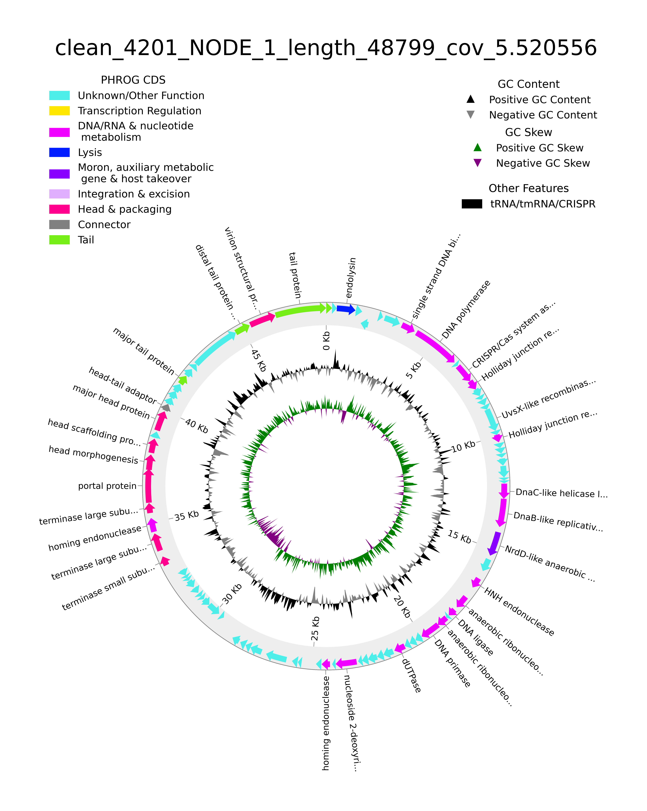
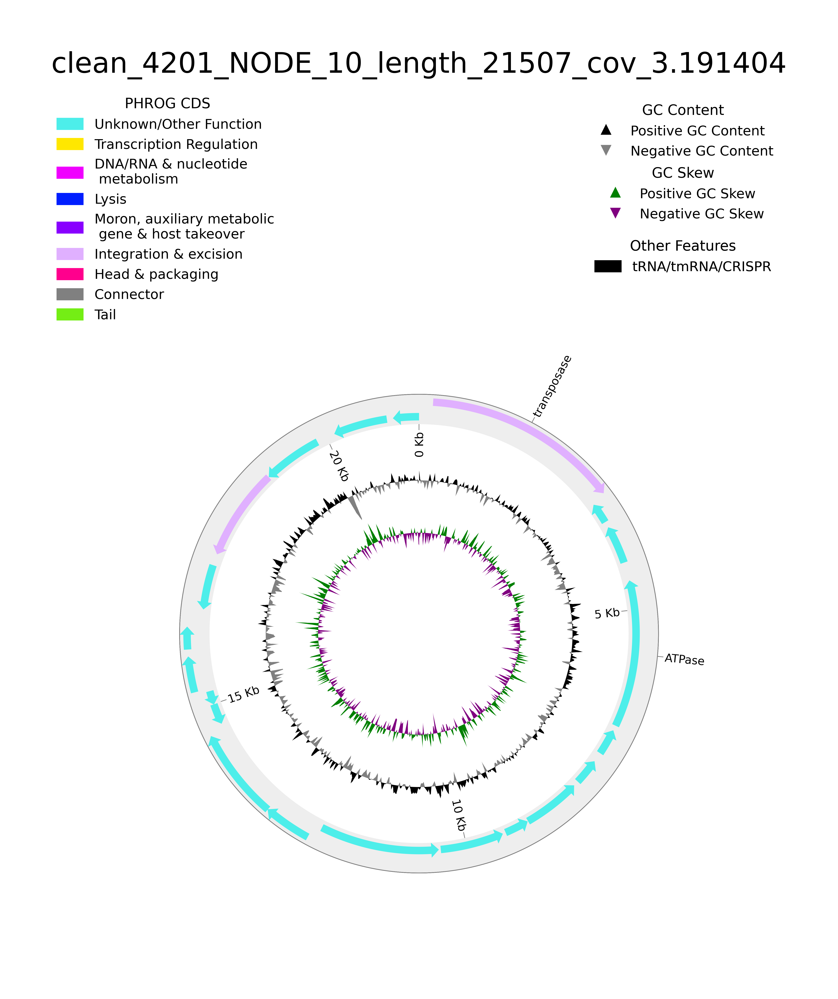
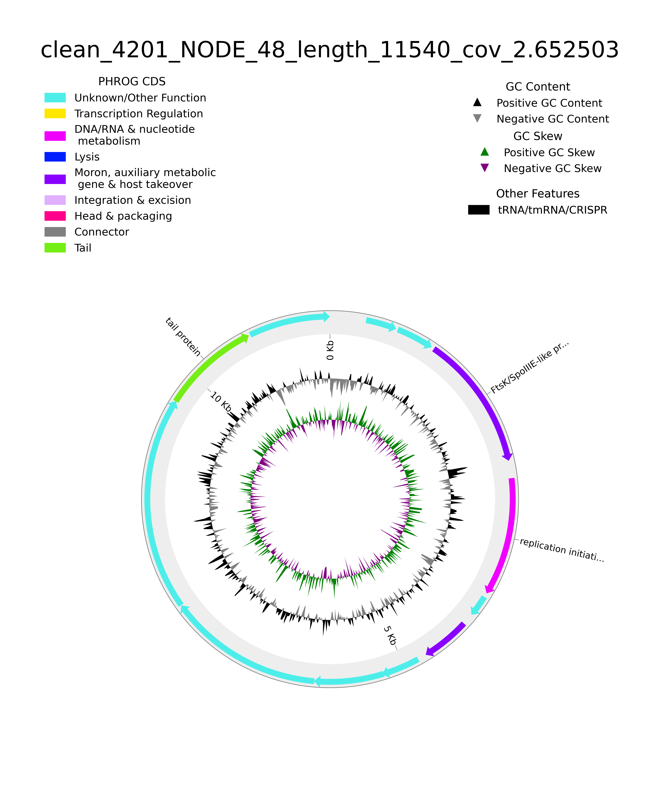
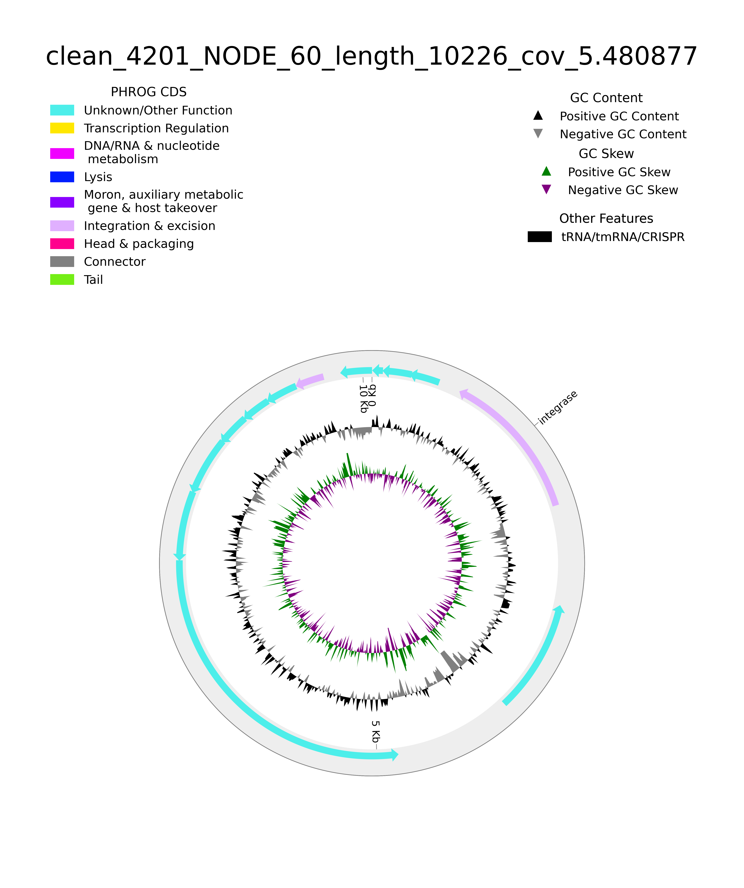
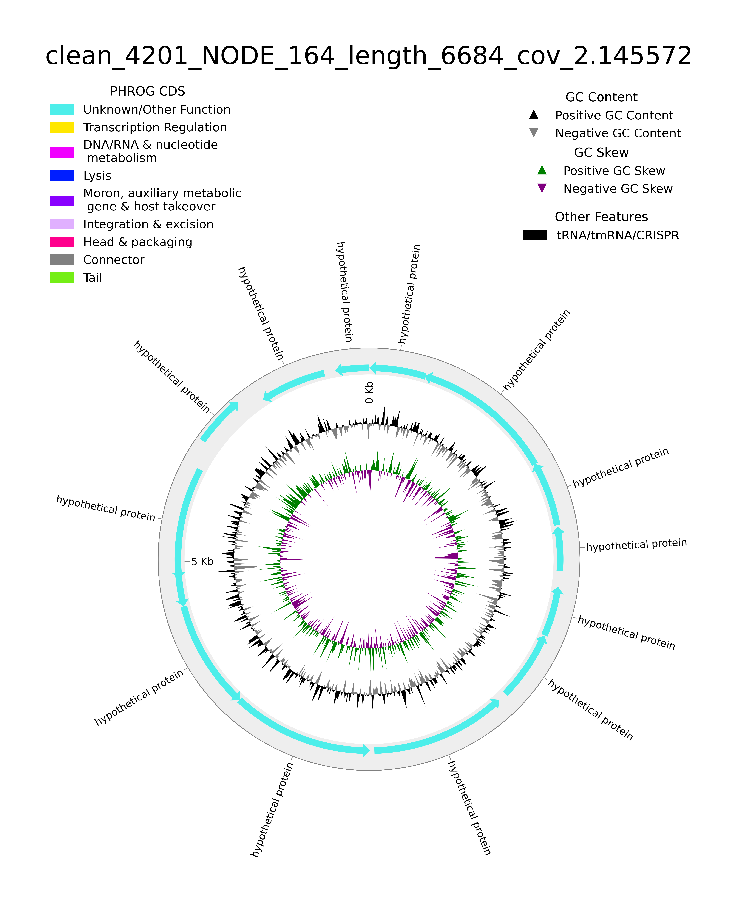
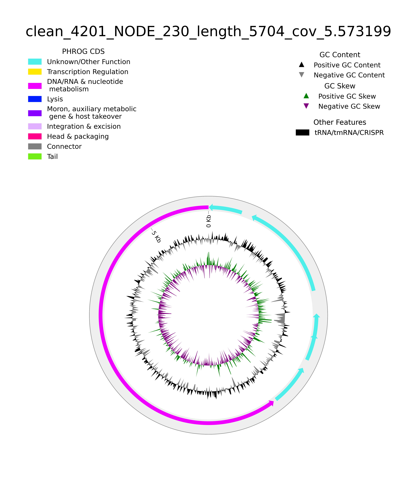
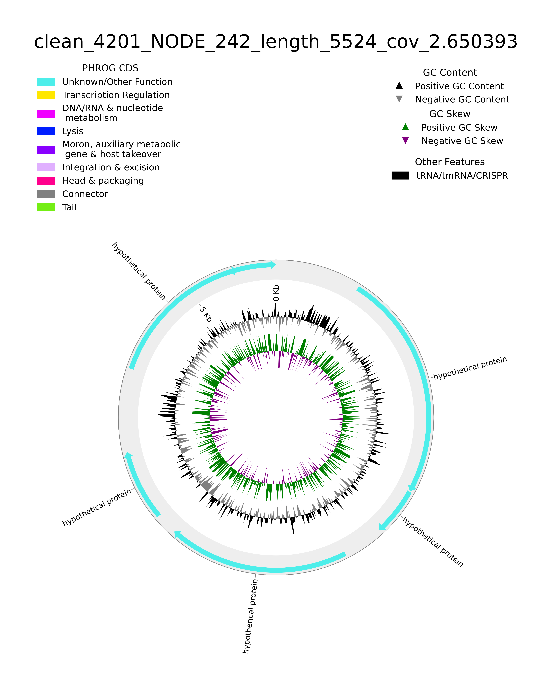

Click on the buttons inside the tabbed menu to see the annotated phages:
| A | C | G | T | N | IUPAC | Other | GC | GC_stdev |
|---|---|---|---|---|---|---|---|---|
| 0.2558 | 0.2414 | 0.2427 | 0.2600 | 0.0017 | 0.0000 | 0.0000 | 0.4842 | 0.1120 |
| Main genome scaffold total | 42320 |
| Main genome contig total | 45400 |
| Main genome scaffold sequence total | 21.551 MB |
| Main genome contig sequence total | 21.514 MB 0.172% gap |
| Main genome scaffold N/L50 | 6399/660 |
| Main genome contig N/L50 | 8090/560 |
| Main genome scaffold N/L90 | 31749/231 |
| Main genome contig N/L90 | 34659/230 |
| Max scaffold length | 48.799 KB |
| Max contig length | 25.759 KB |
| Number of scaffolds > 50 KB | 0 |
| % main genome in scaffolds > 50 KB | 0.00% |
| Minimum | Number | Number | Total | Total | Scaffold |
|---|---|---|---|---|---|
| Scaffold | of | of | Scaffold | Contig | Contig |
| Length | Scaffolds | Contigs | Length | Length | Coverage |
| -------- | -------------- | -------------- | -------------- | -------------- | -------- |
| All | 42,320 | 45,400 | 21,551,079 | 21,514,028 | 99.83% |
| 50 | 42,320 | 45,400 | 21,551,079 | 21,514,028 | 99.83% |
| 100 | 41,526 | 44,606 | 21,495,608 | 21,458,557 | 99.83% |
| 250 | 26,982 | 30,062 | 18,291,781 | 18,254,730 | 99.80% |
| 500 | 9,409 | 12,378 | 12,500,237 | 12,464,406 | 99.71% |
| 1 KB | 3,563 | 5,469 | 8,497,634 | 8,474,386 | 99.73% |
| 2.5 KB | 889 | 1,667 | 4,542,336 | 4,533,052 | 99.80% |
| 5 KB | 290 | 650 | 2,531,988 | 2,527,756 | 99.83% |
| 10 KB | 63 | 180 | 1,003,973 | 1,002,549 | 99.86% |
| 25 KB | 5 | 19 | 174,843 | 174,703 | 99.92% |
Predicted host taxonomy:
No taxonomic information found for this contig
Length: 48799 bp
Phage completeness % / confidence (from CheckV): 90.32 % / medium
Illustration of annotated phage:
Phage DNA:
AAATAAACCTTTAGCAGTCATTAAAAGAACACCAACATATTTTATAGTTAAGGGCGAACC
TAATATAGAATTTGGATGGGAATTAAAAGGTAAAAGACGAGGTTATGAATCTGTTAGAGC
CGAACTAAAAGAAGACCAAGATAGATTACAAGAATTGAATAGCTATGTAGATTTTGAAAA
GAATGAACCTTCTGACATTGAAGGTACTTTATTTGCTAGTCAAAATATAGAGAATAAATT
ATTAGGGGGAATTTAAATGAAAAAGTTAACAGGAACTGCAATTATAAATACTGCGGAAGG
AAAAAGAATAGCATTTACTTATTCAGACATTGACGAATCAACTGGAGAGATACTAGAAGA
TAACAAGAAACAATCCTTTATAGCATTAGACCCAGAATTTTTAAAAGCAATACAAGCCGT
GGAGGATTATGTAATTAAAACCAAGCTACAAGGAGGTAAATAATATGAAATATGCTATTG
ATATGGGACACTGTGTTAGTGGACCTGACTATGGGGTAGTTGGCCTACGTCCCGAGTCCG
AACTCACCAGAGAGGTCGGCAGACCAGTTATAACTAAACTACAACTATTAGGTCATGAAG
TTATAAATGTGTCAGTAGATAAGGCCTCAAGCGTTAATGATAGCCTGTACACAAGATACT
ACAGAGCTAACCAAGCTAAAGCAGATATGCTAGTTTCTATTCACTTTAACGCTACTCCAG
GTGGAGCAGGAACTGAAATATACACCTTTAGAGGAACTCAACTTCCCGAAGCTACTAGAA
TAAGACAAGAGTTTAAATCATTGGGCTTAAAGGATAGGGGTACTAAAGATGGTTCTCACT
TAGCTATGTTAAAACGTACAACTATGAAATCCATGTTAGTTGAATGTTGTTTCTGTGACA
ATCCTAATGACATGAGATTATATAATTCAGAGAAGTTTGCAGATGCAATAGTAAAAGGAT
TGACAGGTAAATCTTCTGGTACTGTAAGAGAAATAGTTAAATCTCAGACACATTATTTAA
TTACACAATTATACTCAGAAATGTCTAGACAAGGTTTTTCTAGTTTGCCATTATGTAAGC
AAGGAGCTAGAGGAAATATTACTAAGACTATACAACAAATGTTGCTTAACATAGGCTATC
CTGTAGGCTCTTACGGAGCAGATGGATGTTTTGGACAAGGTACTTCAATTGCTATTAAAG
CTTTTCAAAGAGACTGTAATTTATCAGCAGATGGAATTGTAGGTCAAGACACCTGGAAAG
CTTTATTTAGAAATTTAAAATAATTAGGAGGTAGCTAAATGGAACAATTCACAAACCTTA
TTAACTCTTTAGGTTTCCCCATCACTTGTGTAATAGCATTAGGGTACTTTGTATATCAAT
TATTTAAATCTAGCAGAGAGGATAACAAAGAATTAGTGGGCCAATACAGAAGTGATGTAG
ACAAGCTTATATCCAACAACGCACAATTAGCAGAAGCATTAAACACAGCATCAGAAACTC
AAAAGTTAATCTATGATAGAATGGATAAAATAGAAACTAAAGTAGATAACATCGATGATA
AAATAGACAAAGTAATAAAATAATAATAAACTAAGAGGGAGAAATCCCTCTATTTTTTAG
TCCATTAATCTAGACTCATATTCTAAATAAATAAGCAACAAGTCTTGTACTTTAGAAGAA
TGGGGGGAAAATATAAATTTCAATATATATCCTTTTAAAGCTATCTCAAACTCATTAGTA
ACAATAGAAACATTTTCCCTATCCCCACCTACATCTAAAGACATACAGCACAACTTAGAG
AAATTAGCCACACACTTAGCTAACACCTCTTTAATAAATCTTTCCTCGATAACACTTAAT
AACTCGTCAATAGTAATTTCTTCTAACACACACTTATGAACAGCTTTTAAATCGACAGGT
ATTTCTATAACGAAACCCCTATATTTCAGGAGTTCTAATAACTTTTCAAACATTTCCCTC
ACCTCTTCTTATATTAATCTAAGTTTGTCAACTAAAAATATTTATAAAGATTTCTATAAT
TATACTTGACTTTTAGTATTATCCATGTTAAGATACTTATGGGGGTAAGGGGGAAAAGGA
GCAAAGCTCCTAGAAGCTTCGCTTCTCTAAACTATAATAATACTTATACTTCTAAAGATA
AGAGATAGGGGTGTGGGGGAAGAGAGAAGAATTTCTTAAAAATCAGTGGGGGTGAAAAAC
TATGCAAAAGATATTAACCTTTTTATTCCTATGTACAATAATGTATTTAGTTATGAAAAT
GGTGGACATAGTATATTGGATAAAATCAAAAGTGAAGGGAGTTAAATAATGTTAAATGTA
TATGTGGTGGCAAGAGCAGACTCTTGTGGTTATGATGAATATGACGAACAAACAATAATT
GCTAGCACAGAAAAAAGAGCAATAAAACTTGCTAGTAAAGAGTATGGTGAATGGATTGTT
GTTGAGAATATAAATTTATATACGGAACAAATTTTAACACAGTCATTTAATGCAGGTTAA
TTAAAAATAATACTTGACAAACTAAAACCTATGAGTTATTATATAAGCAAGATAGAAAAA
TTCATAGGAGGAATTTAAAAATGAAACAAACAGAATTAATTGAAAATGAACAACTAAGAA
CTCTCTTAGGTGAACAAACAGAACTTTTAGATGTTGTAGGGCATTTAAAGCTTATACCTA
CTTTAGAATGTGCGACACATGAACAGGTATCAGAATATTATGGTGTAAATAGAAGTACCT
TGGAGAGATTATATCGTTCCCAATATCATGATGAATTAATAATGTGTGGTGTGCAGGATT
GTAATGGAAAGGAACTTCAAAAACATTTTAATACTAGAAACATCCCACATACTAATCATG
TAGGTCATTTTATAGCTAATGATTCAAAGTACTCATATGGAACATTTAGGATATACACAA
AACGTACAATTTTGAGAATGGGTATGCTATTACCACAATCAGAAGTAGCTAAGCAATTAC
GAAATAAATTAATGAGTATTAGATACACTATAGAATTATCAGAATCAATAAATAACATAG
AACAAAAAAGCACAAGATGTATAAATATAGACAACCCTAAAATGGATGAAGAAAGGCAGT
TAAGATTGGAAAGGGTTGAAGCAGAATTGAATGGAGATGTTAACAAGGTAAGTGTAATTA
ATACTAAATTATTCAACCTCAAAACCAAAAAATTAAATCGATTGAAAGAACAAACCAATA
CAATGTTAGAAGAAATAACTGAAACAACCAATAAACTTAAAAATCTTATGGCCAACTACA
ATCAGATATAAGAACTAGTTATGTAGTTTTAAGATAACACTTGACAAACTAAATAATATG
TGATATTATATAAGAAGATAAGAAAATGATAAAAATATTTAAGGAGGAAGTTATATGGAT
ATTAATTCAATACTAGAAGATTACACTACTTCAAAAGGAATGTTTGAGGAGATAAACACA
CTCAAACTATTGGACGATAAAGACTCAGCAAAGGTTAAAATATTGGTAAGTTCCCAAGAA
GACTTACTACAATATATAAAACCTATTCATAAAATTAAGGTGGGGAAATACGAAAATGAT
GTTCTTTGCTTAGGTGAAGAAGATTGTGAATTATGTAAAGAAGGTTACAACAAGAAACCA
GTTTTAGTATTACCTTTATACAACCTTGAAACTAAACAAGTTGAATTTTGGAAGCGTGGA
AGAAAGGACATATTAAAGATTAACTCATTGTTTGAAGATGGATACGAAGACCTTACTAAA
CATACTTTCAAAATTACAAGAAATGGTGCTAAAGGCTCCAAAGACACAACTTATACTTTT
AATGTATTACCAAAGAATGTAGAAGTTGAAAACTTATCTGAAATAACTGAGGACATGCCC
TCAATAACTGGTACAAGCTTTAGATTAATTCTTGACTTGACACCAGACCAACAAAAAGAA
GCTCACGAAACTGGTGAAGTAGATTGGAAAAAAGCTAAGAACACAGATACTAACAATGAT
GAAATGCCCTTTTAAATAGAAGTTTGCTAGACTTCAAAGGATATTAGCGAAAGAGAGGTT
GACAAGACCTCTCTTTTGTTATATTATATAAGCAGATAGGAGGAATGTAAATTGTTTTAT
ACACAAGACAACATAAAATACTATGTGGGGGAAAGAAAAGAATTTGTATTAGATACAAGA
AACAAGAATAAATATACTAAAATAATAGAAGAAGCTAAAGAAAAAGCTCATTTAGAAGGT
GAAGGATTATTAATCCAACAAGAAGAAATACTTAAACTCTATGTAGATGTTTGTATATCA
ACTGGTGAATATGTACTAGACGTAGAAACAACAGGACTTGACTGTTATAATGATATTATA
GTGGGGGTATGTTTATACACTCCAGGAGAAAAATCAGCATATGTACCTATGTTCCACACA
GACTTAGAAGGTAACAGAGTGGGGGGACAAATAAATTATCAAAAGGCAGTAAACATACTA
AATAAACTAGTAACATCTAAAGCTAAGGCAATAAACCAAAACATAAAGTTTGACCATAAG
ATGATGTTAACCAATTTTAATTACGGGTACTCTAATATATATTGGGACACCTTAATAGCA
GCTAAAATATTAAACGAGAATGAAAAAGAACATGGATTAAAATATTTATATGCAAGATAT
ATTAGTAAGTCTAAAGATATGCAGAAGTTTAAAGACCTATTCAAAGATGTTCCATTTAAT
TTTATGCCTTTAGACTTAGCAGGGATATATGGGGCGAATGATGGAATTAAGACTTATGAG
TTGTACAAGTTCCAGAAACAATATTTAAACCCAAACCAAACACGAGCAGACTACAAGAAA
CTTTATCACATATTTATGGACTTAGAAATGCCCCTAGTACCTATCCTAGCAGATATGGAA
ACAAGGGGCATAGAAATACGTGAAGAGTACACAGAAACTCTTAGGGATGAGCTAGCAACC
TCCAGAGATAAAGCCTATAAGGAGTTACTTATACTTGAAACTAAATATAAAACCCAAATA
ATGGACCACCCAGAAATATATCCACTAATTGAAAAAGCAAAAGGAGATAAGCAATACAGA
ATTAATTACAATTCACCTAAGCAGCTACAAGGCTATATCTATGATATATTAAAATTCCCA
GTTGTAGACAGAAGGAACCCAAGAGGTACTGGAAAAGATATTCAAGAAAAGTGGGGTGGC
AGGAAATTAACTAAAACCCAAAATTACTTCTTAGAGAACTTCCAAGAATATAAAAAGATG
GACAAGTTAATAAAATCATTTGTAGATAAGCTACCAATAGCCTTAGCTAAAGATAATGCC
ATACACACTAATTTCAATCAAGTAGGGACAACCACTGGAAGATTTTCTAGTTCAGAACCT
ATACACAAAATAAACCTACAGCAGATACCTTCAAGGGGTGTAGGAACTAAGGTAAGACAC
ATGTTTATAGCTAGAGAGGGATATGTATTCATAGGGTCAGACTACTCCCAAATAGAACCT
AGAGTGCTTGCTAGGTTATCGGAAGATATAGAAATGCAAGCCGCTTATAAAGAAGGACGA
GATTTATACGCAACTATGGCAAGTTTAATATTTGAATACCCATATGAAGAATGCATGGAG
TTTCATCCGGTAACAGGTGAACTCCAGAAAGAAGGAAAAATAAGAAGAACAGCAGTAAAA
AGTGTTTTATTGGGGATTATGTATGGCAGAAGTCCACAGGCCATAGCCAATCAATTTCAC
AAAACTAAATACTGGGCAGATGAGTTGATAGCTAAGTTCTACAACCATTATCCAAATGTA
AAAAAGATACAAGTAAAATCTGAATACTTAGCATATAAATATGGGTTTGTTGAAACTATC
CTAGGTAGAAAGCGTAGACTACCAGAAATGAGAAAGACGGTACTTCACTCACCTGCATAT
AATGCATGGGCAAGGAAGTGCTTAAACGCAGTAATACAAGGAAGCTCCGCAGATATAATG
AAGTCAGCTATGGTTAATCTAGCCAATAATGAACAATGGAAATCTTTAGATGCTCATATG
CTACTTACAATTCATGACGAATTAATATGTGAGATAAAAGAAGACCAAGCTTTACAAGGA
GCTGAAATATTAGCAACGGTTATGAAACAAACAGGACAAGACCTCATTGACATGCCTATG
AAATGTGATGTTGAGATAACTAAGGTATGGGGTGGAAAAGATATTAGAAATTTATTAAAA
TAAAGCTTGACAGATAACTAAATATAGGTTAATATATAACTAGAAAGGGGGTTAATTTAT
GAAAACATATAATATAATTGAAGTTATGGCATTACCAAATAATACAAAAGTAAAAGATGA
ATCTGGGCTTGAATACACAGTAAAGTATGATAAAATGGGAAAGGTTNNNNNNNNNNCAAG
AAACAATATGTATGATATTATATAAGAGAAGATGAAGGAGGAGATAGTTTGAACATAAAT
GAAATCTTAAGAGATATGACGTCAACCTCCTTTGAAGATATTTTTCTAGCAGACTACAAC
AAAGCCTTAGAAAAGAAATCAAAAAAGAGCGAACAATCTACACCACATTCTTATACTAGA
CCTTCAAGTTTAGGTAAGTGTCCAAGAGAAATATATTACTTAAGAAACCAACAACCACAA
GAAAGAGAGAGCAACTCAGAGTGGAAGTATAATCTTATTGGTATATTAGAATCAGGCACA
GACCGCCACGAACGTATACAAGCTACACTGCAAGAAATGGAAACTATGGGATTGATAGAA
AATATCGACATAGAACAGGCAGCTAAGTTAGCTAATACCCGTGGGGTAAATACTAAATTT
GTTGGTTGGAATGAAGATAAAACAGAGGGTAGATGTTTAAATGAAGATTACGGAATTTAC
TTTCAACCAGATGGATTAATAAATTATAAGGGCAAGACAATACTGGTAGAAATAAAGACC
TGTTCCCAATTTAAGTTCGCTAAACTCAAGAAACAAAACAAACCATTTGAAGAACATCTA
TACCAAGCAACTGCATATGCTTTAGGACTAGATGTAGATGAAGTGTTATTCTTCTATGAA
GATAGGGGATTTACTGCCCACAAACTCTTCTTAGTAAAGATAACACCAGAAATGAAACAA
ACAGTTATAGACAAGCTTAATTATTTAGACAAATGTGTAACTAACAACGAGTTACCCAGA
AAAGAAACAGACAAATGTCAATACTGTAAGTTCAAAACACTTTGTGCTAGTGAATCTTTA
GACTCAGTTCAAATAAATAATACACTAGAGGATTCTGAGGTATTTTGAACCCAGGAAAAG
CATTTGAGCAGGACTTTAAAATAAGTTGCCCCGAGGACATATTGATACTCCGTCTAATTG
ATAGTTCTTACGGGGCAAACCCCTGCGACTTTATAGTTTATGAGAAACCTTATTTTTACA
TGTTAGAACTGAAAAGCACAAAGTTAAAAAGACTTCCAAAAGATATGATAAGCCCAAAAC
AATTAACTAGTATGAACCTCGCTAATAATGTTGAGGGTGTGACCGCAGGATTCTTAGTTA
ATTTAAGGGAAGTACAAGAAACTTACTTTATTAATGGACAAACAGTATGGAATTTATTTC
AAGACCCTAATAAGAAATCGTTAAGTCTGGCAGACATTCGAGCTTATGGGGTGGGGATAA
AACAAATTAAAAAGAGAACTAGATACAGATATGACTATGAGTTCCTAAGGAGGATAGTAT
GACAGGACACCAAATACTACAAGAAATAGATTCATCAAGAAAGAGCTTAACTATAGGCAT
ACAGGAATTAAAAACTTTGGCTATAAAGAAAGCCGAGGCAGAAAGTAAATATAAAATTGA
GTTAAGAAAACAACTCCTATTTTTAAGAAGTCAAGGTCACGGAATTAATATGTGTATAGA
CTTAGCTAAAGGACATGAAACAGTATCTAACTACAAGCTAGAATATGATATTGCCGAGAG
TTCTTATTTTATAGCCTTGGAGCATATTAAATCTATTAGACAAGACCTAGAAGTCTTAAA
GAGTTTATTATCCATGGAGAAGTTCTTAACAAAGGAGGATTAATTATGATTGCTAAGTAC
TTAGCCAATATAACATTAAAGATAACAGAAGATATAGGCGAAGATGAATTGATAGACTTA
CCTAAAGAAACATTTGATTACAAGATAAGACAACTAATAGAGGAAGCAACAACCGGGGAT
GTAGATATGGTAATATATTCAAAAGTTGAAATAGAAAACTAAAAGGGGGTAAATATATGA
AATATAGAGAAATTCCAATTAATTGCAAAACAGTTGAAGCTGTTCAATTCTTAGGTAATT
CTTATGGAAACTTATGTGCAATTGGAAGTATGGGCATATCCCCAAATTTTAAACATAATC
CGTTAACATTGGAAATTAAAACATCACAAGGAATTAAAACAGCGTACGTAGGGGATTATA
TTGTAAAACTTGAAAACGGAGATTTTCAAGTTTGGGATTTAGATACTTTTAGTAAAACAT
TTGAACTAACAAGGGAGGAATAACAAATGTATATAGATAGGTATAAAACGGGACTACAAC
CTTGTTGCTTTACTTGTATAGACTACAAGCCAACTAGCTTAAAAGCTAGACAAGGTATTT
GTTCTTATCATAACAGGAAGGTCCATATGTGTATGTACTGTGAATGTTATCAAGAAGACC
AGAAAAAAGTTAATTTAATCTTACCCCGCCTAGACTTAAGTGAGTTATAATGGATGAACT
TTTAGTAAAGGAACTAAATAAGAAATATGGGGATATAATAAAATTTGGTTGCACAATGCC
TAAACAAGAATTTATCCCTTTTAGTTCTCCAACACTTAATTATTTAGCACGTGGTGGGGT
GTGTGAAAATAAGATGGTGGAATTCTATGGTACTGAGGGAAGTGCTAAAACAACACTGGC
GTTAGATATTATAAAGAACTTCCAAGTAAAATATCCAGATAAAACAGTACTTTACCTAGA
TGCTGAAAACACATTAGATGAAGAGTGGGGAAACTTACTAGGTGTTAACTGGGAAACAGT
ACTTTTAATAAAGCCAGAAGATGAACCTGGTGAGGTATTATTAGATATGGTAGTAGCTTG
TGTAAAATCGGGGGATATAGGACTTGTGATTATAGACAGTATTCCATTCTTAATGAGTAA
ACAAGAATTTGAAAATGATTTAGATAAAAAGACCTATGGTGGAAACTCCGCAATGATGAC
AACATTTAGTAGGAAGGTAGTACCATTATTACATTCGTTTAGCTGCACATGTATATGTAT
AAATCAAATGAGGGACGTAATAGGCTCTATGTTTCCTATGAAAAGTACACCAGGAGGTAA
AATGTTACGTCATGCCTATGTACAAAGATTCTATCTACAAAAAGGAAAGTACTTTGATGA
AAAGGGAAGAGAGTTAACAAATTCAGCAGAGTTCCCAGTAGGACATAAAGTGCAAGTCAA
ACTTGAAAAGAACAAAGTAACAAAGAACGATAGAAAACTAGCTACATTCTCAATAGATTA
TTCAAAAGGGATAGATATATTAAGCGATACTATTGAATTAGCTACTTTACTAGGGGTTAT
AGATAAGCGTGGAGCTTGGTTCTATGTAACTTATGGTGGGGAAGACTTAAAATTTCAAGG
CAAAGCTAAACTAACAGAAGAACTAGAAAGAAATAAAGAACTAAGAGAATATATAATACA
AGAAACTAACAAGGAGGCTATTCTATAATGTGGTTTATACGAGCGTTAAGTTTAACACTA
ATGACAGTTATAAATGAATATGCGTTGTACAAGACAACAAAAGATATAGTATACAATGGG
GGAAATAAATTGGAATTGGCATGTACTTTTATTTATTCAGTAGTGATAGTTCATGTAATA
TATTTAGCTATACTAGGAGGTCAAACAATTGGCAACTAGAGATTATTCAGACAAACAAGA
AAAACGAATAGCCAACTACCTAGGTGGGAGAGTCCAGAGCGGTTCTGGTGCTACCTCCCA
CCAAAAGGGTGATGTAATACTAGATGATTGGTTGCTTGAATGTAAAACTAAAACAACTAT
ATCTAAGAATCATACCCTGAAAAAAGAATGGTTCGAAAAGGCTCACGAACAAAGTTATCA
GATGGGTAAATCTTATTATGCCTTAGCTTTTGACTTTGGTGATGGTAAGGACTATGTAGC
TGTAGACTTAGGTACTTTTGAAGAATTACTAGAATTAAAAAATATACTTGACAATGCAGA
AAAGTAATGTTATTATATAAGAGAAGTAAGGAAAGGGAGGAAATTTAAATGGCTAAGAGT
AAGTTTAAGATAAGTAATTTAGAGGTAAAATTCGGTATGACTGTTGAGGTGGACAAGCGT
TGGATAAGAGTTGACAGGGGTGTAATACTTGACAATATAGTACCTACAGAAGATGTAACA
GTGGGGGAAATAAGGGAAGCTTTTGACAAGGCACAAAGTATATTATTAGAGGAAGTAAGT
AAAACTTTGAAGGGAGTAAAATAAGATGAAATTCGAATTAAATTCCAAGCAAATACCTAA
GATGGGTGTAGGTTCAGTTGTAGTTACTAATAAAGATACTTATCTAGTTATTTATACTAA
CCATAGGTATATGCTAATATCTTTAGAAATGTATGTTGGTTGCGGGACTGCTAGTAGCCT
TGCAGGATTAACAACTATGATAGAGGACGCATTTGACGAAACCATATTGAACATACTTAT
GTCCGATGAAGTTACATTAAGGGGGTAAAATAAGATGAAGATAGAATATAATATTAAGAT
AGTTGAACCTGTAGATGAAAAAGACAAAGACCTATTAGCACAATTACAAGAATCAGGAAA
GTTTAAAGAATCTGTACAGGCTGTTATAGCTAAAGATTTAGGTACCTTAAAAGAAAAAAT
ATCAGTAGATTACAAGATACTAGAGGATTAAAACCTCTAGTTTTCTTTACAAAATATAAG
GGGGATATGATATGAAATTAACATTAGTAATAACAACATTAACTAGTAAACTAAATACAA
CAGATAGATTAACAGAAAGCATAAACGCAGAACTTAACTATTTGCTAGATGTAAAATACA
GAAAAGGAACTATAAATATAATTCATGATATAGAGGAATACACAAAAATAAATCAACAAC
TTTTTATAACGACAGCATTAATTGAGATACCTAAAGATAACATAAAAATTACAGATAAAG
AACAATACCTAAATAACTTTGTGATAAACAGCAGTAAACTACTCAAAGATTGGAAAATAC
TAAGTGCAAATATAGAGATATAGGTGGGGGATAATAAAATGGTTATAACAGAACTTATAG
ATAAACTATTAGAATTACCGGCAGATGCTAAAGTAAAAGGGGAATTAAAATGGGACGAAA
CGAAAGAAGAATTAACATTAGTAAGAAGTAATAGAAAGAAGCAACCTAAAACAGATAACA
CAGAAATACAGACTCTTATGGACAACCCAGAAGCTAGATTTAACTTTAGAGAATTTCTTT
TAGCTTGGGGTGTATTATATAGAGAAATCAGAGGTACCAATATAACGATAAGTTTCCCTA
GAGATACAGGAATACTTAAAAATACATTTCCAACAGTGTCAGATTTTGGTCATTCTGAAT
TGAAGGTACTTAGGACCTATCTAGAAATATTTGACCAACAAATTAAAACACCGACATACA
AGCAACCAACCCTTGGGGGATTAAGGTATGCTATGCAAAAGGTAAATCAAGCTATGGCTA
AGCAGAAAATACAACAACTACAAGATAAGAATAAACAATATGAACTTACAGAGGAGGTAT
TCTAAAATGGAACTATTTAAGCAAATACTTACTGTCGGAATATCACTAACTATTACAGGA
TTGACATGTTATGTATTAGTAGATTTATTCTGCACTATCATGGATAAGTTAAATAATTGG
AGGGGATAAGGTGGATATATTATTTAAGACTTTATATTACTGCATAGCATATGGAGGTTC
ATGTGTGTTAATAATTAGCACTATATTAGTAGGTGGATGGTTAGTATGGAAATTAGACAA
ATATTTGACGTACAAATAGGGAGGTAAACTAATGAACTGTTATGCTAAAGATTATTGTAA
GGGGTGGGGAAAACCAAATTGTAATGAACTATGTAATTTATATGTAAAGCTAAATGCAAT
ATACACACAATCATACATACCAACTAGATATAGATATGAAATACCCCTAAGACCTCAAAG
TCATGACAAGGAAAACTTCTTGTTGTTAAAGGATTACAAAGACAATATAGTAACACATGT
AGAAAATGGGGACAACTTATATATCTACTCACAAGAAACGGGAAATGGAAAAAGTTGTTG
GTCTACTAAAATAGCAAATCATTATATAAGAAAAATCGTAACTAAATCGCTAATAGAAGA
TGAAGTAAAATACATGAATGTATCAGAATTTTTAGAATCTATCAAAGATAATTTCACTAA
CCATGACACAACATTTTTAGAATATAAAGAATCTTTAAAGGGTTGTAAACTTCTAATTGT
AGATGATATAGGTGCAGAAAGACCTACAGATTGGGTGAGAGAAACATTGTATAATATAAT
AAACACTAGATATATGGATATGAAAGCAACTATATTTACTTCCAATTGCTCACCAGACAT
GCTTATTGAACAGCTAGGTAAAAGAATAGGCAGCAGAGTATTGAGTGGGAAGATAGTAGA
ATTAAAAGGTTTTGATAGGAGGCTAGATAAATGATAAATGCAGAACTACAAGCAATAAAT
TATGTAATAAATACTGGTGATATATCCTCTCTATTAAAATCTGGAATCGATGAAACATAT
TTTAGCTTAAATAAACAAGAATATCTATATATTCAAGATTATTATAACAAATATGACATA
ACACCAAACATAGAGATATTTAAATCTAAGTTTCCTGAATATATAAAAAGTGATTATAAA
AACTCACCTAAGGCTGTAATAGATTCACTTCAAGAAAATGCTATTTATTCAGACCTTACA
CCTATACTACAAAAATTTAGCTCACAATTCACAAGTAATTCAATTAAAGCTACTGAGGAA
TTACAAGCTAAGATACAAGAGGTAAGACACAACAGACTAAACAAATCAAATATGGGTGTA
GATATTATAACAAATGCTAACCAAAGATATGAAGATTATATCGAGAGGAGTAAAAAGGAA
GGTCTTTTAGGCATAAGTACGGGCATAAAAGATTTAGATAAAGTAACTTGCGGGTGGTTA
GATTCAGACCTAATTGTATTATATGCTCGTACTAATATTGGTAAGTCTTGGTTAGGTTTA
TATTTTGGTTTACAGGCTTGGAAACAAGGAAAAACTGTAATGTTCTATGCAGGAGAAATG
TCCCCAGATATGATAGGATTTAGATTCGATACACTAAATTCTCATTTAAGTAACTATGCA
ATGATAGGTGGGGATAAAACAATTGAGACTAAATACAAAGAATACACAGAAGACTTATCA
ACTAAAGAAGGATTTAAAGTATTTACTACAACAGATTTTGGAAATAGGAAACCTACAGTT
CAACAATTAGAAGAAAAAGCTAAAGATATAAAAGCAGACTTAATTATAGTGGACCAAATA
TCTCTAATGGAAGACTCTAGAAGGGGTAAAAATAAACAAGAGAAATATGGAAACATAGCA
GAGGACCTATTCTTATTAGCACAGAAGTTAGACAAGCCTATATTAGCACTAGCACAAGCA
GGAAGAGAGTCAGCTAAGAACAATTCAGAAGATGCTCCAGAACTTCACCAAATAGAATAC
TCAGACCTAATAGGACAATTTGCCACTAGAGCAATAGGTATGAACGTCGTAGATAAAATA
TTGAAACTTAATATAAAAAAGAATAGACATGGGGGAAAATGTACAGAAATTCTGTTAAAT
TGGGATATAGATAGTGGACACATAAACCCATTAGATGAAGAACTAACAGAGCAACTAGGT
GAAGACTACGGATTTTAAATGGTGGGGGGAGGGTGAATAAAAATGCCAAAACTACTAACA
ACTTTATTAATGACATGCTCAATATTTTGCTTATATAAATCAATCAATGCAGAATATAAA
CAAGCTATTGAATACGAACTTCTAGTAATCATCTGCTTATTGCTTTTGATTATTGGATTT
ATAGTAAAATTTATCTCAGGCTAATAGGGCGAGCAACGCTCTTATTTTTAACTATTTAGG
AGGAACAAAAATGATAGTAATTAAAAAGGATTTAACAAAACAAGAATTTGAAAAAACCAA
GATAGTAAATGCATTAACGAAAACTAATGCTCGATTAAGTGAACCAGTACCAATAAAGGA
TTTAATAGAGATATCAGTAATAGTGGAACAACAAATTAAAGATGTAGATACAATACATGT
CAATCAATTACATGAAATTGTCCTAAATGTCCTAGAACAAAAAAATATACAACTCTATAG
AGAATATAAATCATACAGGGATTACAAAACAAAATACTCCAAAACATTATCTAGTTTATT
CAAAGAAACTTCTCGTATCATATGGGGGGAGGATAAAGAAAATGCTAACAAGGATTCAAC
ACTAATTAGTACTAAGAAAATACTCCTATCAGATACAGTAGGGGAAATACTAGCTAAAGA
ATTTGAATTACCCCCACACATAAAACAAGCTCATGAAAATGGGGACATATACCAACATGA
CTTAAGGGACTTTATTATGGGAAGTATAAATTGTTGCTTATTTGATATGAGTAATGTATT
GAAAAATGGATTTACTTTAAATGGAGTAGAATATAGAGAACCTACAGGGATAACATCAGC
AGGACACTTAATAAGTGATATAATACTTAGTGCAAGTTCACAGGAATTTGGCGGATTCAC
CACCCCAGAAATTGATACTATACTAGCTCCGTATGCGGAAAAGACATACAACAAAGAGCT
TAAGCATTATAGACAACTAGGCTTACCAGATTATGAAGACTTAGCAGAATTAAGAACTAT
TAGAAAGATAGAACAAGTTTTGGAAGCTATAGAGCATAGATTAAACACAATAAATAATGC
ATTAGCCCAAACACCTTTTGTAACATTTACTTTCGGTATGGACACCTCTAGATGGGGAAG
ACAGATAAGTATACAGTTATTAAAGAACAGAATAAGAGGTCTAGGTAAAAAGCACATAAC
AGCTATATTCCCTAAATTAGTATTCTTACACAGACAAGATATAAATGGAAAACCAGGAAC
ACCAAATTATGATATAAAAGAACTAGCTATAGAATGTAGCATGACTCGTATGTACCCTGA
AATCGGGGCATAGTAATAAACTATGAAAACCACGTGAACTCATAAATATGAGGTGTATAA
TTAACGTATAGGATTAGTAGGAAATGACTAATAGTGATTATGCTAACAGGGAAACCCTAA
CGTCAAGACGAGGGCAATCCTGTGCGAAAATATCATGTAACTTGGCTAAAAGGGGGAATT
TAGTTGAGTGATAAAATAACTTATATATGCCCAATATGCGGGGCAACCAGAATAGTAGCA
AAAGCAAGTTATAAAGGTAAACAACATAATCAATTTTGCACTAAATATTACTACGATAAA
TTAAAATCTGAATGCGGAGTTAAGGTGGCTGAGAAGTTTCATAGGACTTATCGAATAGCA
AGAGAACGCTGTAACAACCCTAAGAATAAAGATTATTTATACTATAAAGGGAAATTCAAG
TTTAAGAACTTCATAGAGTATATACACCAAGTTTGGGATGAGTTTTATATAGCAGTACAA
ACCTATGGAATAGATGATTTAAGTATCGACCGACTTGATAATAGTAAGGGGTATGAATCT
GGCAATATTAGGTATGTGCCGATGAAGCAGAACTTACAAAACCGAGATGTGGTAAAACCT
ATTCTAGCAGTTAATCAAGAACATGGATTAATAATAACAAGTCCTAGTATTTCAGACTTA
ACAAATAGACACCAAGACTTCGTATCAACATCAGCAATGCATAGTGCTGTGAAGAATAAT
AAGCTATACAAGAAATGGAAATTAAGTTACATGATATAAACGTCAATCGACTATCGAAAC
CATAGCATAAATGTAATTAGGGTTATTTATGTGAATAAGGGAGTAGAGTACATTTAGGGT
GAAATTCCTTAAGTGGAAGTGCGTGGAACTTACCTAAAAGTTATGATATAGTCAGTGCCT
AGTGAAAGCTAGGACTACGCGGACTGGTTATCTTTAGACAAGGGTTATGTAGCTGATATA
TATGATAAGCATAGGGACATAATAAGTCCCATGGGTAGAGTGCTGCCCGTGTCCGCATTT
TCTCTAACAAGAGGGTACTCTCTATAAGAGTGCTAACGGGGAAAACTTAACAAGTCATGT
TGAAGTTAATCCCGTGGGAGCGTTAAACAAATTAGAAAGGAGTTAAATTGAGAATAAAAG
AATTTCCAAATTATAAAGTAACAAGCGAAGGTTTAATAATAAATAGTAAAGGTAATCAAA
TATGTCGGTTTATTGACAACACAGGTTATTACCAGGTGGAATTATCTAAAATGGGGAAGA
AATATAAGAGAAGGGTTCATCAATTAATAACACAAACAATATTTGGACAACCCCCAAAAG
GATATATAGTCAATCACAAAGATGGTAATAAATTGAATAATAGAATAGAAAATCTTGAAT
ATATAACATATTCCCAGAATACTCAACATGCTTATGATAATGGACTAATACCAAGAAAAA
GAAGAACTGAAATCATAAGTATTAATAAGAAATCTGGATATATTCAGGAGTGGCAATCTA
TTAGAAGTTGTGCAAAAGAATTAAATATAAATCGTAAGACCTTATCCGCAATACTAAGCG
GACAAAGAAAAGGTCAGTATAATTGGAAATTTGTTTAACGAGCCTGTAACGACTACCGAA
AAGATATTGTAAATGAAATTAGGGTTGTTTACGAGAGTAACTGAGTAGGGTACACATGAA
GTTGAAAGGCTTTTTGTGGAAATGTGCGGGACACACCTAAGTGTCAAGAGATAGTCTGTG
CCTTTAGAAATAAGGGAATAACACGTGTAGAGCTTACTTAAGTCCTTGGTACAATGAAGA
AGGCAAAATAGTATTTACTGGTCGAGCAAACTGTGGTGCTATTAGTTTAAATATCCCTAG
ATACTCAATTCAAAGTGGGGGAAATGTAAAAGAATTTGATAAGCTATTAGAAACTAACTT
CTGGAAAGCAATAGAACTTCACTTATATAAATATGAAAAACTTAGAAAAGTAAAAGCTTC
AACTAACCCATTATTCTTCTGTGAAGGCGGTTGCCACATACAACTAAATCCAGAAGACAC
AATAGAAAAAGCAATAGATACTTTTACTTGGAGTATTGGTTATATAGGTCTGGAAGAAGC
CACATATATGATGAAGGGAAAACACCTGCATGAAGACCCTGGGTTTGCTCATTATGTTTT
AGATAAGTTGAACGAATTAATAGAGAATGCTAAAAAGAAACATGGTTTACTGTTTGCCCT
TTATGCAACACCAGCGGAAGGTTTATGTCATAAATGGGCAGAAAAAGATAGACAAGCCTT
TGGTAAAATACCAGGGGTAACAGACAAGGCTTATTACACTAATTCATTTCATGTAGATGT
AAGAGAGCATATCCCATTTGATGAGAAACAAGAGATAGAATCTGAACTATTCCATAAATC
CAATGGTGGACACATAAGTTATAATGAATTTCCTCATGGGAATAATAAAAAGGCTTATGA
ACAAGCTATAAATTTAGCTATGAGGTTAGGATTGTATTATGGAATAAATAAGGAATTAGA
TATGTGTAATACCTGTGGCTACGCAGGAGAAATAAACGGGGAATGTCCTAATTGTGGGGA
GAAAATAAAAATAACTAGAATCAATAGAGTTTGTGGTTATTTAGGTTATGAAACTATAAA
TGGTATTACTAGATATAATGAAGGAAAGGAAGAGGAAGTTCATAATAGGGTAAAGCATTT
CTAACAATATAATCTAATTTTAATTATGGGGGTTGACAACCCTCTTTTTATTTGCTAATA
TATAAGCATAGGAGGTGAAACCAATGTGGAGATTTTCAGACATATTTAGCGAATTATTTA
TAGCAATCCTAATGACTTCTCTACTTGTATTATTACTATGGACAATATATTAGAACTTAT
TAACAGAAGGGAACGTCAAATATTAGTACACTCAATTCTATACTATCATTTTAACGACAG
CATCTGGGAAGATAGATTGTTTGATAGAGTGAGCTTAGAATTAGTAAAACTAGGACAAGA
CTACCCAGAAGAATTTAAACAATCTGAATTGTACGAGCATTTTAAAACATTTGATGGAAC
AACAGGTTATGACTTACCTTTACAACATCAAAAATATTGGCCAATCGCAAATGCCCTGCT
ATTTAAGATACGTGGGGGGAAACAAATAACTTATAAAGAGTTCTATGATTATGACATAGA
TAAATACTTAGGATTATAGGAGGAATAACTATGACAGATAGAGAATTAGAACTAGAGGAG
ATTATTATAGATGTTGCTTTTTATTTAGAAAGGGATATGTTTCATATAGTAAAGAATCTA
ATAAACAAAGAAGCTAAGAAAATTAATAAAAGATATGAGGAGGTATAATATGAAATATTT
AGGTATCAAACCAACAGATTTTAATAATGGTGATGGAATAAACGTTAGTTTTTGGGTTTC
TGGTTGCCCCCACCACTGTAAGGGGTGTCATAATCCAGAATCATGGGACCCAAATAAAGG
TACAGAATTTACTTTAGCCGCTGTGTGTGATGTATTAAGAGAAATGGATAAAATATGGAA
ACCTGATTTGGCTATTCTGGGTGGAGAACCTCTAGCTGATTACAACTATAAAGATGTAGA
AAACTTATGTTATTTTGTTAAACAAGCATACCCAGACCGCAAGATATGGTTATGGACAGG
CTATATATTAGCAGACTTACAAGCAGAGGATAAACTAGAGATACTAGAATATATAGATTT
CTTAATTACTGGAGGATATGTAGAGTCTGAAAGAGATACTACATTAAAATACAAGGGTTC
TAAAAATCAAACTGTATGGAAAGTAGATGGGGGTAAACTAGAATCATGGAAGTAGACAGT
ATTATTCAAGAATTAGAGAAACTAGGTTATTTCAAAGACCAAAAATTGAGTGGACGGGAC
CTTATGGTTACTTGTCCATTCCACAACCATGGTACTGAAAGAAAGCCAAGTTTTGGTATC
AATCTAGATACTGGAGCTTGTCACTGCTTCACGTGTGAGTGGGGTGGGGGAATAAATAAA
TTATCTTTAGAATTAACAGGAAAATCAGTATCAGAACATACTAAGTACAATATAAAAACT
ACAAGAAAAGAAATACCATTAATAAAACATTATTCCCAAAAATATATCCCGATAAGCACA
GTAAGACAACTATTAAAAAATAATACACCTGCAATAACTTATTTAGAATCAAGAGGGATA
ACAACTGACCAATTTCCAATAGGTTATAACAAACAACATAACTCTCTAGTATTATTTATA
AGAAATCTCAATGGGGATTATATATATACTAAAGAAAGATGCATCCACGAGAAAAGATTT
TATAATACAACAGACGCAAATAGAGCTAAATATTTGTTTGGATTATATGAGTGTGTTTTA
GCAGGAGCAACAACTGTTTGGTTATGTGAATCTGAAATAGATGCATTAACTGTATGGAGC
AGAGGTAGCTATGCAGTTGCTACAGGCTCTTCTGCTATATCTAAAGGTCAAGTAAGACAA
CTACAACTAGCAGGAGTTAGAACTGTTGTAGATGGCTTAGACAGAGATATAGCAGGTAGA
CAAGGTTGGTTAACATCTAAAGAGATATTACCTATGCAAACTATTGAAACTGAGTGGGGA
AACAACAAAAAAGACATAAACGAAACTTCTTTAGAAGAATTTTCAAATATAGTATTGACA
AATAAAACAACATATGATAATATATAAAACATAGGAGGTAAACAAATGCAAACTAAATAT
CAAGACATTAAATTCGGAGATAATGGGAAATTAGCTGAAAGTTATGTATCCAAGCTATCC
CAAAGAATACTTGATGGGGAGAGGATAAAGTTCTACTCAGAGAAGGATGGGGAAATAATA
AATTATATAGTGTTAAGGAAAGTAGCTATATTATTCTATTTAGAACCCGAAAGAGTATTT
AGGTCCGATATAATGACAGTAAGAAGAAGAATCAGAAAGATAGTTCAACAAGATTTACCG
AAGGGTTGTACCTTTGGAGTAGATTTCTATAAGGAGGAATTATAAATGGAGTTAGGTAAA
AAATATAGACTTATAAATACAGAGGAAAATGTACAAAGTGAAGGTATTATGATAGGTACT
ATTGAGGGAACTTTAATAACACTCGGAATGGAAGATTGTAAAGGTATAATATTAACCGAC
GAATCTGAGGAGTTACGCTTAGCTGAGGACCTTGGGGAGGAACTTACAGAAGAGCATTAT
TGGTTAGCTTTTGATGAACCTAAATTTCTAGGTAGCACTATATATGGAATATTAAGTAAA
CATGAATTAGAAAGATTGGAGGAAATAAAATGAACTTTGATATAAACGAAACATCTAATA
TTAAAGCTGAGTTGGGTTCAATAATCGTTACAAACCAGGACATATATCTAATAACATCAG
TTAATGGGAATTATGCATTAACATCATTGAACGATAATATACAGTACGGTATAAGAGGCA
GTTATGAGGGTTTGATAGATGCTATAGAAACATTATATCATGAAGATATATTAAGAATAA
TTAGTAATGAAAACCTTACACTAAGGGAGGAAAAATAATATGAATATTAGAATAAGAAAG
TTAAGACCAAGTGCTATAATACCTAAACATGTGGGGGGAAACAAAAGAAGCTGTTGGCTA
GATTTATACGCTAGCAGAATAGAAGTAGTATCAAAATATTGTCTTGCTATAGCAGACACT
AAAGGAAGTTCAGTAGGTTATCATGCAGGAGATGTAGTAAAGATTAAATTTGGTGTAGCT
ATGCAGTTACCAGAAAGTTATGAGGGTTATTTAGTACCTAGAAGTAGCACAGAGAAGAAT
TTTGGTCTTATATTGACAAACTCACCCGGGATAATAGACGAATCCTTTGCAGGTGATAAA
GATGAGTGGCAAGGAAGATTCTTAGCAACTAGAGATGGTAGCATAACTATAGGAGATAGA
CCCGCTCAGTTCAGAATACAAGAAAAAATGCCAGAAGTTAGTTTCATAGAAGTAGCTAGC
TTGGGCAATACAGATAGAGGTGGATATGGAACTTCTGGAAAATAACTCTTGACAAATCAA
GAAAACTATGGTAATATATAAATATAATGAAAACCTAAGGAGGAAAAATAATGAATAAAT
TTAAAATAGGTCAACTAGTAAAAATAAATAATGATGTTATAGTGGACATAAATAAAAATC
TTGGTATTAGTAATGTGGGGGTTGTTTTAGGGTATGAAGCTATTTTGAGCATACAAGCAT
TACGTGTAAACTTAGGACAACCTAATGGAAATGGGAAAGACTTCCTATTACTAGAAGAGT
ATTTAGAGCCTGCAAGTATTGAGTTTGACAAGTTAAAAGATGGTATGCACACGGTTTTAG
CTATAGAGGGTGAACGTATAGAAGCAACAGTATATAAGCTAAATGGTATAGTAGCCGATT
GCACTGGTGAGTGTATATACCTATCTAAGGATTTCATAACTATAGTATATGATAAAGAAA
CATCATACCATACAACATATTGGGCACCATTTGAAAAAGATGATACAGAACGTTTCGGCT
TACAGATAGCAGAGGATTTTTAATGAAGAAAGAAGATTTATCAAAACTAATAGACAAGCC
TGTTATATTTAGAATACCTGGTTACAATGATATTTCTGGGAAACTAGTATCTGGGAACTT
TACTACATGTTCAGGACGTGAGATTTATGTAGAAGCTCTAAAGAATTTTCATGTAGCCAT
AGGTGATAAGCCTATACCAGGTAATTACAGTATACGATTTGATGAATATGATTATGACAC
CGACACAACTTACTATGGATTATTACAAGAATCAGACCTAAAATTTATAATATACGATGG
GGAGGAATAAAAATGGATTTATATACAAAGTTAGAAACGATAAATGAGCGAATAAACAGC
TTAACGTTAACATACCTACAGAAAAATAAAGATTATGGAAACTCAGTAGACGTTACTTAT
AATGTATTTGGGGACTTATCTACACTTACCAGAATAGCAGATAAGATAAACAGAATAAAG
ACATTAAGAAATCAAGAAGCAGAAGTTCCGGAGAAATTAGAAGATACTATTATGGACCTA
TGCAATTATATAGCAATACATTATAGTTTTGGTTCAGAGCCTAGATTATTAGGTTTTGTA
AATGTATTGGACAAGTTATTAAGAGATACAAAAAGCACACTAAAAGAGTTACAAGAAAGC
TTAACAAAAGAAATCCTCGACGATAACACATTAGAATATTTAGTAAAGGAAATTTCTTGT
TAAAGACTGAACTAACACACACACTAAATTTTTTAGAACAAACTTATAATGGGGATATGA
ATAGTTTGGATAGATACATTGATATTAAGACCTTATTAGGTTGCTATAATAGAAATGATT
GTCCTTTATCCCCCACCGATAGGGAAATATTAATAAAACATTTAGTGTTTGGGTATACAC
TAGATGAATTAACTAAAGATTATGGAATACACAAGTCTACAATCAGCAGAAGAATTGAAA
GGTCTTTAGGTGAGCTAAATGCACAACTTATCTAAGGAAGAGCTAGAAGAGTTAACGGAG
TTGTGGTTGAAGGACCATGACCCCGACTACTCTAACCCCCACCGCAACAAACAAGAATAC
CCGTATCTTAGTGGGGGACAACAAAAACGTATAAAATATAAAGAATCAATACAATACAAT
GATAATATAGGGGGAAACTAAAATGGAAAAATTAAAAGAATTATTCAAAGNNNNNNNNNN
AAAGAACATAAAATAAAGGCTATAAAATTGAAAACTAATTTACAGGATTCTAAAAAATAT
GGCTCATTAACGTTTTTAGAAGGGATGGGAACCAGTAAAATTATGTCTGTTGAATATCAA
TATAGTGATGACCTTACAGTTTATGCTGAAAACTATCTTTATTACTCACTAGAAATGGTA
TACAAAATATTTTGGGACGATTTTTATATACAACTAAAACCAGATTTAAAGGAACACGAA
GTACGTGAAGATATTCATTACTTTGAAGAATTAATGGCCGAAGCTAAATCTAAAAAAGTG
AAGGTTAAATGGTCAATGCCTACTCCGTCCGGACATATTATACACATGTGTGATTTCTCT
TTTGGTCATTTTTTAGTAGAAGACTCCATGGTGCTATATAAAGAAGTTAAAAAACCTCAA
GTTTATATTGCAGGAGATATGTTAACAGGAGGTTCTCAATTGTTAAGAGCTAAAGAAAAA
GAAGATATTGAATCCTTAGGGTTTAGAATATATAACCCACAAGATAATGAAGATATAAAT
GATAAGCAAGCTCAAGGCAACTCAGATGACCTAGCAGAACGAATAGTATACCAAGATACA
GCAGCCTTGTTTGAATCAGATATCATTACAATAGAGCCTCAACCTTATGCACAAGGTACT
CTTGTTGAGTTGGGACAACTAAAAGGTATGAGGGATATGGCCAATGTGATATTATCGATG
GTTGCAGATGGGGAATCTATAAAAGATATTGTAGATGAGTGTACACTCCAAGTAAATAAG
AAGATATTACCTCATTACGAGGACATAAGAAGACATAACGACCCAGAGGTGGGGGATAGA
AGAAGTCTAGGAATAAATGCATATGTATATGGAACTTGCTTAGACCTAAGTAAAGGAAAA
GGCTTCTACACATGGGAAGAAATAAAAGAAAATTTAGGGGAGGAATAAAAATGGAAAAGT
TAGCGGAGGCATTAAGACTTGTAAAAATCTATTGCAAACAATCTAGTTGTGAAGATTGTC
CTATGTGTACTGACAATGGAGATTGTGCAGTAAATGCTAGTATACCAGAAGATTGGATTA
TAGAAACTAGAATACTTCATTAGTCTTGACAATTATTTAGTTATGTGTTATTATATAAGA
AACTTGGGGTTGAGAATTTTTATATTCTCCCCCCACCAAACAGAGGAGGGCTTATAATGA
AATACACACTACCACAACCGGTGGGGATATACAGAATTTATAACACTATTACAGGAAAGT
CTTATATAGGACAATCCTCTAATGTATACAATAGAGTAAGAAGACACTTTAGAAATTTAA
AACAACAGAACATAAGTGAAAACAAACAAATGAGAAGAGATTATAGATTATATAGCAATG
GATTTAAAGCAGAAATCTTAGAGTTATGTCCGATGGTGGGTATGACAAATTACGAGGTAT
ATAAATGGTTAAAGGACAATGAGCAATACTATATAGGCAAATATGATACTGAGAACACAG
GCTACAATGGTAAATACGCTCCACCTAAGTGGTGTGAGTGGAAGCATAGAAAAATAGTAT
AGGAGGAATTTGAATGAAGATAAACATAGAACCTAAAATTATAAATAGTAAACTTAACTA
TGGGGATATAATACTAACTGATTTTAATACGTATATAATAACTGATAAAGACTCAATTGT
ATCTTTGGAAACTGGGATGCTGTATACCGGTGAAGAATTTGACACAGTAACAGAGCTGAT
AGAACAGAAGTTGGAAGAGATAATTTTAGAAATTATATCAAGTGACAATGTAATACTTAG
TAGAAAATAGACAAGGCTCCTCCCATTTAGGTGGGGGGTACTTTTTTATTTTAGCAAGAA
TATAGAAATGAATGAGCAAGAAGTAATAGGTGGGGGGTACTAAAAATAAAATGACTAAAT
ATAGAAATGAATGAGCAAGAACTATACATATAGAGTATTGCAATACATAGCATAAAGCAT
CTAGCAAAGAGCATTTATAAGCAAAAATATATAAAGGAGCAGAAAAATAGCAAAGCAAAA
AAACATAAAAAGATATGGGAGGAATATCCCGTAATACAACAAGAAACCATACAAATTACT
AGAAAATAATCGGGAATTTAAAAACAGTAAACCCCATTAGAATTTATCAGATTAATCAGT
GAAATTAATTACCTAAATTTTTACGTGTTTATAAGAATATTTTAGGGAAAATAATTAAAG
AGTTTTTTAACAGAAAATAATGAGAAAATTTAAACATTTTTGAAACTTTAAATAATTCTA
AATATTCAGACAATTTAAGAACCTACACCAGGACCTCAGAGGTATTCCCTATATATATAT
GTACAGAAAAGTATTTTCAGGTGGGTGGTAAAAAGTTGTTGACACATAAATAATAAAGTG
ATATTATATAAGCATACCTCGGGAGAGGAGGTGACAACATGGCTAAGAAGCGTAAGAAAA
ACAAACATAAAACCAACATTCTTCTATATATACTACTCGGACCATTTGCCTTGATTATTC
TAGCTATTGGCGTAGCAGTTAATCTAGCCAACGGATATACCGAGTACGAGAAGAAAAATC
AAAAATACACTAGAGATTAAAGCGGGAGGGTACGATGAAAATAGCTACAATATATAATAT
GGGTATAAGCAAACAGAAAAAATATCTAACTAATATACTAGGTCATAAAGTAAATGAAAT
AGTTAGCCGACAAATATTAGATACAGATACATTATATATACGATTTCGACACCATGAAGT
TGCCTATAGTAATATGTACATTAAACAAGTCGGACCTAACATAAGACATTACCTAGAAAA
CTTTGAAACTGGGGAACTAGAACCCCTAGAAAAAGAAATTTAAAATTATTCTAAAAAGTT
GTTGACATAAACCAAAACATTTGATATTATATAAATGAGGACAGGGAAACACTTCATAAT
TCAAAACGACAACCGCCAGGAAATGACAAATTCAAAATACTTCAAAATAAGGGTTGACAA
CATGAAAACAAAGTGTTATTATATAAATGAGGTCAAGGAAATGCACCTAGCGGGTTAGCA
ACCTAGACCGAAACCAAATCAAACTAAAGTTAAGAAAGAGGGTAACAATTATGAAATTTA
CAGAATTAAAGAACCAAATATCTAAGGAATTTAACATTGACATTGAAGCAGTATTAAAAG
TAGTTAATACAACAGATACTAAGAAAGTTTTAGACCAATACAAAGCAACCAGAATAGACC
ATGAGTTTTTAAGCTACGGCAACGTGTACAACATAGGAACTTCTATACCTAGAGTATCTT
TGGATATTTTCAAAATAACTGAAAAAGGGTTTACATGTTATATAGTTATTGACGGACACC
AGACTGAGATTGAAGTTGAGTTCGAACTAGAATACCCAATTAACCTAGACATACACGAGA
CATTGTTTGGGTACGAAATGACAATAGAAGGTGGGCTAGTAAAGTTAGAAAATACAGACG
GATATATTACGCTAGTTGACGAGCCTGAGAACCTATCCGACACATTGGACCTAGTTGGTC
AGTTGATAGAGCAGGGTTGGACCTTTGATACATGTTTTATGACAAACTATTTCCAACCAG
GGAACATAACATTTGACGAAAACAACGTAGCATATTATGACTGTTCAAGGTTTGACTCAA
TAGATGAGCTAGAGGGCTTGATAGCCTTAGCAAACATAACTAATATAGGAGGTCACTACC
TAAACCCCGTAGGGGAATGGCAAGCTAGACCACTCTCAAGGCTTGAGCAACGCGGGTTAG
CATATATATTAGCGGAAGTTATCTACAACTTTGAAGAACAAGAATTTGGAGAGTCACACT
CAATCATAAAACAATACATTAGGTATAACGAAACCTACATCGATATATTAGATGGAGACC
ATAACAACTATCCATTAGGTGGGAACGTAGCTATAGACATGATATTTGCCCACCAGGACC
GTGTAGTCTTACGTTTAGAGGCAACCGATGAAAAAGGCTACGGTCTAGGTGTATACCAAA
ACTACTATTTAGACTAAGGAGGATATATGAGATAACACTAAAGAAAGGAGGTGAATTCCA
TGGTAGAAGTTAAATTTAAGAATGGTTGGACTAGAATACTAGATAGTAGGTATTTCCAGG
ACTACGTAATGCCAAATCTAAAACACACTATATACACATATAGAAGCTTATAAGAGATTT
CCGTAAGTCCCCACCCATTAGTGGGGGGCGGGTTAAGAGGAGTTAATTATGGTAAGAGAA
GATATATTAGTAGAATTATTAAAAGATGATGGGAACGAAAATGGAGAATACCTAGTAACT
ATAACAAATATTAAAAATGGTAATTCCGTAGATGAAGCATTCAACTACGATAATTATCAA
GACGCACTTATAGGGTTCGAAAACTGCATAGACTACTATGAGGATGAGGGTTGTGTTGTG
GATAGTTCAAACGAATTCGTTGAAGCAACTGTATGTTTTGAAGCATCCGCAGATGAGGAC
CTTGTACGTGATATCCCAGGCATGAATTTCATGTATCAAACTATACAACTACATCAAAAC
GGGGAACGTGTCGGATGCATAGACATGGAACCTGCAGGAGATTACGACACTGACATTAAA
TTTGAAATTACAGAGTATTGGAACAATGAAAACGGGACCTCATACACCCCAGAACAGTTC
GTAGAGGAGTTCTGTGGGAATAGCAAGTACAACATGTTAGGAGAACATTCAACTAGGGAT
TATATATACTTAGAAAGCGTAGGTGCTATATAATGTATCTAATAGGATTTAACCGAGATA
TGGAACATCAACTGGGGTCCGATTGGACCCGTATAACCAGATATAAATCTTTTAGAAAAC
AACAAGAAGAAGCGAACCGAATGAAAAAGTTCGTGCCTGAGATAGTACATGTATACGGTC
TAGCGGACCAGTTATACACTCAACAGTTGTGTGAGATGGGAAAAGAAGAATTTTATGAGT
TCATAGTTCAAAATGGAATGTTATATTAAGGAGGTTTCAAAATGAAACATTATAAAAACC
TAGACCATGTGTATGAGAACCTGTATGTGTATATAGATTATTTCGATGGAATGGTTCGTT
CAGATGGGGAACAATACTTACAACATCATGTGTTAACTCAAAAGGAGTTTGACGAGGCGA
CTAACCAGGGTGACTGGTCATGGGATGGATATCATATAGACGAATACCTCACAAAACAAC
AAGCTAATGAATTGGAAGCTGCGGCAACAAAAATAAATATAGGAGCAGGACTTTAAAGGT
ATATCAAGCTGTAAGTCCTCACCCATATGGGGAGGCAGGTTATGAAGGAGTAATTGAAAT
GAAGAAAATAATAATAACTTTAAGTATAGTATTAACAATCGTAGGCTTAGCATTAGTGGG
GGGCAAACAAATTGGTATAGCTACAGCAGTAGCACCCGCAGAGGACAATTGTATAGAGAA
TGGATATGACATGTATTGTGTATCTAAGGACCAACCAATTTTTGTAGACATGGACACTAC
ACAAGAGGGAGAAAAATTCGTTTATTGGAAGACTTCAAAGTTGTTTGGGAAAAAGCTATT
TAAGATAGCTAACCCTAATACATCAGGGGGACTAGAGAAGGAAACCCCTGAACAAGACGT
AGCACTTATAAGTGAGATGTGGAACTAGCCTAAGCTAGTTCTTTTTTTTATTTATTTTAT
TCCCCACACACAAAGGACCTACATTAGGACCTGGAACAAAGGACCTACACAAGGTCTTAT
CTATTAGACACTAGAGCGTATCTAACACATTCTATACACTACATAGGATATTACACTACT
AACTATATATATAACACACTACACACGCTTACAACTACATACACTATGAAGCACTCTATG
ATAGGAACACTAATGATACTAACTACATACTATAGAGTAGAGGATAAGGTGGAGGGTATC
TATTGAGAAGTAGGTAGGTCCTGTATTCAAATGAGAAATGGTGGGGTAACAAAACTTAAT
TGCAATTGAATGATGATTGAATGATATAGATAGAAGATAAACCAATTGTTAGACAATTGC
AAGATAAATAATACTAGATACAATTGTCAGAACATTAAGAATATAGGTAGGTGGGGGACA
ACAGAAATTCAGTAGTTAGAATATTAAAACAATTGCATATAGAGAGTATAAGAGTATACA
TAGTAAGTAAGTAGTAACATAACAAGACAACTCTAAGTCCAGTGTCACATTACTAACACA
CCACAGCTTCACATTACTAAAGTGTCACAATAGTCAGACAATTCAAGCAATTCACAAGAT
TCACGCAAGTGGCAACATTCATAATATTCACGCAAGGGGGGCAATTCTAAATATTCAGAA
AAAAGATTTTTGGCATGAGTATTTGTACCGACCAAGGATAGAATTTGGGGTTACCTAAAA
TATTCAATATAAAAAACTTTTCGGGTAACCCTAGTGGGGGTGGGACCTAAACCATTTTCT
AAACTTATTATATAAACTTATTATTCTAAGAACTCTCCAGTAAGTCTATAATAAGCATTT
TCTAGTTCTACTGTGTTCATACTCTCTATAGATGATTTTATTAGTTCTAACAATTTCTCT
CTTTTCCCCCACCTAGAATCATCTATTTGTCTATTTAATGCTCTAGTAAAAGTATAATCC
AAGCTGCTGTTTGAACCTTTCATTGTTATCACCTCCTATATTCTTATAATAACACATTTA
TTTAAATAAGTCAACTATTGTTTTCCCCCACTGTTCAGATATAAAACCCCGGGTGGGGGT
AATTAAATTGGAAAACACTCTTTAATATCTAAATATTCATCTTTAGTTAAGACATGTGAT
ACAATATTAGCCACTCTTCCAAAAGTTTTACCATGTATAGTATTATTACACATAACAAAA
TCTCCAATTCTTAGGTCTTCGTTATCACTTCTGAATTTATACCTTTCTCCATCTGGGTGA
TGTTCAATAAAGTACAAAGTATATATTTTCTTAGTTTCTGATAGTTTAAATTTCAAATCT
TTAGATATACTTATCATATTAATAGCTCTTCCGCCTGATTCATAGTCAATGTCTATCATT
CCACTTGGACTCATATAGATAGAATGCAACCTCCATATTTTATCTGTATTACTATAGGTT
TCTCCTGGTTTTATTCTTGTTACAACTTCTTGAAAAGTATATTCTTCTTTCGATTCTTCT
TGTACTGGTTCAATCATTTCTTCAACAACTGGCCATGTACAATCTTCCAAGACGTACATT
GAGGTTACTATATCTACTATTTTAAATTCTCTATTTCTATAATCCCTCATATCATTTATG
AAATATAAACTACCATACAAAGCCCCTACTTTTAGGTTTTTTCTAACTCTTACAATATCT
CCAATATTATATTTACCCATTTTAATTTCCCCCTATAATTTTATTTTCTCTATGTTCAGT
CCAAAGTGGGATTGCTTCTTCACCATTATCTATTAACCATTGACCCTCTGAAAATATGAC
AGTTCCTGAAAACTGTAAATTATCCTCTACTAATACTGCACGTTGAAATACTAAATCACC
TTCAAATATTGGATTCCCGTCTACATCATCAATATCTGTCATTTGTCCTACAGAGTCAGG
GTCAACTTCTATAAAACTTACTATATCATAAGCACTATCGTTGACTATTATATAAGTTTT
ATCATCGCTATATAAATTTCCTGTATGAACCATTCCTGATTTATTTTTACCTCTAAATAT
AATATCTCTCATTTATATTCCTCCCCTTCTTACCAACTATTTAACCATTCTTGTTTTTCA
TTATCCATTGTAGCTTCATCTAACCTTTTTAATGTAATTCTATCTTTGCCATATTTGTTT
ACATAGCTAGTAAGATTACATAATAAAGCATATTCATTAAAACAAATATTAACTAACTTA
TTGTCTAAATAAATCCGATTCTCTATCATTTTATCTTTGTCCTTTCACTCTAGAATGAGC
TTTTTTAGCACACCTTCTAGTGGATTCTATTATAAATCCATAGTATTCATTTTCTTTTTG
CTTTTGTTTCTTAAGCTTGTCCCTAAAGTACATATTCATAAATTCTTGTTTAGTTAACTT
TTCCATTTTATTATCCCCCATCATTTTAAGTTAGTGGGTGGGGAAATTAATCCCCTAACC
CCTATAAATTATTCTTTTCTTTGTAGAACTCTCTAGACTTCTTCACAGCCTGTTTAAGAT
ACTTACCTATGAACCTATGGCAATATACCTTATCATAATAGCAACGCTGTGGAATAGGCT
CTCCTAGCCATTTATTGATAGTTACTAGACTTTGTTTCATCTTTGGTGTTATGGATTCGG
AATATTCTCCTTTGGACACTAGGTCCTGTTTTAGCAAAGCTTTCTTTTGTTCTAGTTGTT
TCTGTAACTTATCTATTTCCTTTGCTAATTTTTCTATGTCTTCTATTAATGACATTTTAC
TTCCTCCTAATTATTAATTCCCCCATCACACCTTGAATTTATTTACTTAGTCGGCTAACT
AATTTCTGCATTAACTCAGGATTGTCTTTAACTACTTGATATAATCCCCTAGCTAATCCA
TCTACAATTTGTTCTTCTAAATTACCTAGTTGGAACTTTCTATCATGAATTATACCATGA
AGTAGTTCGTGAATAATTGTTATTTCTAGAAGTTCTGGATGTTGATTTTTATCAATATAA
ATCTTTTGACCGTCATAGTCAATTAATCCTAAAACTTCTTCCCCATCTAAAATGGGTGGT
GTATCTAAAAATTCTATAGTGTAATTAAGTCCTGATATATTCATGAAATCTATCCCCTCT
AATAATTTTAACACTATTGGTAATACTCCTGAAATGTCTATATCCATAGTATCTCCTTTA
CTTGCATAAATATAATCCTATAGCGTAGACAAAGAATAAAATCATTAGTGTTACTAGAAT
ATTAAATACCTTTTGAATAAACTTATGAGTAGAAGATTTTTTATCCCCCATCTCATGAAA
TAAATAAACTAAAAACCAATCACCTAATTTCATTTTACTTCCTCCAATTCATTTTCAATT
TTAACTTTTAGCTCAATAGCTGAATCTTCTAGGGTGGGGAAACCATCTAAATTTTTTAAA
AAGTCTTCTAAGTAATAAAGAAAATCTTCCATAAGCAAGTATTGAGTATTCATTGTATCA
CCTCAAAGTATTTATGAAACCATAACTCTTTCTTACTTAATCTCTTTAGACAATTCCTCT
TAGATAGATTTAGTTTTTCCCCCATCACTTGAATATTTTCAAAGGAATTTATTAACTTCC
CCCAAAAATATTGGTTTACTACTTCACCATCCTGTTCAAAGAAACTATTCTTAGGCGTTG
GTATTGCTTTAAGGTACCTTGAGAGGGTGCTTTTAGCAATATTTAACTCATAAGAAATTT
CTCGAACAGACAAGTTCTCCTTGTAAGGTTTTCCTTTGTAGAACAAATCCACTTATATTC
CCCCTTTATTTAGTTTTCAATGTACAATTCATTTACTTTTGAGTGAGTGTCTATTTATAT
ATTAGCACATGTTTTAGAGTTTGTCAAGTCTTTTTTAGAAATATTTTAAATTTCTTTTTA
CTACTCGCATTACTACGTAATGCTCGTGTAATACTTCGTATTACTCTTTCTTAACTCTTG
TTTATATATTACACTAAAGAGTATTACTTGTCAACCCTTGAATATTACTTTATTAATTCT
TGTATTATACATGAGTATTACATGAGATATAAAGAGAGGATAATGCGTACGTGATTATAA
CATAAAGAACCAAACTCTAAATAAAGGCGAATTTCTTAATATATTACTATACAAGCTAAA
TGACTTAACATATCTTTTAGTACCATACACATACTCAATATATCTCCAAATATAAAAAAC
TTTTCAAAAACACGCAACAAAAACACGTTTTGGGACACATAGTATAGTGAGAGGGTGTTT
AAGACAAATATTTCCGTGGGGGGTGAATAATAATGGATTATGCAGAAAGAGCAGCCGAAT
TAAACTTATCTGAGAAGGAGCTTATATTTAGCCACACCTACATAGAAACCTTTAATGGTT
CTCAATCAGCTAAAAGAGCAGGCTTCGCAGACGATGGTAATCTAAAGAGTTATGCATTTA
AACTTCTTAGAAAACCAAATGTTAAGCAATATATCAAGGAATTAAAAAACGAATTATTGC
AAGACGACGTAGCTTCCTCAAAAGAAACTTTACGCTTTCTTACAAAAGTAATGAACAATG
AATATGAGGAAGTACATTCAACCAGACCATTCTTGCCTAAAGACAGAATAGCTTGTGCAG
AGCTTTTAGGTAAGTATCATGCATTATTTGTGGACAAGGTTGAAACTAGTAATAGTGTAA
ATATCTTAGTTGATATAGAAGAATAATGTCCCGGCAACGCCTCTTAACAATGCGAACCGT
GCTTAACTGTTTGCTACAAAGTACACGTAGCTGTTAGTGGGGGAAAGCAGAATTAACTGT
GTTACCACTACATGGAAGGATAATCCTAAAGGTAAGGAAAAAGTTTGCTAAACTTTGAGT
AGCCGAGTAATCGGTGTGTGGGTTCAATTCCCACTCCTTCCTCCAAAATATATCCCTGTT
AGGGGGTTTGTGGTAATCCAAAAACCATAGGCGTCTAGCCTACATAGTGGGGGGAAACTA
AAATGGACATAAACTTAACTGTAAAGAAATCATTTTTTAATGAAGCATACTTACCCTACT
TAGAAAACAAAGAAAGAATAACAGTCTTTTATGGTGGGGCGGGTAGTGGAAAATCAGTAT
TCGCTGTACAAAAAATGATAATTAAATATATGAAAAATCCAGATAGAACTTGCCTAGTAG
TTAGAAAAGCTTCCGCTCAAATACGTGATAGTATATTTGCAGAATATAAATCTCAGCTAA
ATAGGTTTGGTATTTTACAATATTGTTCAGTAGTCGCTACTACAATGCAAATAGAATTAC
CAAATGGCAGCAAGTTTATATTTAAAGGAATAGACGACCCAGAAAAAATAAAATCAATAC
ATGGTATTGACGACATAATGATAGAAGAAGCTACTCAAATAAGTAAAGATGATTTTACAC
AATTAGGCTTACGTATGAGAAGTAGAAAACCAAACCAACAAATAGTAATGATGTTCAATC
CTGTAAGTAAATCTAATTGGGTGTATAAAACATTCTTTGCCCAAGAACCTCCGGTAGATA
CAGTAATAATTAAAACAACATGGCTTGATAATAAATTCTTACCACCTGAGTACGTAGCAT
CTTTAGAGGATATGAAAAGAACTAACCCAGTGTATTATCAGATATATGCACTTGGAGAAT
TTGCTTCACTTGGAAAATTAGTTTACACCAACTGGAGAGTGAGATTAAGACAGAAAAATG
CCTTAATTAAAAAGGGATATAAATACCTCTTTGGACTTGATTTTGGGTTAACACTTAGCC
CCTGTACTTAGTGATAGGTACAGCAAATTCGGTGAATTCGGTGGAACTCTAAGCACTTGT
CATTTACTTGAAAGTAGGTGACTCCGTGATAGTATATAAGATTCAAAATAAAATTAATGG
TAAAACTTATGTAGGGCAAACTATTAGGAATTTAGAAACAAGGCTTGCAGAACATAAGAG
AAAATGCTCCGTAATTGGAAATGCTTTAATTAAATATGGGGATGAAAACTTTGATATTGG
TATTATAGATATAGCAAAGTCTATGGAAGAATTAAATCAAAAAGAAATCTATTATATCAA
TAAGTTTAATTGTCTAACACCATATGGATATAATCTATGTTTAGGTGGGGGAAATTCAAA
GGGATATAAACACAAAGCAACAACTAAACATAAAATGAGTCAGTTAAAGCAAGGTAAATA
TATTGGAACTGAAAATCCATTTTTCGGTAAGAAACATTCTGATGAAACTCGACAACATTT
AAGTGAAATCAGAGCAGGGAGAACATTATCGGAAACTTGGAAGTCTAATATAGCTAAATC
TTTATGCAAGTCAGTTAAAAATATTACTACAGGAAAAATATTTGAATCTATAAAAGAAGC
GGGACAGTGTTACAATATACAACCCACACACATAACCAGAGTATGTAAAGGAAAACGAAA
AAGTGCAGGTGGTTATAGATGGGAATATGTGACAAGTGTATGACAATACCGAGCCAAGCT
TAGAAGGAAACTTCTTTGAAGGTGTAACGACTAGGACATACGACCTAATGGAAACTATGG
TTATGAAGTCCGTACACATTAATTAATGTGGAAGTGCCGAACAACTCTATGAGTTGATGA
TATAGTCTACTCCCCTAATAAATATCGGGAAACCGAGGGTATAAAGGACACAAATGACCC
GACAGCCTTTATTGTAGCATTAGTGAATGAAGAGGAAAAGAAATTATATATAGCTCAAGA
GCATTACGAAAAAGGAATGTTAAACTCAGATATCGCAGATATGATTGTTAGCATGGGGTA
TAAAAATGAAAAAATAACAGCAGATAGCTCAGAACCTAAATCAATAAAAGAATTGAAAAG
ATTAGGCTTACAGAGAATTAGAGGAGCTAGAAAAGGTAAAGATTCTGTACTAAATGGAAT
ACAATACCTACAACAGTACAAGATTGAAGTTGCTCCACATTGTAGAAACACTATAGCAGA
ACTTGAGAATTACACTTGGTGTAAGGATAAAGATAGTGGGGAATATGTAAACAAACCAAT
AGATGATTTTAACCATCTTATGGACGCTTTACGTTATGCAGTAGAGGATTTAACTAGGGG
AGCTAAACTAAAGAACTTAAATAAAAACTCATTTGGATTATAGGAGGGTTGTATATGGCA
ACTAACTTAAGTGCTATGACGAATACTTTATTTAGACCCAGAAAGTTCTTTATTGAACAA
GGGTTTACAGTTAAAGATATATTCGAATTAGTACAACAACATAATATGCTTAAGCCTGCA
TATGACACATTAGGTAAGTATTACCGAGGTGAGCATATGATTTTAAATAGAATATTCGAC
GATGAAAATAAACCTAACAACAAAGCAGTTCACAACTTCCCAAAACTTATAGTAGATAAT
TCAGTATCTTATTTCATGGGTAAACCTATAAATTACCTAAGTAAAGAATCTAAACTTAAA
GAAGAGGTCGAGAGATTATCTTTAGTAAATAATGAAGATGATGAAAACGCCGAACTAGTA
AAACTAACCGCTATTTATGGCCATGCTTTTGAAATAACATGGGTGAATGAAAACGGTGAT
ATAAGATATAAAGCGATAAACCCAGGTGATGTGCTTTACTTAAGAAGCACTGATATAGAG
GAAAAACCTTTATGTGCAGTTCACTACAGAGTCATACCTACTAAGTTGGTGGGGGAAGAT
AAAATTTTAATGACAGTATACACAGATACTAAAATAGAAGAGTATGAAGGTAAAGGAAAT
CAAGTAAACTCAGAACTTAAACTAATAAAAACTACACCACATTTCTTTGGAGAAGTACCA
GTAGTTGAATATATAGCTAATGAAGATAGAATGGGAGATTTCGAAACCATAATATCTTTA
GTAGATGCTTACAACTTATCAGTTAGTGATAGTGTCAACGACATTAACTATTTAAACGAT
GCTTACTTGCTACTTAGAAACCTAATTAGTACAGAAGACGAAGATATCGAAGACATGAAA
AACAATAGGATAATGTTAACAGATGAAGAAGGCGATGCCAAATGGTTGGTTAAACAAGTC
AACGATAGGCATATAGAAAACATTAAAGAAAGACTTGTAGCAGATATTCATAAATTCTCT
ATGACACCAAACTTAGCAGATGAGAAATTTGCTAGTAACCTAAGTGGGGTGGCAATAAGC
TATAAATTAATAGGACTAGAAAATAAAACAGCGGTAAGAGAACGTAAATTTTCAACAGGT
ATTATGCATAGACTAAGACTTATAGTAAATATATTAAACCTTAAAGGAAACTCCTTTGAT
GTTTATGACATAAAACCTATCTTTACTAGAAACATACCACAAAATATAAACGAACTAGTA
AATACAGTTGTTAGCTTACAGGATATAGTTCCTGATAGAGAATTATTAGCTCAACTACCT
TTTGTAGAAGATGCAGAACAAGCTATGGAAGACCTCAAAAAGCAACGAGAAGATAATATG
GAAAATTCCTACATGTTCTCAGAACCAGATTTTGATATAGGAGGTCAATCAGATGGAACC
GAAACAGATAAAAAAGATACGAATAGTCCAAGAGCAGACCTTAGAACAAGTGTTGGTAAA
GAATCCGTACGACAACCTAAAAAATCTAATACTAAGTAGGCTCACTCGCATATATAGTAA
GTTTGGAAAGAACATTACTATAGGACAAGCTAATAAATATGGGCTACGAAATGAAATTAA
ATACATTGATAATATATTAGACAAGCTTATTGAGGGAACAATTAGGGATTTAGAAAAATC
ATTCCTTAATTCTCAGAAAGCAATCTATTCAGATATATTAGAATTATTTAATGTAAATGC
AAACACACCTTTAAGTAAGTTTAACATGGAAATCAATTTTCCGTGGAGTGGTTTAACATT
TGATAAAAGACTTAGAGGCGTGGGGGCAAAACTAAAATCTGACCTTATTAAAGAAATTAC
TCAAGGGATTCGTAAAAGGAATACCTTAGAGGAATTATTAGTACGGGTAGATAAAACATT
TGAAAAGTATATGAAACGAATTGAAGTTATTCAGCGAGTAGAAACTGAACACTTCATTAA
TATAGCTAGTATATACGCGTATAAGAAACTTAAAATTAAAAGGGTAATTTGGTATGCAAG
GATAGATGAAAGGACCTGCCCAGTATGTGGGGACTTACATGAACAAGAGTTTTCAGTAGA
CCAAATACCGATGATTCCACAACACCCGAACTGTAGATGTAGAATAGTACCAAAACCAGA
TTAAAAATACCGAAGAGGTATATAAAAATTTATTAGAACTTGTAGGCGAGAACTGCAAGG
TCGAGAGGAGTAATAATATGTTAGAACAATTTAAAGCATTTTTAGAAGAGAACAAAGAAA
ATCCAGAGGTATTAAACCAAATAGCGGGGATTATACCAGAACCTATTTTTCAAAACAAAG
CACAAGAAATGTTGCCTAATTTATTAGAGACAGAAAGCGGAAAGAAAGCAGTTCAACCTA
TGTTAGATAGGCACGCTACTAAGGCAATAGATACATGGAAGAATAATCATTTGCAAGATA
TTATAGACGAAGAAGTTGTAAAAAGAAACCCACAAGAAACCGCAGAACAAAAACAACTTA
GACAGTTACAAGAACAAATGGGGAAATTACAAAAGGAAAAAACTTTAGAATCAATGAAAT
CTTTAGGATTACAAATAGCTAATGAAAAAGGTTTGCCAAGTTCTATCGTAGGATATTTTG
TAGGAGAAACTCCAGAACAAACAAGACATAATATGAATTTATTAGAGATGGAATTTAAAG
CAGGAGTACAACAAGCTATAGATAGAAAATTAAAAGATAATTCACACAAACCTAATAGCT
ATGAGGATAACGAAAAACCTGTTGACCTAGATAAAATGTCTATGGCAGAACTTAACAAAT
TAGCTTCTGAAAATCCTGAGCTATTTGCTAAGCTAACAGGTAGAACTATCTAGGAAAACA
TTAAAATAAATTTTAGGGGGTAGTTACATTAGTATGGGAAAATGTGATAATCCAGAACTA
CAAAAATTAGAAAAAGAAATTGAAGAATTAAAAGAAAGTAGAGTGTTTTATAAGCACCAA
AGTTATGAACTTAAAAAAGAACTGGATAAAGTAACAGAAGATAGAGATAACAAAAAATCA
ATAGCTATGGTTTTACTAACATATATGGTGAAGTTATTGCATTTAAATTCAACAAATAAT
AAAAAAGAATATGAAAAACTAATAATTGAAGTAGATAAGAATATAAAAAAAATATTTAAA
GAAAACATTTTAGGGTAGTGTGTTAACACACTAATAAAATATAACAATAAATTTTAGGAG
GAATTACACAATGGCAGATACTTTAATGAAGAACTTAATTAACCCAGAAGTAATAGGAGC
GTACTTAGACAGAAAGTTAAAAGATAATATCAGATTCGCACCACTAGCAGTAATGCAAAT
GGATTTACAAGGAAGACCTGGTAACACTATCACAGTTCCAATGTGGGGCAATAACGCTGA
CGCTGTAGACTTAGCAGAAGGTGAAACTGGTGAAGTAGACAACCTTCAAGCATTCTCATT
CCAAGCTAAGGTTAAAAAGATAGTAAAGAACTATGGTATAACAGATGAAGCAGTTTTATC
TGGTTATGGAAACCCAGTGGGGGAAATAGGAGATAAAATGTTAGTAGCCTTAGCACAAAA
GATAGACAATGACTGTTTAGCATTATTTGACCCTGCAGCAACTATAACAGCAGTTTCACC
AGAAGGTTCAAGTAATCAAGAAGTAATGAAAATGAAGACAACTAAAGTAAAAGCTTTAAC
AGTTGAGGAATTAGGAAAAGCTCAAGCTGCTTTCTTTGGTGAAGATTTAGGTGAAGCTCA
AGTTTTAATCGTAGCACCAAAAGAATATGAAGCACTTAGAAGGGACCCAGCTTTCTCAAT
AAATAAAGACCAAGCAAACTCAGTAAATATTTCTGGTGTTGTAGGAAGTATATACAATGC
ATCAGTTATAATCTCAAACAAATTAACAGGTAAGAATATGGCTCTAATCGTTAAACCTGG
TGCTTTCGGTATAGAACTTAAGAGAGGTACCAATGTAGAAACTGATAGAAATGTCTTAGC
TAAGAAAACTATATACTCAGCAGATACTCACTACGTAGCATATTTAAGGGACTTATCTAA
ATGCGGAATAATTCAAATAGATGCAGGTGTTTTACCATCAAGGACAACTAAAAAGGGAGC
TTAACAGCTCTCTTACCCTTTTATTAAACAGTGGGGGGCAAATAAATGTTAGATGAAATT
AAAGAATTATTAGGTATAGAAGGTATAGAAAAAGACAAGTTGTTAAATCAAATTATAAAT
GTTGTATCTAAAAGAATATTAACTTATGTAGGAATACAACTATTTCCCGCAGACCTAGAA
TGGATATTAATTGAAATAACTTGTGTTAGATATAATATGCTAGGTTCAGAAGGAATACAC
TCCGAGCAAAATGAAGGAATAAAATACATTTATATAGACAACCTATTAGACCCATATAGA
GAATATCTAGATGCTTACATTTCAGACCATGGACTCCGTAGAAAGGGGTTTAAGATGCTA
TAATGGTAATGCGAGATTTATGTAATATAGTTAGTAAAGAAACAGTTACAGATGAATATA
TGGGGGAACAAATAAAATATAAAAAACTAAATTCTTTCTATGCAAATGTAAGAATAGTAT
TTAGTAATAACGAAGATGGTTTAACAAATAGACAAGGGCTTCATCATTTAGAAGGACATT
TAGTTACACAAAAAGATTTAACAAACATTCAATATATAAGCTATGATAATCATATTTTCC
AAATTATATTAAAGAATCCACAAGCAAAATTAAAACTATATAAACTTAGGGAAGTGAGAT
ATAAAGATGGTCAGTTTTGATATTAAAACTTCTGAGCTAGATGAATATCTTGGAAGGTTT
AGTAAACCCGAAGCTTTTATGGATTTAGTTAACTCTTGTGTACAAGAAGTATATAACGAA
GCTATACATTTTGTTCATGTTGATACAGGGGAGTTATTGATGTCCATAGATAAAATACCT
GTTACCTATAAGGGTTCGGGTTATGAAGGTGGAGTAATAGCCACATCTGAGCATGGTAAA
TGGGAAGAGTTACGAGGCGGTGACCATGCATTTATGACATTAGCTACACAAAGTTTAGAA
ACATTATTTCCTTACCTTTTGGAAGAATGGTGGAATGATAAATTTGAACGCTAAAAATGA
AGTTTTAAAACATATTCTAAATATCATATCTAAACATGTAAATATCCCACTATATACTAC
AAGACCCGAAAATATATCACTACCTTATATTAGAGTTGTGCAGTACACAGGGTTTGACTT
AGACTATAAAAATATAGAACAGGGATATGTAAGAGTTAAATTCAATATATATTCAGCCGA
TGAATCATTAAAAGAAGTTAGTGAAATATCTGGAAAAATCGAGGAAACAATAAAAGCTTA
TGCTTATGATAGTCCATACATAGCTAAGCTTAACATAGAAGATTTATGGATTACAGATGT
AAACAAGCCTGATGTACGTCAGGGTGAAGTAGCATACAGATTTAAATATTATTATTAGGA
GGTCATATTAATGGCACAAAAGTATATAAGAGGTCTAGATATAATAATCTCAGCAGATAC
AGATACAACAGGATTAAAACCCGAATATAAACCATTAGCAGGTCAAAGAAGTTGTACTTT
AAATAGAAGTGGAGAAACAATAGACGTATCAAATAAAGTTACTTCTGGTTGGAAGGAAGC
TTTAACTAGTTTGAAAGAATGGTCTATAGATGCAGATGGTATTATGGTTATGGACGACGT
AGCCCTAAAAGCATTAGAAAAAGCTTTTATAGAATCCAAGATAGTGAAGATAAAATTAGG
AAAAGCTGATTCAAGTTGGGGTTATGAAGGAGATGCAATTATAACAGATTTCCCGATTGA
AGCCGCTTACGACGACGCAGTAACTTATAGTATGACATTACAAGGTGCAGGTGGGTTAAC
AGAACTTAAAATTATATAAAACAAGGAGGAAGGATTATGTTAGGACAATATATAACAATA
GATAATAAGGAATACTTATTAAAAGCTACAGTAAATTCCATGATTGAGTTCATGAATAAA
TACCCTACAATTTTTAAGAAGTTTACTGATGGTATGGTGGATATAGAAGTTATTAGAATA
TTATTTTATTTGCAATTAAAGAACAAGGAAAACGACTTAAAGAAATTAAAACTAGAAGAT
GCAGGAGAAATGATGACACAATACTTTGAAGACGGTGGGGGATATAAAGAATTTATGACA
TTAGTTGCAACAGTACAAGCAGAATGTCTAGGTATGGGAGAGTTAACAGATGAAATAGAA
GAACAGGTAGAACAGACAGAGGACTCAGGGGGAAACCAGTAACCCCCCCTTCTTTTAAAG
AGCAGATAGAGGAACTCTTTAAATTTGTGGTGGGGGTAATGGGACTTAGTTTAGAGGATT
TTTATGACCTTACACTTTACGAAGCTAACTTATTAGCGGACCAATACAAAGAAGACCAAG
AAGCAAAACTAAATCAATTAGCATATGCAGTATTCTATGGTGTTGGTTCGGCATTAAGTA
AAAAGGGATTTAAGCCTATAAAATCTTCAAAAACAAAACCAAAAACAACTACGGAATCCC
TAGATGATTTAATAAAAGAGTATGGGGGTTAATTAATGGCAGATAAAAATGTAAATATTA
ATATAACAGTTAATTCCTCCGAAGCTGATAAAAAAGTTAAGAACTTAGGGAAATCAGTGG
GAGGTTTAAAAAATCCTGCATCTGGACTTAAGGGTGTATTTAAGTCATTGGGAAACTCAA
TAGCAGGGGCTTTCTCTGCTAAAGCAATTGTAGGCTTTCATAAGGAAGCCTTAAACCTAA
GAGCAAGTTTTGAACAGTCTATGGCTAATGTACAAGCCTTATCTGGAGCAACTGGGGCGC
AATTAGAAGCCTTAACTAACAAGGCTAGGGAGATGGGTAAGAACACAGTATGGACAGCTA
AGGACGCTGCCGACGGTATGGGTCATATGGCTCAACTGGGGTGGGAAACAAAAGATATGT
TAGATGGTATAGAACCAGTATTAAATCTAGCAACAGCAGCTAATACGGATTTAGCTAAGT
CCTCAGATATAGTAGCAAAGACAATGAAAACTTATGGTATGGAATCTAAGAGAGCAACAG
AAGCAGCAGACATATTCGCTAAGATACAAGCTAAAACTGGTACTAACTTTGAACAGATGG
GTGAAGCTATGCGTTATGTAGGACCAGTAGCTAGTTCCCTTGGTATGGACTTGTCTACTA
CATCTAAATATATAGGTATATTGGGAGATAACGCAATCACTGGTTCTATGGCAGGTACAA
CACTTAGAAGTATGTTCTCTAGGTTAGCTTATCCAGTTAAGGAAGTTCAAAAAGGGTTTG
ACGCATATAATCAAGCAACCGGAATTACTATAAATAAAACTGATTCAGTTGAACAGAAAA
TTAAAAAACTTGCATCTGGTTGGAGTAAACTTTCCGAAAATCAAAAAATACAAGTAGCTA
ACCAGGTAGCAGGAAAACAAGCCATGTCAGGTTTTTTAAATATCATGAAAGATTATGAAG
GTGGGATGAAAAAACTCGACGCCATAATGAAGGATAACAATATTACAGCTAAGAGTATGG
CCGACATACAAAAAACTAACTTAGCCGGTGCCTTTCATATGGTACGTTCTGCATGGGAGG
AATTTCAATTAGCACTTACTAAAGGACAATCAAAACCCCTCCAAGCTTTCTTAGGTGAAA
TTATAAAGGTATTGAATGGCTTAGCTAATGAGTTGGAATATGTAAGTAATAGTATGGAGT
TAGCATATAACGAAATAATTAAACCTGCTTTAGAAGGTGTAAATAAATTACTTAATGACT
TAGGAGTTCATTTCGGACCTATCAAAGAATTTATGTCTAATACACTAGGTCAATCAAAAG
AGTTTCAGAAGGTAATAGGTATGTTAGGTTTTGTGTTTGCAGGACTAATCTTTATAGTAT
TACCGGCACTAGGTTTGTTTGGTGGATTAAAATTAATGTTCGGTTGGATTGTTCCATTAG
TTGGTGGTCTAATCTCAGGACTTGGTTCTTTAGGTCTAGCATTTATAGGAATTATAGGAA
GTATAACTTGGCCTATCGCTTTAATGGGGTTATTAATTGGTACTGGAATTGCACTAATGT
TAAACTGGGACGAGATTTGTACCTGGGCAAGTGAAGTGTGGGGAAAAATAGACCACGCTA
TTCAACAAAAACTTACAGATATAGAACAAGCTATAGGAGTATGGGAAGCTAATACAGGAG
AGTATATAAAGCAACATGCTAGAGATGTTAAGTCTGGTATAGTAGACACATGGGAAGATG
CTAAATCTGCATTAGCTAATAAGTGGGATAACATAGCAACCGCATGGGGTGACTGGAAGG
ACTTAATGAAGTCTAAAATAGAAGATATAAAAGAAGCTTTTAGAAATATGTTTAACGTAA
ATATAAAGTTACCACATATCCCAATGCCACAAATAAGTTCATCTGGTAGCTTTAGTTTAA
ACCCTCCATCAGTTCCTCACTTTGAGTGGGGTGGTTGGCACGCTAAAGGAGCTATCTTCA
CAAAACCAACAGCAGTAAATGGAATGGGTGTGGGGGATGCTTCAAACGGACATGGCTCAA
ACGCAGAAGCAGTATTACCGATAGATGAATTACCAAACCTTTTAGGTCTAGACAGAATAC
ATGCTACTTTAGATGGCCTTCAAAATAGCACAACAACAGTAAATCTAAATGTAGACGGAA
GAACTTTAGCTCAAACAACTTATAACTCATTCGACAGGGTGGGGGGACAAAAAGTTGCAT
TAGCAGGAAGGGGAATTAGATAGTGAAGATAGATGGAACACATATAAGTACATTAGGAGT
AAGAATAAAGGATTATAATATACAAGCACCAACACCTAAAACAATAAGTGTAGACACCCC
TTTCGCTAATGGGGGTATCTTCCTTAATCCTTTAGGTATACCAATATTTAATAACAGAAC
AATAACAATTACTTTAGATTATAAACCTAAGAACTTTGCTGATATATATTTTAAATACTC
CGAGATATTAACATTAGTATACAAGAAGGAGAAACAACAAATTGTATTTGATTGGGACTC
ACAATTCTTTTATTTTGGAAGATGTGTAAGTTGTGAAATCGAAAGAGAATATGACAAATA
TGCAACTTACACATTAACTTTTGAATGTGAACCTTATAAGTATGATATAGCTATAGCAGG
AGAGCCTTGGTTGTGGGACCCATTTAATTTCTTGAATGGAATAATATACTCAAAACCTAC
ACAAATAGTAGGTTCTGGAACAATAACCCTAGCTAATAGATTAAAACCAGTTATACCAAT
ATTCAAAGTTACCCAACCTTGCACCATAGCATGGAAAGGTAAAACATATAAACTAGTTAC
TGGCTCTAACAGAATAGCAGACGTGTTATTACCGCCAGGCACAAGCACAATAACTGTAAC
AGGGACAACAACTATAACAGTATCATACCATGTGGGGGAATTATAGGAAATTGTTTCACG
TGAAACATTAGGAGGGTATTTATGGCTAATATAACAGAAAAAGTACAAGCAATACGTAAG
GCTGTATATGGTGAAGAGGTAAGAGAATCTATAGCTAGTAGTATTGAGGAAATAAACAAA
GAAGTTGAATTTAGTAACAAAACATCTGCTAGTGCTTTTGAAATCGCTACCGAGTCTAAA
ACAATTGCTAAAAGTGTAGTCGATGCTGAAAATGCTAGAGTACAAGCTGAACTAAATAGA
CAAGCGAATTTTGAAGTCATTAAATCAGATTATGCAACATATAAAAATGTTATGATATCT
GAATCAAATGTAGCAGCTTTACAAAATAATATTGACAAAATTACAGCTGGTTTAGGTGGA
AGAAACTTAGTATTAAATAGTACAAATTTACAAACGAAAATGGTACCATATGGGGTAGAA
GGAACTATAAGCAAAGTTAGTGATATATACCCTATATCGAAAACGGCATTTAAAATTGAG
GTTACTAAATTTACACCCGGGAGTGGAAATGGGTCATTTTTCTTTCCAATATTCCAAAAA
ACAGGAGAAAAATTAGGTAAAACCTTCACATGGAGTTGTTATATATATACCAAAACAGCT
ATGAGTCTTAGCATGGGACATCAAAGTGGCGGTGGACTCGAAATAGTTACTGCTACATCA
TGGCAAAAAGTATCTCATACTTGGACTTTTACGGATAGTGAATATTATCAATTCTTCATT
ACTAATAGAAATCCATGGAACATAGGAGATACAATATATATAGCCGATTTAAAAATTGAG
GAAGGAACTGTTCCTTCAACATGGACGCCTGCACCAGAAGATATAGATAGTACTATAGCA
GGTAAATCAAATATAAGTCATACCCATTCTGAAACAGATATAATAAGCGGTTTTGGTCAA
AGCCTTACACCAAATGGTTATAGGGTATTTCCTGGAGGTCTTATCCTTCAATGGGGTACT
GTTAAAGCAACTGCTAAATCAGGTTATGTAAATGGAACATTTCCTAAACCATTTTCAAAT
GTATGTTTTGGATTAAACGCTAATATGATATATAATGGAACTGTATTGAATGTAACTACA
ACTGAACAAGTGCTTGATTTAACAAAATTCAATATCTATGTTAGGGAAGGGAGCAATGCT
ATACCACAGACTGATATTACTTTATTTTGGAGAGCTATTGGAGTTTAGGGAGGATTCTTA
ATGTATAAAGTTATTTTAAAAACAGAAGATGGTGATAGACTATTACATTCTCAATTAGGG
TTAGACGCAGTTGACCAACTGATAAACCCTACAATAGAATACAAGTTAAATTCTGTTAAT
TTATTCAAGTTTACTATTAGAAAAGAACATTCTTTATTTGACGCTATTATTCCTTTTCAC
AGTATTATACAAGTATTAGATATGGAAACAGATTTACCTGTATATGTGGGAAGATTAATT
ATTTCCGAACCCCACCTCACATCAGAAGGAGATAGCATAAAAGAATGTACTTGCGAAGAT
GAATTTGCATACCTAAATGATAGTAATCAAAGATTTAAAGATTACAGGGGTTGGAGTGCT
AGAGCTTGTCTGAATGATATGTTAAATCAACATAATATGATTATAGGACAAAAACAAATA
TATCTAGGTACTTGTGAGTTTAACGACACAGTTAAATTCATGACTAATTATGAACCGACT
ATGAAATATGTGTTAGAAGAGTTTGTAGATAAGTTTGGCGGAGAACTTAGGCTAAGATAT
GTTGATGGTAAAAGATACCTTGACTACCTACGCGATGGGGGAAAAATAAGTAATCAACCA
ATTATACTAGGCAGAAATATATTAGATATGACAATGAAGATAGACTACACAGGTATATGT
AATAAATTTATTCCATTAGGTGCAGAAATAGAAGGTAAGAAAGAAGATACTAAAGATAAA
GAAGTTACAGTAAAACCAAGAGTAAGAATACATTATTTAAACCCAGGTTTTACAGAATAC
AAAGACTACTTGTATGACTATGATGGAGTAGCAGTAATGGGGGAAATATTTGGAACTAAA
ATATACGACGATGTAACAGACCCCAAAATATTATTAGCTAAAGCCTTAGAAGATTGGAAA
ACTATGAATAGACCTGCTAGAACCATTGACTTAAACGCATTGGATTTTAGAAGACTAGGT
TATACTCAATATCAATCTTGGGAACTAGGCGACAAAGTTAGGATATTATGTGACGAATTA
GGTGTCGATGAATATTTTAAAATAGTTGCGATGAACTTTCCTATAGACCACCCAGAAAAT
ACTGATTATACTTTCGGTACTAAGTATGGAACTATGACCTCTATCCAATATGATAGTGCT
AAATCCATGGAAGTTATTCAAAGAAACTTAAATGAAGCAGGGAATATTAGAGCAGATAAA
CTTAATGGTTCAGTAGATATGTTAGCTACTCAAATGACAGCAAGCCTTTACGATGTAGCA
CAAAAGCATGAAGAGCTAGCTATTCTATTTGAAGATAAAAGACAAGCTGAACCAACTTAT
GGAGCTATGGCGTTAGGTACTAAAGGGTTTATGATAAGTAATGAGCAATACACTGATGGT
TCATGGAATTGGAAAACTTTTGGAACTGGGCAAGGATTTACCGCAGATTTAATTAGAGCA
GGAACTTTATTATCCAAAGATGGTACATTGAGAATAGACCTCGGTGGGGGAACATTTAGA
ACTTATAAAGGTGATAATCCCGCTATAGAATTATACAGACAAACAATAGATTTTTATGAT
TGGGTAAAACCTGGTGAAAAAACTGGCACAGTGTTCTCATCAAAACTAGGTGACACCGAT
ATAACAGGTATTGATATGGCTCATTATACTAATAAGTATATGTCGCTAGATTATTACAAT
GCTGCAACAGATACTTATAAAGCATATATACATTTTGACAAGTTTAATACTACACCAACT
TCATATTATCAACCAATAACAATTAATGAAAACACAAATATGGAAGGTAGTTTGTTTTGG
TATAATGGAAAATCTCCAATAGGTCAAATTTATGGTAGTTCACAACTTAATATAGGTTAT
ATGGGTGAAACATCTCAAATAAATTTAGGTAGAGCATGGGGCAATACATTTGAATCTAAT
GTTTCCATTGTTAACCACAGAACAACAGCTAGTGGTGCAGGTTTTATTAGTTGGGAAAAA
TCTAGTTTTCATAAGATGGTAACTTGTTTTGAAGGGCTAAATGTAGTAGGTTCTAAAAAC
TGCTTACAATCAACTGAACACTATGGAGATAGATTAATTAACGCATATGAAACTATGGGC
TATTACTTTGGAGATGTTGGTAGTGGGGTGACAGATGAAACTGGTATATGTTATTGTGAA
ATAGAGGATAAAATAACAGAACTTCTTAATACAGATATACCATACCAAGTAACTACACAG
CCCTATACAGAGGTAAATA
Predicted host taxonomy:
Bacteria; Proteobacteria; Gammaproteobacteria; Burkholderiales; Burkholderiaceae; Herbaspirillum; Herbaspirillum frisingense
Bacteria; Proteobacteria; Gammaproteobacteria; Burkholderiales; Burkholderiaceae; Herbaspirillum
Bacteria; Proteobacteria; Gammaproteobacteria; Burkholderiales; Burkholderiaceae; Herbaspirillum; Herbaspirillum robiniae
Bacteria; Proteobacteria; Gammaproteobacteria; Burkholderiales; Burkholderiaceae; Herbaspirillum; Herbaspirillum huttiense
Length: 21507 bp
Phage completeness % / confidence (from CheckV): 9.13 % / low
Illustration of annotated phage:
Phage DNA:
CCAGGTCTGCGACCGTCAGGCGATCCTGTAAAACCACATTGCTAGGGGTTCCTTTGATCC
GCGTGCAATAAGCGACGTTAGCGCAACCCAGTGTTTACGCGGGTTTCAGCGATGCGCAAT
GCAACAATCGCTTTAAAATCAGTCACTTACTGTTTGCCTTCCCGCCCGGGTATGATGGTG
CCCATTGTTCTCTTCAGAGAGTTAAACAATGGACCATTGGCACGCTCCCTACCTCGGCTT
GCGCCACATCCCGCCCGAACTGACTGAGTTTGAGCTGAACACGTTCTTCACGTTTTCTGC
CAAAGAACATACTCTGATTGAGGCGCGGCGCAACCACCTCTACCGTCTGGCGCTCGCCCT
TCATCTTGGTTTTATCCGGATGACCGGCCGCACCCTTGATGCCTACAAGCAAGTTCCGAA
GGTTTTGTGGAGCCATCTTGGCGAACAGTTATCCATCGCGCCGCCTGAAATCGGAACATT
GCGCTCGCTCTACGAGACACGGCCGCGAACGCTGATCGACCATCAGCAACTGGCGCAGCA
AGCGCTCGGTTTTTCATCGATGACCGAGCACCAGCGACGTTACCTGGTCCGCTGGCTCAA
AGAGACATTAGTCGGCCGGCCGGACCCCTCGACGCTGCTCATGCAGGTTAAGGGTTGGTT
GTATGAGCATCAGATTCTGATGCCCCATGATCGTCAACTGAAGCGCGTGATAGCTGAGGC
AATCCGCAGCCACGAAACATTCCTGGAGTCGACCTTGCTGTGCTGCTTAGGCGAGGCCAG
TGTTCAAGAGTGGAGCCGGCATCTTGCCGCGCCGGTTGGTGATCGGGCCAGTCTTCAGCA
GTGGCTGTGGGCAGTTCCGGTGAAGCATTCAACGGTTCAGATGTCCGAATTGTTTGAGAA
AATCGACCATCTGCATGGATTGCGAGTCCCCATCAGTTGGCCCTCCCAGATCAACGAAAC
GCTGGTTCGTCATTACGCACGGCGATGCGCCAACCGACCACCCTCCGTCAGTAAGCGCAT
TACATCTCAGTCCCGTAGGCTTGAAACCGCCTGCTTCATGCGCTATGCCCTTTGCTCGGC
GACCGATCAGCTACTCGCCATGTTCCGCCGATGGGCAATTGAAGTTATAACAGAGGCTGG
TAGACAGGTCGACGCCGGTCGACCTGATCTAAAAAGGCAGCTCTGCGGTTTTGCCGAGTC
GGTGAGGCTGCTCGCCTTGAATACTGACACTCCGGCCGACGAATCACTGACCAAGATCGT
GGAACTGGCTGACCAGGTACTACAGCAGCACGCGCCCAGCCGGCGTAGTTTAATCCGGCT
GCAGCTTATGACCAAGAGCGCTCAGGCGCGTGCAATGTTGCATAAGCTCGTCGCACTGCC
ATTTGAGTCCGAGACGCAGCATCCCGTTGTGGACGCAATCAACGTGCTTCGCAACCTTTA
CGGCCCTGACGGTAACAGCGAGTTGCCAGTAGATGTCAATATTAAACTCGGTCGCGTATG
GAGGGAGAATATTGAGGGCGAAGACCGTACCGAGGCGCTGCGAGCATTCGAATGGGCAAC
TATTTCCGCATTACGAATGGCGTTAAGAAATGGTTCTGTGTACGTTGATCACAGTTTCTC
CTTTCGCAGTCGCGCTACATTGCTCATCCCTGAAGAGGAATGGAAGGCGAAGCGGAACCA
CTATTACGGCCACCTGGAGCTGCCGCAAGATCCCAAGGTCTTCTTGGCAAAGATTATCGA
CCACCTTGATGGCGGCCTTGATCGGCTGAAGGATGCTTATCTTCGCGGCGAGGTGCGCAT
TGAGGCAGGTGGCGTCCGCAATGAGGGTATCGTGGCTGAGGAAAGAGACCCGGCTTTAGA
TGCGCTGCGTCGCGCCATCTTTGATGATCGCCCAGTGGGTCAACTTCCCAAGATCATCCT
GGATATCGACAGCGAGGTGCGGTTTTCCTGGCTGCTCTTGGGTAGGGAGCCTCGCTCGCG
CAGCGAGTTACTTCTTGTTTATGCTGCTGTGTTGGCGCACGGAACCTCCTTGTCGGCAGC
TGACATCTCCCGCATGATTCCTGAGCTCAAGGCCTCCGCGATCCGGCAGATGATGAAGGT
GGTGGCCGATGAACGCAAGTTGCGTGAAGCGGCCGATGCGGTGCTAGCCTACATGCATCG
ACATCCTATCGCGGCGCACTGGGGAATTGGCGACTTGGCCTCCTCCGACATGATGAGTCT
GGAGACAACCCGCACCGTGTGGCAAGCCCGAGCGGATCCACGTCGGCGTACTGCCTCCAT
CGGGATCTATACTCATGTGCGTGATCGCTGGGGCATTTTTTACGACCAGCCGATTTTGCT
TAAAGAACGGCAAGTTGGTGCGGCCATCGAGGGGGTGGTGCGGCAAAACGGAACCGATGA
CGTCGCTCAGCTCGCTGTTGACACCCATGGCTACACCGATTTTGGCATTGCGGTGGCCAA
AGGTCTGAAGTTTGATCTTTGTCCTGTCCTACAGCACATGCGGGACCGCTACTTGCACGT
CCCCCGTGGACATATGGTGCCGGATGAAACGCTTCCAGTGGTCGCCGGGGACGTCGACCT
CCTTGCGATCGAAGCTATCTACGACCAGTTTGTGCGGGTTGTCGCGTCCATCCGGAGTGG
CCGGTGTACGGCCGTACAGGCTTTACAGCGCTTCGGTTCTGCAGCACGAGGCCAAGATGT
ATACGATGGTGGCGTTCAACTTGGGAGGCTGTTGCGCTCTATATTCCTAATAGACTATTT
CACGAACCCAACATTCCGCCGAGAGTTGCGCCATGTTTTGAATCGAGGCGAAGCTGTACA
TGCGATTCAGCGCGCCGTCCACACCGGTAAAATCCCAACGGAACTTGCTAAGCGGCCAGA
GTCCCTCGCTGCCGTATCCTCCAGCCTTTCACTACTGACCAATGTGCTGATGGCTTGGAA
CACGGCCCATATGCAACGCACCGTCGATCAATTTCAGAAGATCGGGGATGAAGCAATTGC
ACCTGAACTGCTGCGACGTATCGCGCCCACTAATTTGGAGGGGCTCAATCTGCGCGGAAC
GCTTGAGTTTCCGCTGGCAGAGTACGCTCTTCGCATTCTACCTAGTAGCGCTGAGGTGGT
GCGCGCGTCGCTTCAGAAGCACATGCATTAAGCTGGCGCTACACGTCCGGCATATTGGTA
GCCGGACGCGGCGAGCGATTTAGGCGGCCATTTGACTGCATGCTTCAGCGCAACGAGTGC
AGGCTTGTGCGCAGTCCTGGCAGTGCTGGGCCTTGTGCTTGGCACACTCTTCAGCGCATG
CCTTACAGATTCGCGCACACAGCGTGCAAACCTCTTGGGTGAACTCGCTGCCGCGGGCCA
TTAACGCAGCAGCGGTTCTGCAGATGGTGGCACAGTCGGCATCGGTGGCGATGCACCGAG
CCATCATCTTCACATCCTCTTCTTGCAAACAGGCTGCCGCACATCGGTCGCAAGCTGCTG
CACACGCATAGCAGGCCTCAATACAGGTACGAAAATCTTCATGTGACATTTCGATCTCCT
TGATAGATGGGCAGTCCGACTGCCCGGATTGCGTTCTGGCGAATGCCAGATCCATGGCAA
ACAGGAAGCTAGGTGATCACTCATCAATGGACGGCCAGCTTCCATTCCTTTTTCCAGCGA
CTCATCGTGGAAATTTCTTCTTGTTGTTGTGAGATGACCTTCTTGGAGAAGGCAACAATT
TCTGGGTGACGGGATTTCTTGATGGCGTCCTGCGCCATGGCGAGTGCCCCACGATGATGC
TTGATCATCATGTCGAGGAACATGGCATCAAACTCATCGCCTTGACTCGACTGGAGCTTT
TCCATCGACATACCTTTCATCGACTGCATCATGCCGGGCAGTTTCATGTTCACAGCACTC
CCCTTATTGGGAAACCATTGCGACTTCCATTCGCGTAGTTGAGCAATCTCAGCACCTTGG
TCATCAATGGTCTTCTTCGCCATTTGCTTTAGCTTATCGTGCGCACTGCGGCTATCGACT
AGCTCGGCCATCTGGACTGCTTCCTCATGGTGCTTGGCCATGGTATCGAGAAATTGCTCG
TCATATGAGTGAGACGAAGTCTTCATGGCGTCACCATGTTGAGGCTCAGCCGTCGCCTGA
CGCGGAGATACTTCGGCAGGCTGCGTTTGAGAAAATGCTGCTGCTGAGGCGATGAAAGCT
ACCGTCGCTACGGCTACTTTGGATGAGATTCGCATATGGGCTCCATGGTTGGATAACTGA
AAACTACTGACCATAGGAGCGCGTTCAAGCGTCGATGTTCATAAAATTCGCGCCTGAATT
AAAAAGAATCCGGATGCATTGGTCACTACAACGGTGATTGGACGTGATCTCCGGTGGGTC
TTGGAAGCTCCCGGCGAGGGGCAGCCCGTTTGAAGTAGACCGGCATACTAAATTTAGTCT
GGGACGCCGTTTTTGAGTCGGCCAGCTTCCGGCACAGCGGGACGTCCGATGTATTATCCC
GATCAGCAGCAATGCTGAGCCATAGTTCTCAGCGCGTTGTTCCGCGTAGCCTTAGGGCAT
TCGCGATCACGGATACCGAGCTCAAACTCATCGCGAGTGCTGCCAACATCGGGGACAGAA
GCTGCCCCGTGAATGGATAAAGCAGGCCCGCAGCTAAGGGAATGCCTAAGGCGTTATATA
AGAATGCAAAGCCGAGGTTCTGACGCATGTTGCGCACCGTTTCAACGGACAGTTCCGTCG
CACGCGCGATGGCGCGCAGGTCGCCCTTCACCAGGGTGACATGGGCGCTATTGATCGCCA
CGTCGGTACCGGTCCCCATGGCAATCCCGACATTTGCCTTGGCCAACGCCGGAGCATCGT
TGATCCCATCGCCCGCCATCCCGACGATCTTGCCTTCGGCCTGGAAACGTTCTACGAGCG
CGAGCTTATCTTGAGGCTTGACCTCGCCATATACCTCGGAGATGCCAAGCTTTCCGGCAA
CTGCTTTCGCCGTGGTTGTGCCGTCACCGGTGGCCATGACCACCGTCAGCCCGGCTTCTT
TCAGACTGGCCAGCGCCTCCCGAGTCGTTTCCTTCACGGGATCAGAGACCGCTAGCAACC
CCAAAAGGACGTCATTTCTCGCCAGATACATAACGCTGGCACCTTCGGCACGTAAAGCTT
CTGCTTCAGCCAGCATCGGTGTCGAAGAGACGCCTTCCGATTCCATCAGCGTGGTATTGC
CCAATGCCACCCGCGCCCCGTTGACTATGCCTCGAACACCTATTCCACTGGAAGATTCAA
AGCTACTGGGTGTCATCAAGGAAAGCTGGCGTCGGCGTGCCTCGGCAACGATAGCGTGCG
CTAGTGGATGCTCACTTCCCTGATCGAGGCTTGCCGCCAGCTGCAACACCTCCGTCTCTT
GACTGCCCGGTGCGGCGATTATCCGGTCAAATGCTGGCTTTCCTTCCGTGAGCGTGCCGG
TCTTGTCGACGATGAGCGTATCGAGCTTCTTCATGCTCTCAATGGCCGCTGCGTCTCGGA
ACAGAATGCCTTGGGTTGCAGCCCGGCCAGTGGCGGCCATGATCGACATGGGTGTGGCCA
GGCCAAGCGCGCACGGGCAAGCAATAATCAGCACCGCAACCGCGTTGACAAAGCCATAGA
CCCAGCTGGGTTGTGGCCCGAAGAATCCCCAGCCAAGCAGCGTCAGCACAGCAATGCCGA
CCACGATCAGGACAAAGTAGCCGGCGACAACGTCCGCTAACCGCTGCATCGGGGCGCGCG
AGCGCTGGGCTTGTGCAACCATCTGAACGATCTGCGAAAGCATGGTCTGCGATCCGACCT
TCTCGGAGCGGATGATCAGGCTTCCGCTGGCATTGATCGTTGCCCCGATAACCTTGTCAC
CTGGCCGCTTGGTCACGGGGACCGGTTCGCCAGTCAACATCGACTCATCAATGGCGCTCT
CTCCCTCCACGACCACCCCGTCAGTAGCGACTTTTTCGCCTGGTCGGACCCGTAGCAGGT
CGCCAATGTGAACGTTACTCAAGGGGATATTTTCTTCCGTACCATCTGCAGCGATCCGTC
TAGCTGTTTTAGGTGCCAAGCCGAGCAGTGATTTGATGGCGGCAGAGGTCTGCGAGCGCG
CCCGTAGTTCCAGGATCTGCCCCAGCAGGGTCAGTGAGATGATGACGGCCGCGGCTTCGA
AGTAGACACCGATCCGCCCGTGTTCGATGAAGGCCTTGGGGAATAGCTCGGGGAAGACGG
TTGCGACCACACTATAGCCATAGGCCGCTACCACGCCCGTGCTGATCAGGGTCCACATAT
TGGGACTGCGGTGGACGATCGAGTCGACGCCGCGGGTCAAGAACGGCCATCCGGCATACA
GGACCACGGGCGTACCGAGTGCGAGCTCGATCCAGCTTTGACCGATCAGGCCATGTGGGA
ATAGGCGACCGCCGGCCATGGCCAGTACCGTGACAAGCACCGTCAACGGCAACGTGAGCC
AGAATCGGCGCTGGAAGTCCCGCAGCTCAGGGTTCTCCTCTTCTTGGTCCAATGGTAGCA
GCGGCTCCAGGCTCATCCCACAGATGGGGCAATTTCCCGGCGATGGCTGCCTGACTTGCG
GGTGCATGGGGCATGTATAGACAGTTCCGTCAGACGATACCGTGCTTGCCTCGGGCTTTG
ATGAATCTCCGACATATGCGGCTGGATTTGTACGAAACTTCCCCATGCACTTGTCACCGC
AGAAGTAAAAGTCTCTCCCGCCGTGCTCAATCCTCCGATAGGGATCGGGAGCCACCTTCA
TGTGGCAAACCGGATCAGTCTGGCTTTTTACAGGGGACGCGCCTGTTTCAATGCCTGGAG
CTGGTGCGGTGTGATGATGGTGATGGTGTTCATCCATAGTTACTGCTCTCCCGTGTCAGG
CGTACCGATCAGGTGACATGAGGGACGCATGAAATGCGTCCTTCGCGTCTTCAGCGACTT
ACTTCGACGTTGGCATTTCCATACAGTCCATCATCATCTGCATGGTCATCTGCATCATGT
CCATTTGCTTCTGCATCATCGCAGGGATTGGCGCCGATTTATGCTCCGCCCTGGTCGCCA
TCATGCCTTGCATCATGGCCATACTGTCTTTCATCGTCTTCATGTGATCCGCCATCAATT
GGCGGCGTTCCTCAAGAGAAGCAGCGCTCATCATCTTCTGATGCATATCACGCATGGTTT
TCATCTGGCTATCCATCTGTGCCATGGATGCACCTGCCGCGGCAGATTTTGCGGGAGACG
CAGATGAAGCTGCCTCGGGATGATGTCCTTCATGCTCTGCTGTGTTTTGAGCCAATGCGG
CAACCGAAAATGTTGCCATCGCGATCGCGCCGATCAGGTGGATGAAGCGTTTCATGATTT
CTCCTCGATTCATTAGGAGGCATGCAGATCAGCAGCCTCTATATGAAGTCTAGTGAGCAT
AGAAAGACTGCAAGTGATGCAAGTCAAAGCTATGTGAAAACGCTCGGAAGCCTGCCCCGG
ACGAAATGTACCCTGGAGCACGGTAGCGACTAATTTCGTGAGAATTCCTTGCCGGCAAAG
TCTACTGTGACCAACTTCCCGTCCATCTTTCCCATCCCGGGTGAGTTGACGGGCATACCT
GGTACCGCAACACCTTTTGTCGATCGGGAAGCGATGAGTTTGGCCACAGCTGGGGCCGGA
ACATGGCCTTCGATCACCTGGCCCGTCGCTTCTACAACGGCGGTATGGCAGGACTGAAGA
GGTTCAGGTACGCCAAGGCGCTTTTTAATCCCAGGCATCTCTTTGCTGTCAACGACGTGG
AGCTTGTAGCCGGCCTGACTCATGTGTTCTGCCCAAGCCTTGCAGCAGCCGCAGTCAGGG
TCTTTGTACACGGTGATGGCTTCCCCGGCCGCGTGCGCAGCAAGAGAGGTCAGAAAGAGC
AGGCTCGCAGAGAAGAACTTTTTCATTCGACTGTCAGTGGGAATTAAATTGGCTGACGGG
CGGATGTTGTTATCATCGCGCCCGCCGAGAAATGCATGGATAGCTAGCTTATTCAGTCAT
CGGCCCTAAGGTTCCGAACCAGGCGACAAGCACCAAAATCAGGAAAGCACAGGCAGTTTC
AAATAGAAGACTCTTCTGAAGGGCGGTAATTGCTTCACGATGCTCACCGGAGATGTGAGC
ACGCTCAAGTAAGGGACTGAGTCGGTATCTATTCGCGGCGGCCAAGGCGAGCATCAACGA
GAACAAGAATAGCTTCGCGATCAGAAGCTGACCATATTGCGAAGACAGAAGCCCGGCGAA
AGTCGGACCGACGATGAGCCAATAGTTGATCGCACCGGTGATCAGCAACGAGCCTACGAT
GACTGTTCCCATCAAAGCGAAACCATTGAGCGTACGGCTCAGCAACGCAATGTCAGCCGG
ACCATCTCCATAGCGCCATACCAACATGAGCACGAACACGGCTAAAGCTCCCACCCAGGC
GCCTGCAGCCAGTAGGTGAATAATGTCAGCGGCCAAATGCATTTGGCCGCGTACACCCTC
ATCCATTGCACCATGTCCCCCCCAAGATAAGGTTGCCAAAGCGACGGCACCGGTCAAACT
CATGATGCACAATCTGAGGGAATGGGCGCGGGAGACGAATAGTCCTGCCGCGACAAAGAG
GACCAGCATTGCAATACGCAGGCACCATGCCATCCCGAACGACGTCTCGGTCAGCATCAT
TTCGATCATGTGCTCTTCAATCGCACTGATGTCTACGGCCCCGCTCATCGCCTTGACCAT
CAGTACCATGCTGATGGTCGATAAGAAGATTCCGACCACAGCCAGAGCGACGGCCAGGTT
AGAGAATTTCTTGGCAAGGACGGATGACCGTTCAGGCTTACGCAAAGCATGTAGCTGAAA
CAACGGCAGGCCGAAAACGAGCATCAAGACCACATACAGCGCAAAGCGCACCAAAACTGT
CATCCAATCCATCGTCAGCTCACTTCACCGTGAAAGTGATCTTGCCGGTGATCGGGTGGG
TATCCGAAGAGACCGCGCGCCACTCGATGCTATAGACACCCGGGGTCAAGGGTTGGGTCG
GCGTCACTACCATGGTCTTCGGATCATCAGCACCTGATACCTTGGCCGCCACCTTCATGG
GCGAACCGCCATGATTCATACCAGGCATCCCGGTCATCAGCAACGTGGCCCCGGAAAACT
GTTTGGAGAGGTTTTCGGAGAAGCGCAATTCAATTTTTTCGGGGGCGCTTCCGGTCGAGT
TGTCTTCCGGAGTGGAGCCGAGCAGTTTGGGGTGAGCGAAGGCTGCCGTAGCGAAAGCCG
CTGCAGCGATGGTGACGGCTGTCTTAGCGAAGAGAGACTGGTAGGACATGGCGATTCTCC
TTTGGAGGTGTTGTGGAGGGACAAAGAGGTGGAGACTTAGAATAAAACACGTACACCGGC
TACCAGCCGGGTTTCACCCGTATTTCCGCCGGCACCGCGTACATAGCTGGCAGTACGGCC
GAAACTCTGGTTGCGCTCGATGCCGACATAGGGCGCAAATTGACGGGTAATCTCATAGCG
CAACCTGACGCCGTAGGCGGCACTGGACAGACCTCGTCCGATGCCCAGTTCGGGATCTTC
TTTACCGTAAAGGTTAGCTTCGACACGGGGCTGAAGAATCCAGCGCTGGGTCAGTAGCAG
TTCATACTCTGCGGCAAGCCGCAAGGCAGTACGACCTTGTTCGCCGACGTAGCCTGTGGC
TTCCACTTCAAACCAGTAGGGGGCCAGGCCCTGCACACCGAACGCTAACCAATTACGGCC
GGGCCGGTTGCTGCCTACGTCGACACGCAGGCCGAGCTGGGTGTCCCAATAGGGGGTAAT
CGCATGGCTCCACAGCAATTCGGTCCGGGCGTCGCCCACGCGGCCTTGCTCGATATCGCC
TTCAGCCTTGATGAAGAACTTGTCATAAGAATTCCCGATCCAACCTTGGGTGTCGTACGC
AATCGAATTGCCATTTCGGGTATGGACACGCTCCAGACGGTCTACCAGGAAAGACCCGAA
GGAATGCATGTCCGACATCATCAAGGCGCTGGTGTCTTTCTGCACATAGGGTCCGGTATT
GAGGGTGTAGCCGTTGGAATAGCCATTCGGATCACGGGCGTCAGCGGGCGCGGTCGAGCC
CATATCCATTCCCCCCATGCCGGATCCCCGCATCTCCATACCGCCATGGTTCATGCCGGC
GTGATTCATCGCTCCATGATCCATTGATCCGCCGGCACTGGCGGTACCGCCGTCCATCGA
ATCCATGCTGTCCATGGTAGTGGCAGCCTGGGTGGCCGAGCTGCCCGGTGCGGCTGTGTG
GCCCTCGTGAGGCTGCGCCCACGCTGCATTCATGCCGGCCGATGCGAGTGCCAGCACGAG
GATCTGAGTTGAGTAACGGGTAAGAGTCATTCTGTGTATGCCTTTCGGTGCAGAACCTGG
TTAGCTGACGACGACTTCGCGGAACATGCCCATGTCCATATGGAACATGAGGTGGCAGTG
CCAGGCCCAACGGCCCAGGGCGTCTGCAGTGACCAGGAAGCTGATTCGCTGAGCTGGCTG
GACCGGAATCGTGTGTCGACGCGCCAGAAACTCGCCATTGGGCGTCTCCAGTTCGCTCCA
CATCCCGTGTAAGTGCATAGGGTGCGTCATCATTGTGTCGTTGTGCAAAATGACACGCAG
ACGTTCGCCATAACGGAAATGAACCGGTGTCGACTTACCGAATTCGAGCCCATCAAGCGA
CCAGGCGTAGCGCTCCATGTTGCCGGTCAGATGAAGCTCAACTTCCCGCTCTGGACCACG
GTTGTCCAGCGGGCCGCCGATAGTGTGCATGTCGGCCAGCGTCAGTACTCGGCGACCATT
GTTGCGCAGGCCCACGCCCGGATCGTCCAGGTTGGTACGCGCCGTGTCGACACGGGCATC
GGTACTCGGGCCGTATTCGGTGCGAGCATGACGAGCCTTCTTGCTCGGTACTTTCAAGGG
ATTGGCAGGAGCCATCTGATGCTGGCTGTGGTCCATCCCTTGCATGGACTGAGCGCCGCC
ATCCATGTTCTGCATCGGTGTGTTGCTGTCCATGGAATCCATGCTGTCCATGCTGTCCAT
GCTGGACATCGAGTCCATGTTCATCGAGGACATGTTGCCCATGGTGCCATGGTTCATGTG
CCCCATGGCACCGTGATCCATTCCCCCCATGGAAGACATATCTCCCATCATGTCACCCAT
GCTGAGCCACTCCGGCTTGTCGACTGCCGGCACGGGGGCGGTTAGCCCAGCACGTGTGGT
CAGCGTGCCACGAGCGTAGCCGGTGCGGTCCATGGTCTGGGCAAACACGGTGTAAGCATC
TTCCTTGGGCTCGACCACCACATCGCAGGTTTCCCCCGGTCCAAAACGGAACTCATCTAC
GCTGATCGGCTCGATATCCACGCCGTCGACTTGAACCACCTTCAACTTCAATCCAGGAAT
ACGTACGTCATAGAAGGTATTGCCGGATCCGTTGATACAGCGCAGGCGGACTTTCTCACC
GGGCTTGAACAATGCGGTCCAGTTGCCTGCCGGCGTGACGCCGTTAGCGAGGAAGGTCAG
AACAGCGGAGGACAAGTCCCCCAAATCCGTGGGATTCATGCGCATCTCATTCCACATCGC
ACGATTATCCATGGCCGCCTTCACGCCATCTTTACGCGCGTCGCGGACAAAATCCCCAGC
CGTCACGCGGTTCAGATTGTAGATGTCCCCTTGTTTTTTGAGTTTGGAGAGCACTGACAT
CGGATTCTCATCCATCCAGTCCGAGAACAGGATCACGTGTTCCCGATCAGCCAGTTTCTT
GCCAGCATCAGCAGGATCGATGACGATAGCGCCATATACCCCGGTCTGCTCTTGCATCCC
CGAATGGGAGTGATACCAGTAGGTGCCGCTTTGCTTTACCTTGAATTTGTAGGTAAAGGT
CTCTCCGGGAGCAATGCCTGCAAAGCTGATCCCAGGTACACCATCCATTTGAAACGGCAA
AATAATGCCGTGCCAGTGAATCGAAGTATGTTCACGCAGCTTGTTGGTGACGTTGATCGT
GATCATGTCACCTTCTTTCCAGCGCAAGGTGGGCCCTGGCAGGGAGCCATTGATCGTCGT
GGCGATGGACTGCTTGCCCGTGAAATTGACAGGCGATTCTGCAATTACCAGGTCAAACAC
CTTACCTGTGAGAACGGGTGCCGCCGAGGGGCTCGCCGGTGTTTCAGCAGCCTGAGCCAC
CGCTTGCATGGCGCGAGACGACAGCCCTAAAAGCACACCTCCGGCGGCCAGCCCTTTGAC
AAAACGGCGGCGGGAGTTCAAAGGGGACGATGAGTTCGACATAGGATAAAACTCTCCGAA
ATGGGGATATGGCGCTGATGATAAGTAGCGCTGGCAATCAGTTGGATTACTCGCGCATTA
CATTCCTGTAATGATCGCATCACTTCGCCGAACTGGACGTACCATGTAGTGGTTGTTCTA
CATGTTAATACTATGAAACTTCTTGTGGTTGAGGATGAGCCCAAAACCGGTGAGTACGTC
CAGCGCGGACTGACCGAGGCAGGGTTCGTTGTTGATTTGGCAAAAAATGGCTTGGACGGC
TATCACTTGGCCATGACCGAGCCATATGACTTGGTCATTCTGGACGTCATGCTGCCCGAC
GTGGACGGCTGGCGCATCGTCCAGTCGCTTCGTGACGCCCAAAAGACGGTCCCCGTTTTG
TTTCTGACGGCCCGAGATAGCGTCTCCGACCGCGTCAAGGGGCTGGAGATGGGTGCCGAC
GACTACCTCGTCAAGCCATTCGCTTTTTCCGAGCTACTGGCGAGGGTGCGTACCTTGTTG
CGTCGGGGTAGCAGCGTATTGCTACAAGATCGGTTGACGGTGGCTGATCTCGTGCTCGAC
CTCCCGCGACGCACTGCCAGTAGAGGCGGCCGGAAGCTGGTGCTTACAAGCAAGGAATTT
GCCTTACTGGAGTTCTTGGCGCGACGCCGTGGTGAGGTATTGCCGCGCTCTTTGATTGCA
TCGCAGATCTGGGACATCAATTTCAGCAGCGACACCAATGTGATCGATGTGGCGATTCGC
CGGCTAAGGGCGAAGGTCGACGATGGTTTTGATCTCAAGCTGATCTTGACTGTTCGAGGA
GTCGGCTACATTTTGGATGCACCGGAGCTCGCAGAAAGCTCAGCATGATACGGCAACGCT
CCCTCACCCTCCGGCTCGCAGGGCTCTTCGCCGTGGCTTCGACTGCCGTGCTCGTAGGCC
TGGGCCTACTCATTACGTCCACAGTCGCTAAACATTTCACGGAACAGGATGAGCAACTCC
TTGAAAAAGAATTGCAGCTTATCCGAAAAGTAGTACAGGAGCGAGGTGCGCAAGAAGTGA
ATTCCACTTTCGGAGAGGCTCTTCATAATCATCCGGATTTTTATGTCTACATCGGCTCGC
CAGACGGAGTGACGCGTTACTCGACGCTGGGAGAAGCTACTACACAGATTTTAGCCGCCG
CCCACACTGTCAGGGCTGGCCGTTTCTTTGCCATTGCACATGGTGGTCACCAAGAGTTCC
AGGCAATCAAGGCTCACTTGAAAGACGAGAAAAGCGGCGAGGATCTGCAAATCGTCGTGG
CCGTCGATACGGAAATCCATGAGCACTTCATGCGTAATTTTCAGACGACCTTGGTGCTAT
ACGTGACTGGATCTGCGCTGATTGTAGTCTTGCTAAGCTGGTGGGCGGCGCGGCGCGGGT
TGGCGCCGTTGCGAGCGATGTCGGATAAGGTGCAGGCGGTCTCTTCGCATAACTTCGGCG
AACGCATGCCCGTCGAGACCTTGCCCATCGAAATCGCGGACCTTGCGGCCAAGCTAAACG
CGATGCTGGAGCGTCTTCAACGCGACTTTAATCGCATCACCGAGTTTTCTACTGATATTG
CCCACGAGTTGCGCACGCCCATCACCAACTTGCTCACGCAAACGGACGTGGTGCTGACCC
AGCAGCGAACGAACGAGGCCTATCGGGACACACTTTCCTCCAATGCAGAGGAATTGCAAC
GACTCGCTAGAACCATTTCCGACATGCTGTTCTTGGCACAGACCGAGAACGGTATCAGTC
TGCCTAGTCATGAGGCATTGAGCCTGCACGAAGAAACGGCGGAGCTTTTCGACTTCTACG
ATGCACTCGCCGAAGAGAAAGAAGTGCGATTACAGCTTTCCGGAGAGGCGTTCATCAAGG
GGGATCGTCTCATGGTACGCCGCGCTTTGAGCAACTTGATCTCCAATGCGATGCGCTACA
CGCCTTCGTCCGGAAGCATCGCTGTGTCGATTAGCAAGTCTGCGACCAACGTCATCGTAC
ATGTCGAAAACGACGGCCCCGAGATCCCAGCGGAGCATCTACCGCATTTATTTGAGCGTT
TTTACCGCGCAGACAAATCGCGTACGAAGGCCGACACGGATTCGGCTGGCCTGGGACTAT
CCATTACCAAGGCCATCATGCATGCCCATCAGGGCGATGTAACCGTGAAATCAGAACAGG
GAAAGACGAGTTTCAGTCTGATCTTTCCTCGTACAGTGGCCTAAGGAAGCGGATTGCGCA
GGACGTAAAAAAAGCCACTGAAACGACAAGCGCGACAGTGGCAAATTAGGGAGAGAAGCC
CTAAGCGAGCATAAAAAGGGCTGATTACGCGCCTTGATAAAGAGAAGTCGTGGAGCTGCG
GGCCTCTGTCGATTCACGCTTCACGTCCGCGCGCGATTTCTGCGAAGGTGCTTGGCGAAC
GATCGGATAATCGTTGCCGTTGGTGATCAGCCCTGCGTTTTGAGCCTGCTTCAATTCAGC
GATCACTTCGGCGCGCGTCTTGGTGCTGGTGAACGGCACGACCGGGTAGTTGTTGCGCGC
CGTAACGTTGGCCGCGTCACGCTGGTTGATGTCGGATGCGTAGGTCTGGGCAGAGGCCGC
ACCGGCTGCAAGTACCAGCAAAGAAAAAGCAAATGCGCGAGAGGTGGTAATCATATCGTT
TCTCCTAAAATCATTTCAGAAAGCCCGCTCGAAGGGGCTGGTCGACCAACCTCAGGTAGG
ACTGATGTTTGATCGTTGAAGAGGATTTTAAAGAGGCTCTCCGCACAGAGACATTGCACG
CCAATTACATTCCCGTAATGGTAAATTTCAGTTTCATTAGCCGTCAGCGCGGCGCTATAT
TGATAGAACATTGCCCCGTTTTGTGACGGCATGAACAGCGTCGTTGCGCAGATAACACTT
AAAGGAAAGCATAATGACTATCTATAGGAATAAGGCGTTCAGGAACATATGCGCCCTTAC
CGGGGTGGCGATACTGGTCGCCGCATGCGCTACCACTCACGAGGACAAAGAGAGCACGCT
GCCTTGCACGATTATGCAGCAGAGCAGTCGTTGTGCCGAGGTGCCGATGAGTGATCTACA
AAACGAGATGGTCGTCAAAAAATTTAAACCAGCTCCGGCTGGGTCTTATTACGTCTACGT
TAGCCGTCCTTACAGTCAAGAGCGCTCCCATCAGGCCAAGGTGTACCTAGATGACAAGCT
CGTCACAGCACTCGCCCCGCAGACCTTTGCTAGGCTGAGGGTGGCACCTGGCATCCATAC
TCTGAAAGTCACCGTGCCCTCTAGCAAGGACGTTCAGGAAACGATAGATCCAACGGGTGC
TGCCTTCCTTGAGTATCAGATAGTAGAGTCTTTCTTTAGCGCTGTTCCTACGCTGAAGAT
CCAAGATGAAGGTGTCGCCAAGAAGATGTTGGAACGCTTGCGCCTGGTGGCACCACCGAA
CGGCGAAGACTAACTAGATCAGACGCGGTGATTACATAAACGTAATGGCCCGGACGCGGG
CTGGTAATCTTCGGGTGCATAGAATGAAGGCTCATTAATTTTTGTGGAGCCAATCATGAA
GGTCACCTTTGCTGCCGCTACGGCCTCAATTGTTCTGCTTGCATCGCTTGTCGGCCTTAG
CGCACCAGCGACCGCACAAGTCGCTGATCCTTACGGAATGTCCGTGTCCAATGCATTGGT
TGATCGGGAGATTCAAATCGATCCTTCGACTAAGTACGTCAATGTGAATCAGGGTGAAAC
TATTCGTTTCGTCGCTCAAGGAAAAAGTTTCGTATGGAAGTTCGACACTTTCGGTCGGCG
ACCATTCGAACTCGCAAAAATTGCTCCGGCCGATTTTGCAGCGCCGAATGCCGTCGTCTA
TCTGGGATTGAATCCCCTCTACCACAGCCGTTAATCACGAGAATCGATTGACCTGATATT
CCAGCGTGTCCGGCAATCCAGATCGGTTGTTGCGTGTGTTGGAGAAAGCTAATTTTGGGC
TAGTCACTGCGCCGGCTGAGGCATACCTCGGCCGGATGGCCCCAAATGTCGGCTTTCGCC
GAAGGTCGTTCCGATTCGCAACACGCTGCTGGCCGCGCCGAAGGCTGGGGAAAATGTTTG
TTGGTCGAGATGGTGGTCGTTTGTACGCATGGACTAGCGAGTCCGTTCTCGCACCAGTCG
TAGGAGACCAGATCAACTAGCGTAGTCCGGATCTCCAGCAAGAGTCTGGATGACTGCCTC
CGAAGTTTTGTCAATTTCGGCAATAACGCCCAGCCAGTGAGCGATGACCCGTTTTACGCT
AGGGCCGGGTTGAGTTTCGCGCCACAAAGAAAGCAGCCGGTGATAGCCTAAAAGGTCAGC
ACGCTGCACACAGTAAGCTGTGATCATTTGCGTGATCGCTATGTCCCCCAGCGCCTCAGG
GACACTGCGTAGACGCCGAGCCAGGCCAACCTGTTTCTGCGTATTTTCCTGCATTAAGCG
CAATTGTTCGATGATCTTCGGCAAGCCCATTGGATCTGGGTGCGTAACCACTTTGAATTC
GTGGTCGCTGTTGTTAGCGGTCACCTGCAATACGTCATGCTGATCGACCCGCACGAGATA
GGCACTCTTGATTGCGCTGTGTAGCCACGGAAATAGCAGGCGCTTCTGTCTGACCACTGC
CCGCAAATCTTGTTTGAATCCCTGTTCCAAGCCTGGCCGAGGCTCCTTGCGATTGTCAGC
ATGAATCCGCTCCCATAGCCGTCCAATCTGTTCTTCTTGTTGATCCAGCGAATCGAAGAG
CGCAATGTTCCAGCCCAAGCAACAAATCATCACAGCTTTTTCTCGATCAGCTAACTGGTC
AACGTAAAGAATGTGTGGCAACGCGAACGTCGAAAAACATTCAGCCACGTTGTAAGACTT
CAGTTTCATGCTCGACCGTCGAGGAGGAATTTTGGGTGAGGAAGAAATTCAAGCGGGGAG
AATACAGCGCTCGATCCGCTTACTATACCGACAATGCCATATCATTGCGAAACCTACATT
TTGAGAGCGGAAAATTTTGCGTGGATCAGGTCTGTCAGGTTGCGGGCTGATCGTACGCCG
CCAGTGGCGTATCACGTATTAAAGCTGGAGTTTACGAAAGTTCGCAGCTGAGTCAGATCT
GTCTTGGAATAAGCAGCGGTGGTCTGCACGGATGCGTGACCCAACAATGCCTGCGCAACG
GGCAGTGGTACCTGATGATCGACTACCAAGGCTTTGGCATAGGCGTGGCGTAACCAATGG
GGCGAGGCGGCGCTCAGCAGTGAAGCTTGCATTGGATCGTCGGTCTCCAGTGTGGCAGCG
ACCGATGTAAAGATGGCCTTGACCTCCCTGTACAGTCCCGCTTCGCGTAGCGTTCCCCCC
TTGAGCCCGTGAATCAGGGGCAGCACTTCGTGCGGGGCCGGAGCTGGCGGCAGGCCGCGT
GCAGATCGATAGGAGGAAACGGGTTCGATGATAACGTTGGGTAGGGGTACAGCCCTAGGT
TTGTTGCCTTTACCGTCCACATACAAGGTCCACTGGCCGTCCATGTCAACTGCTATGCGG
GGCAGATTGGTATCGATTTCCCACGCGAGCTCTGCGAGCCGAATCCCGCCGTATCGATAC
AGTACCCAGATGGCCCGGCGGCGCAACATGGCAATATCTGGTGCCTCGACGCATTTCTTC
ATCCACGCGTCGCATGCGCAAAGTGCTGCGGTAGGTAAAAATCGTTTGGGTGCAAATTCA
TTTCTTGCCTGGAGGCCGACAACCAAGCCCGAGGCCGGGTTCGCGATCAGATAACGGGTA
TCAAACCAGTATTGAAAGAGGCTCGCCACAACAGCAAGTGCGCGAGCCTGGGAGCGGTCG
CCGACGGCAATAACGCGCCGCTGGCCATCAGTATCAACGCTTATGCGCGGTCTACGCAGG
TAATCTCTATAGCGGAGCAAATCGTTCCTGGTAAGGTCAGAAAGCGGGCCAATATCCTGG
TCGCGGCACCAGCCAATAAGTCGCCGTAGGTCGGCCCCGTAGGCGCGCAGAGTGTGGCGT
GATCGGCTTGCCCGATCTCGCAAGAACAGCGAAGTCGCCAGGGTATCGTTCTGGACAGCC
AAGGTATTCGTGGTGGACTCGCCATTGACGAAGCGCCCACCGCGTGACAACCACGCCGAC
AGCGAGGCTACACGGTGGGGATCAATTATAGCGAGCCAGTTGTGCTCCTCCTCGCGGTCT
GGCGTCAGCTGTGTAGCCTGTTCTTGCAGGCGGAACCGCTGCCGATGGTTACGCAGGAGG
CGCTCCATCACATCTGCCGGCGCCGGTGCGCTGCTTACTTCAGCAGTACGAAGTCGACCG
CTTTCCCACCATTCGACCGCTTCGGAATGATCAAGAAGCAGATTAAACAGTACCGGCTTG
GCTGTTTTAGCTTCACGCAATGAGGGAAAGGCTTGTTTTACCCTGCGTAGGGTCCATCGC
TCATAGCAAGGATGACCCAATGCATGCGTAAGGTAGGTCAGCGCGGCGTCTACCGTCTCT
GGCACGAGGACGGGCGGCATCACGCCATGATCGAACCATCGGGCCATGCTTACTCTCCTT
TGCGACGAGGTGCCGCACGCTTGCTCCCCGGCTTTTCGCTGGGCGCGACAGATCGACGGT
TTGACGCTGGGGTCTTCGACAGCGTGGCGCGCATCAACTCGTCAAGCTGAGCCCGCTGGC
TGGCATTGACCGCTCTTAACGCGTTGGCTTCGCCGATGGCGGTCTGTCGCTTGTCTCGTT
CGGCCCCGGCGTCAGCCTCTGCGTGCGCGAGCGATTCTTCCAGCGATGCCATGCGACGCT
CTGCGAATTTAAGTTGAGAGGCCAAACGACTCTGTTCCTGCTGTAGTGCTTGCCGCTGTT
GCGCGGTCTCCTGCAGCAGTTGCTTGGATAATCCCTCGTACCGGTGCTGAGCTGCAGAGA
GACTTTCCTGCCGCGACCGCTCAAGGGCAGCGACTTGGTCGCGTAGCGCTTGCGACATCG
CTTGTGCCTGCTTTGATTGTTCTTCCAGGGAGGACATCTGAACACGGGCGACGGACAGAT
CGGCCCGTGCTTGCGCCAGCTCGGTGTCGCGGGCTGCCAGCAGGGTGCGCGCCGCCTCTA
ATTCCTCTCGGAGCATATCCACCCGCATATTGGCCTCGGCCGCAGCTGAGTTGGCTGCCG
CGACGGATTGCTGCGCTTCAGCTTTGAGCTTCACCACCTCATCCAATTGCGTGGCTACCG
CCGCATGCCAGAGCTGCCGCATGAGCTCGGCAATCTCGTTCGGAATGTCGGGCATGGCGA
TGTCCGCCAGGCCCGCTGTGACGATTTCGGATTCGACTGCATTTATCGCACGCCCCAACG
TCGCTGGGTCACCGCCGCCGAGGCGATCCTTGAGCTTGCGGACGGACACAACTCGTCGGA
AGCGCTCACGGGTTGCGGGACTAGCGTCGTGGGCTTCTGCGAGCATCGCCAGGATGGTAG
AGCGGATCTGAGCGGGAGAGGCAATGGAGGCGCGCGGCATTGGGGCTCCAAACGAGGATA
TTTCAATAGTATTACATACATTTCTAACGTTATAAAAGATAAAAACGTAAGTTTTAAATT
TATAAATAAGGGATAACTAATATTATCCTTTTAAAACAGACCGAGGCGTAGGTCAAATGA
TGGCCTGGGGCCGGTTGCGCATAGGAGTGGGCTGGGCATGAGGGGAGAAGGCGACCAGTC
AGCAAGTGACTGATTTTAAAAGGAACTTGATGATCGTCGGCCGAAAAGCCGCGCCGCTAC
AGGGTCAGCCTACCGTCGCAAATTGCACAGGAATCAAAGAGACCCCAATACTTGCTCCAG
TGTTGCCTGGCAGGTCCGCATGGGAAAGTATTGGCCCTCAAGATGCAATGTGAAGGTCGA
GACGGGGAGATAGGCATCGAAGATCTGTTGCACGAGCTCATAGGCATTGATGTCGTCCAT
CAGCAATTGAGATCGTCCGACCCGCGAGTACAGCAGCAGATCGTCGAGCAATTTGTCCAT
GCGTGCGATGCGTTGTTGCATCATGCGCAGATGCTCCTCGATGGAGGTCGAATTGCGCGC
CACCAGATCTTCTCTGATCCAGTTTGCGAGCTGGCCGATGCCGCGCAAGGGCGACTTCAG
GTCGTGAGAAGCCACATACGCAAAGGCCAACAATTCATCATTGCTGCGCTTGAGTTCGAT
CTGTTGAGCTTCCAGCCTGTGGTTGGCGATAACCCGCTCGGTAATGACGCTGTGAGAAAT
GACGAAGAAGCTTTTCATTTCCAACACTGGTGCTATCCGCATCATGAACCAGCGCTGTTC
ATCGGGACTATGGCATGGGTACTCATATTGGAAGAACGGTTCATCAAAGTCGAGAACGGA
CCTGATGCCGGCATACACGTTCGTTCCGTCACATTCGCCACTGTCGCTTGCCGAACGGCA
TACGGAAAGATAGCTCGTGCCAATCCACTTGTATTCCGAGGGCATGCCGTTATCTTTACC
GAATTGGCACCATGTCCGGTTGACGTAATGGATCACCCCGGCGCGGTCTATCAATGCAAT
CTGGCTGTCGATAGAGTCCAGGGCTGCCCGGAGCAGTCCGGGAAAACGGCTTGCCCGGGA
CTGCTCGGATTGCTCGGATTGCGCTTGACGATGTCCTTCTTCAAGGTCCCTCTTCATGAC
TGCGCTCCCATCCTCTAAGTCAATTAAACAGATCAGGACCAATACGCCATCGAGCAGTTC
ATCCAGCCTGTCGTGCCGGCCGGTCTTGCCGTATCAGGGCTCATAGATGCACAGGAACAT
ATCGACCCCTCTGCGAACGCGCCGGCTTAATTCCTCATGACTTGGCGTGGGCAGTGAGCC
CATCATCATCTGCCAGACCTCGGCGCCGTGCCATAAGCCGACGATATCTCCGACGGCTCG
AGAGGCATCGCATGAGATGAGTCTGCCGTTCGCCATCCCTTGCTCGACAATTCGCGTCAG
CAATGCAATGTCCCGGCTTCGGGCCTCCAGGAACAAGCGTTCAACCAGGCTGGTGTATGT
CTTGTTTGTCGCGGCCAGAAGCCGCGTCCCACTGAGTTCCTTGCGCAGGCTGATGCCGCT
CAGATAATCCATGCCGAGTTCGTACAAGGCATCGGCCAGTGGCTTTCCCAAGATACCGGC
AGACTTGTCCTGTGACTTCCCAATCGC
Predicted host taxonomy:
No taxonomic information found for this contig
Length: 11540 bp
Phage completeness % / confidence (from CheckV): 19.28 % / high
Illustration of annotated phage:
Phage DNA:
TTAAATTAGTCTATGGCTTTTTTTATATTAAAAATAGCATAAAAATCTAGTTATCCGCAT
AAAAACTGGACTTATCACACTTTATCAAGGTCAAAACCACTCAATTTACTACTAATTTAC
TACTTATGAATGAGCTTTGATACGACGATTTATCCTTGAAAAGTGAAGATATAAAGATAC
TTCCAATAAAATTTGAATATTTAATAGGTAGACACTTCAAAAAATGAGGTGTCTATTTTT
TTACCCGATTTTGAAAGGAAGTGAACTTATGAAAACAAAAAATCAAGAATCAAAAGGTCG
TTCCCCACTCTTTAAGACCATCAAACATTCATTCAGCCAATAAAAAAGAAAGGATAGGTA
AAAATATGGAACTTAAATTTGTGATTCCCAACATGGAAAAAACATTCGGCAATTTAGAAT
TTGCTGGCGAGGATAAAGTCGTTCAGCGAAGAATCAACGGACGGCTAACTGTCTTATCAA
GAAGCTATAATCTCTATTCTGATGTTCAAAGAGCAGATGATATTGTGGTGGTGCTTCCTG
CTGAAGCTGGCGAAAAACATTTCGGCTTTGAGGAACGTGTGAAGTTAGTCAATCCACGTA
TTACCGCAGAGGGCTACAAAATCGGCACTCGTGGTTTTACAAATTACCTTTTACATGCTG
ACGACATGATAAAAGAATAAAGAAAGAGAGGAAAAATGATGAGATTAGCAAATGGCATTG
TATTAGATAAAGACACGACTTTTGGAGAATTGAAATTCTCTGCTCTACGTCGTGAAGTGA
GAATCCAAAATGAAGACGGGTCGGTTTCAGATGAAATCAAGGAACGTACCTATGACTTAA
AATCCAAAGGACAAGGACGCATGATTCAAGTAAGTATTCCTGCCAGCGTGCCTTTGAAAG
AGTTTGATTATAACGCACGGGTGGAACTTATCAATCCCATTGCGGACACCGTTGCTACTG
CCACCTATCAAGGAGCAGATGTTGACTGGTATATCAAGGCAGACGATATTGTGCTGACAA
AGGATTCTAGTTCATTCAAAGCTCAACCACAAGCAAAGAAAGAACCGACACAAGACAAAT
AGTCGCTAGGTAGAAAGGAGACTTTTTCGCATGAAACAGCGTGGTAAAAGGATTCGCCCA
TCTGGTAAAGATTTAGTCTTTCATTTTACGATAGCGTCACTCCTGCCTGTTTTCCTGCTG
GTTGTCGGACTGTTTCATGTGAAGACAATCCAGCAGATCAACTGGCAGGATTTTAACCTA
TCACAAGCAGATAAGATTGACATTCCCTATTTAATTATCAGTTTCAGTGTCGCAATTCTT
ATCTGCTTGCTGGTAGCGTTTGTATTCAAACGGGTTCGCTATGATACGGTTAAACAACTT
TACCACCGTCAAAAACTGGCAAAGATGATACTTGAAAACAAGTGGTATGAATCTGAACAG
GTCAAAACAGAGGGTTTCTTTAAAGATAGTGCTGGTCGTACAAAGGAAAAGATAACCTAC
TTCCCTAAAATGTATTATCGACTTAAAAATGGCTTGATACAGATACGGGTGGAAATCACG
CTGGGAAAATATCAAGACCAACTCTTACACTTGGAAAAGAAATTAGAGAGTGGCTTGTAC
TGTGAGCTGACGGATAAAGAGTTAAAGGATTCCTATGTGGAATATACTTTGCTCTATGAC
ACCATAGCCAGTCGTATTTCTATTGATGAAGTAGAAGCTAAAGATGGTAAACTTCGCTTA
ATGAAAAACGTATGGTGGGAATATGATAAGCTCCCTCATATGTTGATTGCTGGTGGTACA
GGTGGCGGTAAAACTTACTTTATACTGACACTGATTGAAGCCTTGCTTCATACAGATTCA
AAACTGTATATTCTTGACCCGAAAAATGCTGATCTTGCGGACTTAGGTTCTGTGATGGCA
AATGTCTACTATAGAAAAGAAGACTTGCTTTCTTGCATTGAAACATTCTATGAAGAAATG
ATGAAACGTAGTGAGGAAATGAAGCAGATGAAGAACTATAAGACTGGCAAAAATTATGCT
TACTTAGGTCTCCCGGCACACTTCTTAATCTTTGATGAATACGTCGCTTTCATGGAAATG
CTGGGAACAAAAGAAAACACCGCAGTTATGAATAAGCTGAAACAGATTGTCATGTTAGGT
CGTCAAGCTGGCTTCTTTCTAATACTGGCTTGTCAACGTCCAGACGCAAAATATTTAGGC
GACGGAATCCGTGATCAGTTTAATTTCAGAGTGGCTTTAGGTCGTATGTCTGAAATGGGC
TATGGCATGATGTTTGGCAGTGACGTACAAAAGGATTTCTTCTTAAAGCGAATCAAAGGT
CGTGGCTATGTTGATGTAGGAACAAGTGTCATATCAGAGTTTTATACTCCCCTTGTACCA
AAAGGATATGATTTCTTGGAGGAAATTAAAAAGTTATCCAACAGCAGACAGTCCACGCAG
GCGACGTGCGAAGCGGAAGTCGCAGGTGTGGACTGATCTTGCTGGCTGGTGTGGCAATAG
CCACGCCAGCACTTAACCCCCCGTATCTAACAGGGGGGTACAAATCGACAGGAAACAGTC
AAAAAAACATTAGAAAATCCTTTGGTTACAAGGGATTTACAAAATTTCAGCGTATGTCAA
ATGGGCTTTAAAAGTTGACATACGCCTTTTTGATTGGAGGGATTTTTACTGAATGAACAA
ACTTGGTTACAGCATTTAAAAGAAAAACGCTTGGCTTATGGACTATCTCAAAACCGTTTA
GCTGTTGCGACTGGTATTACAAGGCAGTATCTAAGCGATATTGAAACAGGAAAAGTCAAG
CCATCAGAGGATTTACAGCAGTCCCTTTGGGAAGCTCTGGAACGCTTCAATCCCGACGCT
CCCCTTGAAATGCTGTTTGATTATGTAAGAATTCGCTTTCCGACAACAGACGTACAGCAG
GTGGTCGAAAACATCTTACAACTGAAACTGTCCTATTTTCTTCATGAGGACTATGGTTTC
TATTCTTATTCAGAGCATTATGCTTTAGGCGACATATTCGTCCTTTGCTCCCATGAACTG
GACAAAGGAGTTCTGGTGGAATTGAAAGGTCGTGGGTGCAGACAATTTGAAAGCTATCTT
CTGGCTCAACAAAGAAGCTGGTATGAGTTCTTTATGGACGTTTTGGTGGCTGGCGGTGTG
ATGAAACGCCTTGACCTTGCCATTAACGATAAGACAGGGATTTTAAATATCCCTGTACTC
ACTGAAAAGTGCCAACAGGAAGAATGTATCTCCGTCTTCCGCAGTTTTAAAAGCTATCGC
AGTGGCGAACTGGTACGCAAAGAGGAAAAGGAATGTATGGGAAACACCCTCTATATCGGT
TCATTACAAAGTGAAGTTTATTTCTGTATCTATGAAAAGGACTACGAGCAGTACAAGAAA
AATGATATTCCCATTGAAGACGCAGAAGTAAAAAACCGTTTTGAGATTCGATTGAAAAAT
GAGCGTGCCTATTATGCAGTCCGTGATTTACTCGTCTATGACAATCCAGAGCATACCGCC
TTTAAAATTATCAATCGGTATATCCGTTTTGTAGATAAAGACGATTCCAAACCTCGTTCT
GATTGGAAACTGAATGAAGAATGGGCTTGGTTTATTGGGAACAATCGTGAACGATTAAAA
CTAACCACAAAACCAGAGCCTTACTCCTTCCAAAGGACGCTGAACTGGCTATCTCATCAA
GTTGCCCCGACCTTAAAGGTTGCGATTAAACTTGATGAAATCAACCAGACGCAGGTTGTA
AAAGACATTCTCGACCATGCGAAACTGACAGACCGACACAAGCAGATTTTGAAGCAACAG
TCAGTAAAAGAACAGGACGTGATAACAACAAAAAAATAACTCAAATACAAATTCATTGAA
TATAGAGAGGAGAACATTTTTATGAATTTTGGACAAAACCTTTATAACTGGTTTCTATCA
AACGCTCAATCACTGGTGCTTTTAGCAATCGTTGTGATTGGCTTGTATCTTGGCTTCAAG
CGTGAGTTTAGCAAACTGATTGGCTTTTTAATTATTGCGATTATTGCGGTTGGCTTAGTC
TTCAACGCTGCTGGAGTAAAAGACATTTTACTAGAGCTATTCAATCGCATTATTGGTGCT
TAAATAAAACCGTTCTTTTGTGGAATATAAGTGGTTTTCTTATGTTCCGCAAAGGAATGG
TACACCAAACGAAGTGCGGTAGGGATTTTTGAATCTCTACAAAGAAAGGACGTGAATATA
TGGACGATATGCAAGTCTATATTGCGAATTTAGGCAAATACAATGAGGGCGAATTGGTCG
GTGCGTGGTTTACCTTTCCCATTGACTTTGAGGAAGTCAAAGAGAAAATCGGCTTGAATG
ATGAATATGAGGAATACGCCATTCATGACTACGAGTTACCCTTTACGGTTGACGAATACA
CTTCCATTGGCGAACTCAATCGACTATGGGAAATGGTATCGGAATTACCCGAAGAATTAC
AATCGGAGCTATCTGCTCTGCTCACTCATTTTTCAAGCATTGAAGAACTAAGCGAACATC
AAGAGGATATTATCATTCATTCCGATTGTGATGATATGTATGACGTGGCACGCTACTACA
TTGAAGAAACGGGTGCTTTAGGCGAAGTACCAGCTAGTCTTCAAAACTATATTGATTATC
AAGCCTATGGTCGGGATTTAGACCTTTCAGGAACGTTTATCTCAACCAATCATGGGATTT
TTGAAATCGTCTATTAAATCTGTCGGTACATTACTACTGGCAGATTTTCTATTTTACGGG
GTGGCTCAATCAGCTACCCCTATTTTTTATGAAAGGATTGATTACATGAAGAAAATACGA
AGCTATACCAGTATCTGGTCTGTGGAAAAGGTACTGTATTCTATCAATGATTTTAGACTT
CCGTTTCCCATAACCTTTACGCAAATGACATGGTTTGTCGTGTCACTCTTTGCAGTGATG
ATACTTGGCAACTTGCCCCCTCTTTCCATGATAGAGGGAGCATTTCTCAAATTCTTTGGG
ATTCCTGTGGCTTTCACATGGTTTATGTCTACAAAAACTTTTGATGGTAAAAAGCCTTAT
GGATTTTTGAAGTCTGTCATTGCTTATGCACTGCGACCAAAGCTGACCTATGCAGGAAAA
AAAGTAACGCTTGGCAGAAACCAGCCACAAGAAGCCATTACAGCAGTTAGGAGTGAATTT
TATGGCATATCCAATTAAATACATTGAAAACAATCTCGTCTGGAATAAAGACGGGGAATG
TTATGCTTACTATGAGCTTGTTCCTTACAATTACTCATTTCTAAGTCCAGAACAGAAAAT
ACAAGTGCATGATTCTTTCAGACAGCTTATCGCACAAAATCGTGATGGCAAAATTCATGC
TTTACAAATCAGTACAGAATCCAGCATACGTTCTGCACAAGAGCGTTCCAAAAATGAAGT
CACTGGCAAGCTCAAAGCGGTTGCCTATGACAAAATCGACCAACAGACAGACGCTTTAAT
ATCCATGATTGGCGAAAATCAAGTGAACTACCGTTTCTTTATCGGCTTTAAGTTGCTTCT
CAACGATCAGGAGTTTTCTATGAAAAGTCTTACCGTTGAAGCAAAAAATGCTTTGTCTGA
TTTTGTCTATGATGTGAACCATAAGCTGATGGGCGATTTTGTTAGTATGAGTAATGATGA
AATCCTGCGTTTTCAGAAGATGGAAAAGCTCTTAGAAAATAAAATCTCTCGTCGTTTCAA
AATCCGCAGGTTAGATAAGGACGACTTCGGCTATCTGATTGAACACCTTTACGGACAGAC
AGGCACTGCCTATGAAGAGTATGAGTACCATCNNNNNNNNNNGACTTCCCGTCCTCTGAA
ATCTTCTACTACCAGCAACAGCAATTTACATTCCCGATTGATACGTCAATGAATGTGGAA
ATTGTAGCGAATCGTAAAGCCCTATCTACTGTCCGCAATAAAAAGAAAGAACTGAAAGAC
TTGGATAACCACGCTTGGCAAAGTGATAATGAAACCAGCTCCAATGTGGCGGAAGCTCTG
GAAAGTGTGAATGAGCTGGAAACCAATTTAGACCAAAGCAAGGAATCTATGTACAAGCTG
TCTTATGTGGTAAGGGTATCAGCAAATGATCTTGACGAACTCAAACGTCGTTGTAATGAA
GTGAAAGATTTTTATGACGATTTAAGCGTAAAACTGGTACGACCATTTGGGGATATGCTC
GGCTTACATGAAGAATTTTTACCTGCCAGCAAGCGTTATATGAATGATTATATTCAATAC
GTGACCTCTGATTTCCTCGCTGGTTTAGGTTTTGGTGCTACTCAAATGCTGGGGGAAAAT
GAGGGGATTTATGTTGGCTACAGCTTAGATACTGGACGCAATGTCTATCTGAAACCTGCT
CTTGCCAGTCAAGGGGTTAAGGGTTCAGTAACCAATGCGTTAGCGTCGGCTTTTGTTGGT
TCGCTGGGTGGTGGTAAATCCTTTGCGAATAACCTTATCGTCTATTATGCGGTGCTTTAT
GGGGCACAAGCAGTGATTGTAGACCCAAAAGCAGAACGTGGCAGATGGAAAGAAACCTTG
CCAGAGATTTCCCATGAAATCAATATCGTCACTCTGACTTCTGATGAGAAAAACAAAGGC
TTACTTGACCCTTATGTGATTATGAAAAATCCCAAAGATTCTGAATCACTGGCTATTGAT
ATTCTGACATTCCTTACGGGGATTTCCTCTCGTGATGGGGAACGCTTCCCAATCCTTAGA
AAAGCCATTCGTGCAGTAACCAATAGTGAAGTACGAGGGTTGATGAAAGTGATTGAGGAA
TTACGGGTTGAGAATACGCCACTAAGTACCAGTATAGCCGACCATATCGAAAGTTTTACA
GACTATGACTTTGCACATTTATTATTCAGTAATGGTTATGTGGAGCAGTCTATCAGCTTA
GAAAAACAACTGAACATTATACAGGTTGCGGACTTGGTACTTCCCGACAAGGAAACTTCC
TTTGAGGAATATACCACTATGGAGCTTTTATCCGTTGCTATGCTGATTGTCATTAGTACC
TTTGCTTTAGACTTTATCCATACAGACCGAAGCATTTTCAAGATTGTAGATTTAGACGAA
GCATGGAGCTTTTTACAGGTAGCACAAGGAAAAACACTATCTATGAAGCTGGTTCGGGCT
GGTCGTGCTATGAACGCTGGGGTATATTTCGTGACCCAAAATACAGACGACCTCTTAGAT
GAAAAACTGAAAAATAACCTCGGCTTAAAATTTGCATTTCGTTCCACTGACCTTAACGAG
ATTAAAAAGACCTTAGCCTTTTTTGGTGTAGACCCAGAGGACGAAAACAATCAGAAGCGA
TTGCGTGATTTGGAAAACGGGCAATGCCTTATCAGTGATTTATATGGTCGTGTCGGTGTG
ATACAGTTCCACCCTGTATTTGAAGAACTGCTCCATGCCTTTGATACCAGACCACCTGTG
CGAAAAGAGGTGTAAATGTGAAACCATCAATAGTAAACAGAATAAAATCAAACTGGACGC
TGAAACGTCTAGGTAAAGTGGCAATGACAGTGGCTTTCACACTTGTGATTGCCATTTTTC
TTTTAGCCATGCTGGGAACGGTGGTTCAAGCTGCGGGCTTGGTAGATGATACGGTCAATG
TGGCAAATGAATACAGCCGATACCCACTTGAAAACTATCAACTGGATTTTTATGTGGATA
ATAGCTGGGGCTGGCTTCCGTGGAACTGGTCGGACGGGATTGGAAAACAGGTCATGTATG
GACTATATGCCATTACCAATTTTATTTGGACAATCAGTTTGTATGTTTCCAATGCGACAG
GTTACTTAGTACAGGAAGCCTATTCCTTAGACTTCATTTCCGCTACAGCAGATTCCATTG
GTAAGAATATGCAGACCTTAGCTGGTGTGAGTGCAAACGGATTTTCAACAGAGGGTTTCT
ATGTTGGATTCCTCTTACTCTTGATTTTGGTTCTTGGGGTTTATGTTGCCTATACGGGAC
TGATAAAGAGAGAAACCACAAAGGCAATTCATGCCATTATGAATTTTGTGCTGGTGTTTA
TCCTATCGGCTTCCTTTATTGCCTACGCTCCCGACTACATTAAAAAAATCAATGACTTTT
CATCAGACATCAGTAATGCCAGTTTATCACTTGGCACGAAGATTGTCATGCCCCATTCCG
ATAGTCAAGGCAAGGACAGCGTGGACTTAATCAGAGATAGCCTGTTTTCCATACAGGTTC
AGCAACCGTGGCTACTGCTTCAATACAACAGTTCAGACATTGAAAGTATCGGTATTGACC
GTGTGGAAAGCCTGCTCTCCACCAGCCCAGATTCCAACAATGGCGAAGACAGAGAAAAAA
TTGTTGCGGAAGAAATTGAAGACAGAAGCAATACCAATCTAACCATTACAAAGACCATTA
ACCGTTTAGGTACAGTCTTCTTCCTATTTGTCTTCAATATTGGGATTTCCATATTTGTAT
TCCTATTAACAGGAATCATGATTTTCTCGCAGGTACTTTTTATCATCTATGCTATGTTTC
TGCCTGTGAGCTTTATTTTAAGCATGATTCCATCATTTGATGGTATGTCAAAACGAGCCA
TAACAAAGCTCTTTAATACCATTTTGACACGAGCTGGAATCACATTGATTATTACGACAG
CATTTAGTATTTCAACCATGCTCTATACCTTATCGGCTGGTTATCCGTTCTTTTTGATTG
CTTTTCTACAGATTGTGACCTTTGCAGGAATCTACTTCAAGCTGGGCGATTTAATGAGTA
TGTTTTCTCTACAGAGTAACGATTCTCAAAGTGTGGGAAGTCGTGTGATGAGAAAACCTC
GTATGCTTATGCACGCTCACATGCACCGTCTACAGCGGAAACTTGGACGTTCCATGACTA
CTCTAGGGGCTGGGTCTGCCATTGTTACAGGTAAAAAAGGACAGTCGGGTTCGGGGAGTT
CTGCAAGGACACAAGCAGATCACTCCCGACCAGACGGAAAGGAAAAATCAACACTTGGAA
AACGTATCGGTCAAACCATCGGTACAGTAGCTGATACCAAAGACAGAATGGTAGACACTG
CTAGTGGTTTGAAAGAACAGGTTAAAGATTTGCCGACCAATGCAAGATATGCAGTATATC
AAGGAAAATCCAAAGTAAAAGAGAATGTCCGTGATTTAACCAGTAGTATTTCTCAAACCA
AAGCGGACAGAGCCAGTGGACGCAAGGAACAGCAGGAACAAAGGCGAAAAACCATTGCGA
AGCGTCGCTCTGAAATGGAACAGGTCAAACAGAAAAAACAGCCTGCTTCTTCTGTTCATG
AAAGACCGACTACAAGACAAGAACAATATCATGATGAACAGACCTCAAAACAGTCTAATA
TTCAGACTTCATATAAGGAATCTCAACAAGCCAAACAAGAGCGTCCAGCAGTTAAGTCCG
ATTTTTCAAGTCCAAAAGTGGAACGCCAAGGCAATACCGTTCAAGAAAAAACCGTTCAAA
AGCCAGCAACTTCAACCACTACAGCAGATAGAACTTCACAACGTCCAATCACAAAAGAAC
GTCCGTCTACTGTTCAAAGAGTACCACTACAAAATACAAGAAGTAGACCACCAATCAAAA
CCGCCACCATTAAGAAAGTCGGTAAGAAACCATGAAGTTGAAAACTTTAGTGATTGGTGG
TTCTGGATTATTCTTGATGGTCTTCTCACTGCTTCTGTTTGTTGCCATTTTATTTTCAGA
TGAACAGGACAGCGGAATTTCCAATATTCATTATGGAGGTGTGAATGTTTCCGCAGAAGT
GCTGGCTCATAAGCCTATGGTAGAAAAATATGCCAAAGAATATGGCGTTGAAGAATATGT
CAACATACTTCTTGCGATTATACAGGTGGAATCGGGCGGTACTGCGGAAGATGTTATGCA
GTCCTCGGAATCCCTCGGTCTTCCACCTAATTCATTGAGTACAGAAGAATCCATTAAGCA
AGGTGTGAAGTATTTCAGTGAATTATTAGCCAGTAGCGAAAGGCTCAGTGTAGATTTAGA
ATCGGTTATCCAGTCCTACAATTATGGTGGTGGTTTCTTAGGGTATGTGGCTAATCGTGG
AAATAAATATACCTTTGAACTGGCTCAAAGTTTCTCAAAAGAGTATTCAGGTGGCGAAAA
AGTGTCTTACCCCAATCCCATAGCCATACCTATCAATGGGGGCTGGCGATACAACTATGG
CAATATGTTTTATGTGCAACTGGTAACGCAGTATCTTGTCACAACAGAGTTTGATGATGA
TACGGTACAAGCCATCATGGACGAAGCACTGAAATATGAGGGCTGGCGATACGTTTACGG
TGGAGCTTCCCCGACTACTTCTTTTGATTGTAGCGGACTGACACAATGGACGTATGGAAA
AGCTGGAATTAACTTACCACGAACCGCACAACAGCAATATGATGTGACCCAGCATATCCC
ACTATCGGAAGCACAAGCTGGCGATTTGGTTTTCTTTCATTCTACCTATAACGCTGGCTC
TTATATTACTCATGTTGGGATATACCTTGGCAATAACCGTATGTTTCATGCAGGCGACCC
AATCGGTTATGCCGACTTAACAAGCCCCTACTGGCAACAGCATTTAGTGGGAGCAGGACG
AATCAAACAATGAGAAAGGAAGATTTAATGATGAAATTTAGAAAAAATCAGAATAAAGAA
AAACAGATACCAAAGGAAAAGAAACCTCGTGTCTATAAGGTCAATCCTCATAAAAAGGTT
GTGATTGCCTTGTGGGTACTTTTAGGGCTTAGTTTCAGCTTTGCGATATTCAAGCACTTT
ACAGCTATAGATACTCATACTATTCACGAAACAACTATCATAGAAAAGGAATACGTTGAT
ACTCATCATGTAGAAAATTTTGTAGAGAACTTTGCGAAAGTCTACTATTCATGGGAGCAA
TCCGATAAGTCCATTGATAATCGAATGGAAAGTCTAAAAGGCTATCTGACAGATGAACTT
CAAGCTCTCAATGTTGATACAGTACGCAAAGATATTCCTGTATCGTCTTCTGTAAGAGGA
TTTCAGATATGGACGGTAGAGCCAACTGGCGACAATGAGTTTAATGTAACCTACAGTGTA
GACCAGCTCATTACAGAGGGAGAAAATACAAAGACCGTCCACTCTGCTTATATAGTGAGT
GTCTATGTAGATGGTTCTGGAAATATGGTACTGGTTAAGAATCCGACCATTACCAACATA
CCTAAGAAATCAAGTTATAAACCAAAAGCCATTGAAAGTGAGGGGACGGTTGATTCCATT
ACAACCAATGAAATCAATGAGTTTTTAACGACGTTCTTCAAGCTCTATCCTACAGCGACA
GCCAGTGAACTTTCCTACTATGTGAATGACGGGATATTAAAACCAATCGGAAAAGAGTAC
ATCTTTCAAGAACTGGTAAATCCTATTCACAATCGTAAGGATAATCAAGTCACGGTATCG
CTGACAGTGGAGTATATCGA
Predicted host taxonomy:
Bacteria; Proteobacteria; Gammaproteobacteria; Pseudomonadales; Moraxellaceae; Psychrobacter
Bacteria; Proteobacteria; Gammaproteobacteria; Pseudomonadales; Moraxellaceae; Psychrobacter; Psychrobacter cibarius
Bacteria; Proteobacteria; Gammaproteobacteria; Pseudomonadales; Moraxellaceae; Psychrobacter; Psychrobacter sp003542795
Length: 10226 bp
Phage completeness % / confidence (from CheckV): 49.55 % / medium
Illustration of annotated phage:
Phage DNA:
CCTGCATGCAGTCGTCCACATGGCATAGCGTATGGCTATCCACTGCCACTAGGCGCGGCT
CTAGTACCTGTAACGGCTCAGTTATGTTCATAGTGCTGTCTCACTCTTATATGATTTGAT
TGTCGCGTCATCGAGCCAATACTCGCAGTAACGGCTATTTGGTACTCTCACACTTAGGAC
GGCAAGACCTTGAGCGCGGAGCTCAAAGACACGTTGCGCTAGAGTGTTAAAGCCATAAGC
ACCAATACAACCCCAAACAGTCAGCTTTGAACCTGCCAGCAACTGCTCTTTGACGATTTG
CCGTTGCGTTGCAACCTTACTTTTGCGTGTCATGGCTCACCTCATCATCTGAATGTTGTT
TCTCTAACCACTCAATAAGCTGGCTATTCTTAAAAACCAACACGCCGTTGATATTGGTCG
GCTTCATGAATTTAGCTGGTACTGCTTGCCACCAGCGACGCAAGGTAATAGGGCTTACCC
CCACTATCGCGGCTGCTTGCTTAATACGTGTATTGCCGTTTGGATGGAGTGCTGCGGTTG
CCGTTTGTGCATCTTCGGTGATTACTTTCATGCTTTGTTACCTCTACGTTGTGCCAGTGA
ATGGCTTTGCTTGTCTTGAGATAACAACTTAACGGCTGCCAACTTAATACGCTAACCTTA
CAGGGGTGTCGGAGGTTATCTACGGTTATACTAGACAACAAAAAACCACCTCAAAGGGTG
GTTCTATATAGCTTTGCGACTGTCAATCGAGCGATTAGCCCAAACGCTTGACTTGCTGTT
TAAAGTTTGCATGTATGACTGCCTTGCCAGCTTTGAGCGCATCCTGATAGTCTGCCCACG
CTTGCAACATTGCCGTACGTTCATCGATGAACTTCACGCGATTGTAAGCTGTGCCGTTAT
TATCTTTGATAGCGTGACCGCTTTGCATATCAGGCAGATGTTTTTCATACTTGAGCTGCT
CTTGTATCATCGTTATAGCAGACGCTCTAAAACCATGCGGTACGTGCTTGCCAGCCCATA
CGCCATTATTTAGCGTGTTTAGCGTCGCGCTCAGTCGCTGCTTATTGATGTGCTGGGCTT
TGTGAGTGCTGCTATAAAAAACATACTCATGCGAGCCTGTGCGCTGCTGCTGTTCTCTCA
AAATGGCGATTGCTTGCGTAGGTAGCGGTATTATCAAGCTATCCACCATGTCACTACGTC
CTTGCCCTTTTTGTGGCGTAAGCGTCCACTGAGCGCCCTCTAAATCAATATCTGACCACT
TCATAGCTGACATATCACCTGAGCGCGTAAATAGCAGCGCGAGTAGCTGTAGCGCGGCTC
TCTCGTTGCTATCGTCCAGTGCATCAATATCGCGTAGGAGCTTGCCAAACTGAATAGGAT
TGATAATGGCTGGCTGGTGCTTCGTTGCTTTCGTTGTCCGTATCTCAATGTCTTTAGCTG
GGTTGATGGTCACATAGTCACGCCCACACGCATATTTGAAGATACGCTCGCATGTGTTCT
TTAAGCGTTTCCCTCTTTCGATATGCTTCTCTTGAACACTGGCGCATAGCTCGGTCATCA
TCTTTTTAGTTATCTGATTGACTGGCATGTTCTTAAACGCAGCCGTCGCTATCTTAATAT
CACGCTCATACGACTTAATGGTACTGGCGGCTTTATCGCTTACTTGCTGCTTCTTCCAAG
CTTCTGCAACATCAGAAAAACCGCTATCAGCGATTACTTCCTGAGCCTTGAGTGCTTGCT
CACGATGCGCGATTGGGTCGTGACCGTGTGCCAGTACGCGCAGATTATCTAAATGCGCTT
GCTTGGCTTCCCTGAGCGTCATCACTGGATATTGACCTAACGTTATGTAGTGGCGGCTTT
GGGTGCTGGGGTTCGTGTATCTGTGCCTGAATGTGGCTGTTGGTAGATTGCCAGTGGGTC
GCGGTCTAATGCGTAACTCTAGCCCCATGCTTCCATCAATACGGAGTAATAACTGCTTGC
CAGTCTTGCCTACTTCCTTAATCGCTTTGTCCATTTGGGCGTGTGTCGTCATGGCTGATT
ATCCTGATTGATGGTCATGTTAAGCAATCGCGTAAAGATGATGATAGCGTGTGATTACTT
GTGATAACGCATGATAACATATAAATCATTCTGAGTATGAACGTTTTATAATCTTTATAC
CCCTTTGTTTATAACGTTTATGAGTTATTTATTATTTGTTGGTAGCCAATTTGGTAGCCA
GTCGCGCTAAATGTTGGAGTAAGACCAAAATATAATCTTAATTTGAGAGGTTTCTCGATG
GTGAATATCATCACTTGATAATCGCCCAACTCAATAACGCGCACTGTGATTTGAAATGTA
GCCAGTTTATTGCTGCGTTTTTTATGCGTTTATGATGCGTTTATGTGCGTTTCTTGCCGC
TTGCAAGTGGCTATGACCTATATATTTTCATTGCATTTATCGTGCATCTACTTGCACCAA
TTCGCACACGCTCAACTATCCGCGCTCAAAGTTAAGCGTTTATCAGTCAGTGGCTAAGTG
CTGGCATGATTGCGCCTGTAGTCACGCTGAGGGCGGATAAGGTTGTTTACTGATATTTGT
ATGCGGCGCTGATTGCAAGTGCTGTGCTGCTCACTCTATGGCGATTAGTTAAGCGTATCT
CTTGCATTTTCTTTGCATCTGACATGCCAGCCTAAACTTGCATCACTAATTAGCAGACAC
AAAAAAGCCGCTTATCAGGATTTGATAGGCGGCTGGCGTGTCTGTTTGGGTCTTTTAGCC
CCCTGCTAAGGGCGAACCAACGACTTTTAATATCAATCTATCCACTACGTTACTATGCTG
ATATTCAAAATCTTTGTTCGTTGGGGCGAACCCCAAACCCCAAAACACTTGCTATGCTTT
ACGCTGTTCTGTCTTAAAGCCTAACTTTGCTAAATGCTTGTGATACTTTTTTTGCTTGAT
TGGGTCGGCTAGATGGGTGGCTATCAGCGTCGCGTAGTCATCCGTGCTACCACCGATAGG
CGCATCGTTGCCAAGTTCGGACAGTCGTGCCAGCTTACCGCTAAACGTGGCTATCTGCTT
GTCAGTCATGCTGCTGAATAAGTCGGGCGTGTCCGTGTCTCTATTCTTATTTGTAGCAGT
AGCGATATGCTCTAGCGTCTGCTTTTTCTTAAAGGCAAAGGTAAAGCCTGACACTTTACG
CCCTATCTTGTGCTGCTTGTAGGTGGCGGTTATGTCGGTAAAGTCGTTTATCTGTGTGAC
CGCAAGGTCTAACACTCTAACCTTGAAGTTGCACATTTTTTCATACTGGTCAGCCTTAAC
CCCTAGCTTGTGGCGTAAATCTTGAATTTCTATTTTGGGCACTTTGCCAACTGTTTTCCA
TTGCATCATCAGCTCGTAAAGCCTGATTGCATACTCGCTTTGCAACTCGCTAACCTGCTT
TAAATCAAACTCCGTGTACTGTTCGCTAAGGCGTGTTATCAGTGGAATAACGGCATCTGT
GAACTGTAATTCAATCATGCCAGCAGTATCTATATAATCCACTGCTTGCAACCATCTGAC
GGCACGCTGCGCGGGCTTTCCTGTCTGCTCGTGAATATGATTATACTCAAACTTAGCTTC
AAACAATCCTGTAGCCGCACTTTTTAGCGCCTTGTATGCTGAATGTTTCTCTACTTTGAA
TTGCTCTTGATAGCTGCTTGCGTGGATTTGTAGCACACCCCTAGCATCAATCATCTTTTC
TTGCGCTCTCGCTGCGACGATTGCCAAAAAGATAACGCGCTGCTCAGGTACGCCAAGCGA
GTAACTGGCACTGATTAACTTATTATCTTTAGTGATTAGATTGCTCATAATTTTTTGCTC
ATTGGTGGACGTTATAATGATTATAATCATATTAAACTACAATACATAGTTATATGTAGT
CAAAGGGTCGCTAAACGNNNNNNNNNNNNNNNNNNNNNNNNNNNNNNNNNNNNNNNNNNN
NNNNNNNNNNNNNNNNNNNNNNNNNNNNNNNNNNNNNNNNNNNNNNNNNNNNNNNNNTAG
TCGAATGGGTCGCTAAACGTAGTCGAATGGGTCGCTAAACGTAGTCGAATGGGTCGCTAA
ACGTAGTCGAATGGACGTTCAAAGCTATGACTGGCAAGGGCTGTAGCGAGCCTAAAAGCT
TTTAAAAGCTTTAAAAACATTAAAAACCCTTTTCTTGTAAAAAATCTTCTGTAGCTATAA
CGATAAATTATCAAGATATTAGACAATTCAACATGCCAGCAACCACAAAAACGGAGCATT
AAATTAAGCCAGTGGTTCAGATTTCACAGCTACCTGTAACCCTCGTATAAATAACGAACC
CCATCAGTAATAATTCTAAACGCTAAAAGTTTGAAATTTACTGGCGCTTGAGGTTTATGT
ACTAAGTGGGGGCTGGCTCGTGAGGACTATTTCGGGGATACCCCCCCTTACTGCTGATAA
GACACCTATTCCTATTTGATGACCGACTGATAGGGATAGGTAGGTTAACCTACTTTGTTA
AAGCCTTGCGTGGTAAGGGTTGTAGCTGAATGTGGTAGGTTAAGTAGGTTAAGTAGGTTA
AATCCAGCGCTATAGCGTGTCACATAGACCACATATATTTATATGTGAAACCCTTTGGGG
TTGAAAAGAACCTACCTTACCTACCTTACCTACCTTTAATAACAATATATTGTTATATAT
TAGTACCTTAGGATTTTGTGAAATGGTAGGTTAAAAATCGCCTTACCTACCTTTTTTGCG
TTTAACCTACTTTTAGCCCTCTTGACGTAAAAAAACCACTTATCGAGTAAGTGGCTTTTG
TTGTGCTGAGTGAGTAATTAGACTTTAACGACGCGGTAATTATGACCTTTTGTAGTACCT
GCCAGTCGCTCCAGCTTCAAGCCATTGGCAACACGGTCACGACGATAGGTTAAAACGCGC
CCCACAGCCTTACCAGTCAGTCTATTACTGTTGTTCAGTTCGGTTAGTAACTCATGCAAC
CCTGCGTCCGTCGTGCCCATTACATGTGTAAGTCGTCTAGTTTCTGCATAGTCGTAGAGT
GCGCGAGCGGTAAACGACTGCAACCCTTTCCATTGATATATCTCTGTCAGTAGCTCATTA
AGGGCTTCGTGTTCGGGGTCGATACCGATAATTTCATCAACTGCCAGTTTTGGGTCAGTC
AATCCACAAAGATGCTGAGCTATCCATACGACGGGCTGACGCGCCACTGTGTCCCATTCC
TCAAAACTAGATAACTGCTGTTTTGCCGCACCTCCAGCACTATGAAGATGACTTTGTAAG
TAACCACGAACCAATGTAAGCGCAGCCAGTGCCAGCTTAAAGCGGTTCGTGCGAATGTAC
TCGGCTGGACGTAAGCCACCAATAGCGGATAAGTCGCGCTTTGCTTGCGTGGGGTTTTCC
AGTCCAGTGTCAAACCTGCAAGTTAAGGTTCGACGCGGCATATCTCCAGCTAGCACTATA
TTATTGCCCGTCAACATGAGCATAGCGCGATTGGGTAGTTCTAAGTTTTCGCTTTTGCCT
AACACTCGCGCACTCACCATACTAGAGGTAGTGAGGGACGCTATAGTAGCGCTATTAAAA
TTCCCCATGATGTTATCCCAGATGATAAAGCGGTTGGCTTGCATCAACATAGACATAATC
GTCTTTCTTGTTTCGTCCTCGTTCCTTTCGATACTTGGTGTGATAGTAGGTGTTTGACCA
CTTGCCAGCAGTCCTATGCACTCGCAAAAGTAAGTCTTGCCGCTACCTTGTTTGGGTGCA
TCAAAGGCAAAGGCTGGCGCGATAGGTAGGCTTGGGCGTAGCAATGCCGTTATGATAGCG
GATAGCGCCACACTGCGGCTTAAATCGTCGGCAAAGTCGAATGTATTAAACGGCTTCATT
AGTTCGTGATAAGCCGCCACAGCATCACCCTTACTTACCTGCTCGGGTACAATCATGTTG
TGGTCGTCGCAATCTAAGTACAACCCTGTTTTTTGGTCGTAGCCTTGTCTGCTGACTATG
TGGTCATCGGCGGTGATTACTGGCGCAGTGATGACCGCATTGAGCGGCTTTAACTCGCGC
CCTCGTTGCATGGCAATAATATGCTTAATCACTTTTGATGGTGGGTCGATTAACTTCTCA
TAAGCACCTTGCTGGGGCGTGGTTCGGGATTGCCAGTATTGAGCAATGCCGCCTAATTCA
TGCTCCAGTAAGTCCTCATTAAACGGTTTAACGCGCCCACCGCGAACGCTGACCATCTGC
ATACCCATATCAAAATAATCAGGTAAGACGCGCATCAACTCTAAGGTTCTTTGGGTCGTG
TCAAAAGTACGCCCTGTTACATGCTCGATGCGTCGCGGTTGGCGTACCAGTTTGTAATTC
GTGCCGCCATGAGCGCGGCTTGAGAGTATCGGGCGCTGACCGTATAGATAGAGTATGCCG
CATGTCTTATTACTATCATATTCGGGTTCTAATGGGTCTTTCGTGCCTATACCGTGATAT
TTGCTAGGGTCGTCCAGTACGTCGCCCACGCTTACCCATTCGCCACTGGCTAACTGGATC
AAGAACTCACCTGTCAAAATAGAGACGTTCAAAGCGCGGATAACATTATCCTTTGCTGCT
TCCAGTTGTTCGGGTGTCGGGTTATCTACTCCCTGCTTAGATAGGTTATCAACGGCTTTT
TTGTGGCTAAATTCAGCCCTTACCGCGTCGGCTTCTTCTGAATAGTTCGCTTTATCTTTA
GCCTTGAGCGCGTTCAGTTCTGCAAGCTCTTTTGCGCTTAAATCGGGCAGTAGTACCTTG
CTGTCAAGATACGCGCCCTCGTGTGCTTGAGTTGGGACTGTGCGTTGATGTAGTGGCGGC
TTGCAATCTGAGCCTGACACAAAATCTAGGCGGCTGGCTTGAAAGACGTTTTTATCAATC
GGAGCGCGTTCAAGGTATGAACCTGCTTTACTGATTTCATAGTACCCATGACCATTTAAC
CAAAGCCTTTCGAATAAATTCTTGCCAGCTCGCGGTATGTCGCTTGCATCTTTGATGAAG
ATATAAAGACGCTGACCTGTCAGTCCGTTTAATTCTTCGTCCCCGTTATAAATATAGCTG
CTTGAGCTTGGTCGCCATATATGCGCGATATTATCTAACGGGATAATGTCATTAACAGTC
TCAATAAACTGGGCTTTCGTCATGCGCTTGTCGTCGCAATCAAGCATCAACACACCGCCA
CCAGCACCCCATGAGAAATGTTTGTTTGTTCTCGTCAAAGCATTATCAGGTTTGCCTTGC
TGCTGATACTTATTCTCGCTGAGAATGTTAATTTGCGAGGTTGCACCAATATGCTGACCC
CATGTGACGGCTTGATTATAGTTCAAGCCGTCAATGATGCTTGCAAGCTCTTGGGCGGTG
CTGATTGATTGGTTCAAAGCTGAACCTTGCGTCATGTGCGCGGCTGTTATCGTATCGAGC
TTGCCAGCGTCGTTTATATATCGCTGTTTGGTTAAAGTTGCTATACTAGTCATGATGCAC
AGACCTGCGCGGCTTGGCATTTCTTCGGTATTAATAGCCCCTATGTTATTTACATCAGGG
GCTTTTTTATTGTCAATTTTCATAGGTCGCCCCCCTTGCCGTAAGCTGTCATTTCTAAGG
TATCGTTAATGCCCTCTAGTCGGCTGTGTAGTAGCTCTGACCATGTGCTGGTGCTTTCAT
GCGTCAGTCGTGCCAGCGCCATAGCGGTTGATGGTTCAATCTTGCCGTGATAGATAAGGC
TTAGCAGATGACCTATATCATCAATGGCAGTGGCTGCGCCCTCAATGTCACAAGCAATAT
CTGATAAGTCATGCGACGATACTAAAATAGCTTCGTCATCGTCGCTGTTGGTGGTGTCAA
TTACTTTTTGAGTGGGGCGCGGAGTATGACCGTATAGCGTTGCAATCGCTTGGCGGTTGG
CTGGCGTGTCGTGGAATAGAGACGGCAAGGCATCATCAGGACTGCTACGCCCATCAGCAT
CAAAGGAATATTCTATATTTGCATGAGAGATAACAAGGCGCTTGCTGAACGTGTCACTGC
TCGCTTGTAGCTTGTAGGTATCTAGGCTGACGGCTGCCCATAGAACGCGGTCACCTGCCC
TGAATGTGGCTGGTGTGGCATTGGTAGCTGTAGCAGTGTTTGAGGTCGTGCGGATTGAAT
TAGGCATGATAGCCCCCTGAATAATTAGTAGTAGTTTGGTGGTGGTGCTTAAAAAAAGGT
AAAGGCAGGATATTAACTATCGTATTCAGACGACGGAGCTTATTTCCCACAAGGGGTGTT
TTATTCGGCTCACTTATCCCGCCATAACGTACGGCACTGTGTCCAGTGGCATAGGTATGA
CGTTTAAATCTTAAAGCTAGTTTATTTATACCTGTGGTAATTTGCTGATAGTTAATCAAG
CAAATTTTAGGCATAAAAATATCCAATGAATGACGGTTTGGATTGACCGCTGAATAATTA
GTAGTGAGTGCATCATAACCGCTGCTATCCTCAGTTGCAATCTGTTTTGCGCTGGCTGGC
TTGCAAGCCACCAATGACAGCAGCAATCCAAAACCTGCCACCCATGCCATAAAGATAGTA
AACATTAGCAGTAAGCCGCGCTTGCCAGCCTGTGCCCCGTCATGGGCTTTTAGATTGGTT
TTGTTATCGTTGCTCATTGCGTACGTCCTCCACGTTAAAAGCGATTTCTGCTATCTGTAT
GGATAGGTTTTTAAGTGACTCCACTTGCCTATTAAGTTTAGGTAGCATTGATATGTCTTG
CATTTGAGTTTCAAGTTCGGCTAATTGGGTCATGGTATTAATAATGGTCACATTGGCATG
TAAGGTGGTGATTAGCTGGTCGATAAAGTCATCAGTTATCATCAGCATGCCCTCTTTTTT
CAGCCCGTCCATGACTTCGTTTATAAAATCGCTATCACTCATGATCTATTACTCCTTGCG
GTGCTGACAACATACTGCTTAGTTGGTCGCTTATGTCTTCACTGGTGGTGGCAATGCCTG
ATAGCGCCATGATGACCGCCTGAACGATGCCACCTGATACCGCGCACTCTATTTGCACCG
CTTGCAGTGCCAGTGCTAATTGACTGGCATCAATATCCAATAAAACCACCTGCTCAAAAA
TTTGTTCTAAGTGGTCGGCTGATACGGTTATTTGATTACTCATTGATTGCTACCTCGTCT
TGTGTGATTAACTTACCCATAATATCCGCGCTTACCTTGCTGGCGTGTTCGCTTTGGGCA
AACAAGGCAGACCTGACAGCAACGACTATTCCCTTACTTGCTGGGTCGGCTGTCTCGATA
AGGTTCAAGGCGTAGGCAAGGCTCTCGCTGTCGTTTGAATAATCCTGCATGCAGTCGTCC
ACATGGCATAGCGTATGGCTATCCACTGCCACTAGGCGTGGTTCTAAGATGTCGTTTGAC
TGGCTCATGAGGTCACCTCACTTGCTGAATGGTGACTTTCAAGCCATGCCAATAGCTCGC
TATTCCTAAACATGGGAATACCGTTTACATTGATAGGCTTGGGCATTTTGCCAGCTTTCC
ACCAGCGCCTAAGGGTTTGGTGATGAACCCCTGCAATATCGGCGGTAGGCTGAATGCGTG
AGTAGCCTTGAGGGTTTAGCGGTGTGGGCTGCTCGGTGGTGGGTTGGATACTGCTAGGTA
TGCTAGACATTTTCACTTACTCCTAGATAACGTCTGTTAAGGGGTAAGTGAAGTTTATGT
GTTAGGTAAAAAATAAGGAATACTTATGCCTGTATAGCGCATGGTATGCCTGCATAGCGT
GTTGTATGCCTGCATACCACAATATGATAGGTTACGAAAAATCGCCTTTACTGGCTTGGC
TTAACCATCTTTTGATAGTGTCAAAAGACGGCTTTTTACCTGTTTCTATATTTTGCTTTA
TATATTCGGCTGTTTCAGTAAAAGTAGTAAAGTTCTGTTCATCCATAATCTGTAAGTATT
GTTTCTTTTTTTCAGGTCTAGTTTGATTATGTTTTGACCATCGTTTATCAGCTGCTTTTT
TACCCATATTTGATGATGCTGTTTTCATATAAGCTACCTCATCAAAATGAGCATCCATTA
ATACACCTCCATATATTAGGATTGACACTTCATGATGTTTACAAGATATATGATAAAAGC
CCATATCATAGGCTAAATAAGATAAGCATTTATATAAAATTATCCTTAGTATTTCAGTTA
AACTGCAATCTAATAATCTATTCCTT
Predicted host taxonomy:
No taxonomic information found for this contig
Length: 6684 bp
Phage completeness % / confidence (from CheckV): 14.72 % / low
Illustration of annotated phage:
Phage DNA:
TCAACACCAGCTTATCTACACCCATACTGGCAATGGTTTGCAGAGTGCGGCGTAGCATTT
TTGGGCGAGGCACAGCTAAGAGTAAAGTGACAGGTAGCTTAGCGGGAGGCGGCTCATGGA
AATCAACTTGCAGCTCTGCTGCTGCATTATCAATTGACAGTAAGGTTGCTTGACCTTGGA
GGCCACCTAGCAGACCAGCGCGTAGCGTTTGCCCTGCGCTGGCTTTATTAACTGAGTTTA
GGTGTTGTAAACGGCGATCAGTAATACGTACACGATCTGCTGTAATAAAGTCAGCTTGGC
TGACTAGCAGTAAATTCATGATTGGGCAGAGGAGCTTTGATCGTCATCGCTGCCTGTTGG
CGCAGTGTCTTCGCTGGCCTTAGCTTCGCGTTCTTTTTGAATGATGCCGCCAAAAACCAC
ACCCACTTCAAACAGAAGCCACATTGGAATGGCCAAAAGCGTTTGTGAGAAAATATCTGG
AGGGGTGAGGATCATGCCCACTAAGAAACAGCCAACAATCACATACGGACGGCTTTTGCG
CAGGGTGGCAACATCTACAACGCCAATCCAAACCAATAAAAAAGTCGCCACAGGAATTTG
AAAAGCCACACCAAAAGCAAAAAATAGCGTTAGAACAAAGTCGAGATACTGACCAATATC
AGTCATCATCTCCACGCCTTGTGGCGTTACGCTAGCAAAGAAGCTAAACATAATTGGGAA
AACGGCAAAGTAAGCAAAGGCCATTCCAATATAAAATAAAGCGATGCTGGCGATCATCAA
CGGTACGGCAATGCGCTTCTCATGTTTGTATAAGCCTGGAGCAATAAAACCCCAGATTTG
TTGCAAAATAACCGGCATGCTGAGAAACAGTGAGACCACCATTGTTAACTTAAACGGTGT
TAAAAAAGGTGAAGCCACGCCTGTGGCAATCATCGTTGCGCCTTCAGGCAGGTAGGCGCG
CAAAGGTGCAGCGACTAAAGCGTAAATATCTTGAGCAAAGTAAAACAGTCCAGCAAAAAT
CACTAAGACAGTCATCACACAGCGTAATAAGCGCGTACGTAATTCGGTCAAATGGGCAAC
CAGCGGCATAACATTTTCTGGCTGTTCTGATGTACTCATGAGGATTGCTCTTTATCTGTG
TTACTGCTGTCTTTAGTAGTCAAAGTGCTGTCTTTAGTTGAAATGGTGTCTTTTAGTAGA
TTTTCTAGAGGTTTATCACTGAACATTTGGTTGGCCTTATTAGCCGTCTCTTGCAGTGTT
TTGCGCTCTTTTTCTAAAATCCCTTCGTTGCGCAGCTCGCGACGAATATCATCCGCCCCA
AGCTCGCGTTCAACATCTTCTTTTATCGTGTTAAAGCTGCGTTTGATACGGCCCAGCCAT
AGCCCTGCTACTCGAGCTGCGCCGGGTAAACGGTCAGGGCCAAGGACTAAAAGGGCTACG
ACGCCAATTAGAATCAGTTCAGAGAAGCCAATATCAAACATGGTTTAGCTCATTTCTTAA
AAGAAGGATCTTCGACGTGTTCTGCTGTGGCATCAATGGTGTGCCCAGATGTCTCTGCTG
TTTCAGATTTTTGTACGGACTCGGTAGGCTTTTCTTCGCCTGTATCTACTGCTTTACGAA
AACCTTTAATCGCATCACCTAAATCACCACCAATACCTTTTAGGCGTTTGGTACCAAATA
AAAGAATAACAATTGCTAGGATAATCAGTAGTTGCCAAATGCTAATGCCGCCCATGATGT
GTACTCCGTAATGCTAATAATTAAGTTGTTGAGCGAGCTGCTTTTTCAGCGTGCCCAGAT
AAACCAAAACGACGCTCAAGCTCGTCAAGTACTGCTTGTGGATCTANNNNNNNNNNAGTT
TAAAGCAGATAGCATGACTAAACTGTGAAACCATAAATCTGCCGTTTCATAAATAACATC
ATCGCTGTTATTGGAGGTGGCTGCATCTTTTGCGGCAAGGATGGTTTCAACGGCTTCTTC
GCCAACCTTTTCTAAAATTTTATTTAAGCCCTTATGATGCAAACTAGCAACATAAGATGA
GCTTGGATCAGCGTTTTTACGTGAATCAATTACTTGCGCTACGCGGCGTAAAATATCGTC
TGTCATGCTTATGAGCCTTGATAAATATCGTCTGGGTTTTTGATCACAGGCTCTACAGTC
TGCCATTGACCATCAGTTAATACACGGTAAAAACAGCTATGGCGGCCAGTATGACAGGCG
ATATCACCAATTTGCTCCACATGGAGGATGATAACATCAGCATCGCAGTCTAGACGTATT
TCATGCAGTTTCTGAATATGTCCGGACTCTTCACCTTTGCGCCAAAGTTTTTTGCGTGAG
CGTGACCAATAAATGGCGCGTTGTTCTTGCACCGTCAACTCCAGCGATTCGCGATTCATC
CATGCCACCATTAAAACGCGATTGGTTTTATAGTCTTGGGCAATAGCTGGAATAAGGCCG
TTGCTGTCCCATTTGATTTCGTCTAACCAGTTGCTCATATTGTTCTCAATAGCTGTTGTG
TTGTAAACATCAAGCTAGCGTGTGCTGCTAGCGACGTAAGATTAAGCTTAAACCTGCGCC
AAGCATTAACCAAGCTGGCCAAGCTTCTGGTTCAAGCGCTAAGCCCATTTGTGTGCTGGC
GACTAATAAACCTGCACCTAGGGCAGTGTAAAACCATAATTTGGGTTGAGCTTGTTGCGT
AGGTTGCACGTTGTTTTTTTCAAAACTATCACGAATCATATTGGCCAGATGCGGCAGTTT
CTCAAATTGCTGTTGGATATTACCCAGCACATGTTTGGGCATATAGCGTTCGCGCATCCA
GCGTTCTAAATATGGCTGTGCGGTACTCCATAGATCTAGATCTGGATATAACTGGCGGCC
TAAACCTTCAATGTTTAACAAGGTTTTTTGTAGCAAAACCAGTTGTGGTTGCACTTCCAT
ATTAAAGCGCCGCGCCGTTTGGAATAGATGCAGTAGTAAATGTCCAAAAGAGATTTCTTT
TAATGGGCGCTCAAAAATAGGCTCACAGACGGTACGAATAGCCGCTTCAAATTCATTGAC
GCGGGTATCGCTGGGCACCCAGCCAGAGTCAATATGCAATTGCGCAACTTTGCGGTAGTC
ACGCTTAAAGAATGCCAACAGATTGCGAGCTAAATAATCTTGGTCTTCTGGAGTGAGTGA
GCCAATAATACCGCAGTCTATCGCAATATATTGTGGATCCCATGGCGTGTGCGTGCTAAC
AAAAATATTACCTGGGTGCATATCCGCATGGAAAAAACTATCACGAAAAACTTGGGTGAA
AAAGATTTCCACACCGCGCTCAGCAAGTTTTTTTAGATCAGTACNNNNNNNNNNCTTGGT
CTTTCAACGCGACCATATCAGTGACTGGGATGCCGTAAATGCGCTCCATTACTAGCACTT
TTGGGCGGCTCCATTTCCAGTGGATTTGTGGCACATACATCAATGGCGAATCAATAAAGT
TACGGCGTAGCTGGCTGGTATTAGCCGCTTCGCGTAACAGATCCAGCTCATCGTAGATGG
TTTTTTCGTAATCCAGCACCACATCTTGTGCATGTAAGCGGCGCACTTCTGGAGAGGCGC
GTTCAGCAATTTTAGCCAGCAACAGTAACCAAGCGATATCTTTGGCGATAACGGGCTTTA
AGTTGGGGCGAATAACTTTTACCACTACATCTTCGCCAGTTTTCAGCTGCGCGGCATGCA
CCTGAGCAATTGAGGCAGAGGCTAGCGGGGCGCTAGAGAAGGTTTTAAATACCTCTTCAA
TAGTGGCACCGAGCTGCTCTTCAATCAGCGCAATGGCTTTTTCTGATGAAAAGGGTGGAA
CTTGGTCTTGAAGTTTAGCCATCTCGTCAGCGATATCGGGCGGTAATAAATCCCGTCGTG
TGGAAAGTATTTGCCCGAACTTAACAAATACCGGACCTAAGTCTTCCAAGGCTAAACGCA
GTGCTTCACCGCGTGGCATCGTATTGCTGCTGCGTGGTAGCCAGCGCCAAGGCATCAGTA
TTTGCGACATACGCACATACCAAGGTAATGGCAGCGCAAAGAGCAAATCATCAAGGCGAT
AACGTATGGTTACACGTAAAATACGCCAGAGTCGGCGGATGGCAAGCAGCTTCATAGAGG
CTTTTGATTCCGTTTAAGTAAGAGCGCGATGCGGGCGTCAATGCGGTCTAAATCAAGTTT
AAGCTGGTCGATTTCGTTAAAGCGCATATCGGCTTCAATGCGTCCAACCAGCGCGCGTGA
TTCTTCGGCCAAATAATCAACGGTATTAAGATGCAAGCTCTGTGCAGACTGCAGCATCCA
ATCACGACGGCTGCGCAAGTGGCCACTAATTAAAGCGGTTGGCAGCGGACCAAGCCAGCG
TGAGACTTCATATTCCCAATCAAGCTCTAAACCTTGCAGAATATCTGCCAACTCCATTAG
CACAGCGCTATTGCCATCTAAATCAACATCAGGATGGTGGAGCACGGCACTTTTATCGGC
ACTGGTTACTAACTTTAATAGCAGGTTTGCTGGCGCACTTAAGGTGCAGTCAGCTGGCGC
ATGCCATTCTTTCGCTAGCTGGATACCAGTCTCAAGCGGTATTAAATACACCGTTATGGC
AGGCATAGTGCAAGCTACCGCGATAACTTTACCTGCCAGCGGCGCTAAGCGTGCTTGCGC
CGTGCTATCTAAGCTGAGGATGCGATTTACTGCGCTCTCAGCGCTGGCCATAGCGAACTG
GATAAGCATTAGGGCTTAATTCCACGGTGCAGTGCGACAATACCACCAGTCATATTATGG
AAAGTTACGCGCTCAAAGCCTGCATCACTCATCATGGCTTTTAAGGTTTCTTGATCTGGG
TGCATACGAATCGACTCAGCCAAGTAGCGATAGCTATCGGCATCATCGGTAATAAGTTTT
CCGGCCAGAGGCATAANNNNNNNNNNNNNNNNNNNNNGAGTAGGCGTCATAAAACTTTGA
CAACAGCGGATTGCTCGGCTTAGAAAATTCTAATACCAGTAAACGACCACCAGGCTTAAG
TACGCGCAGCATCGAGCGCAAGGCGTCTTCTTTGTGGGTGACGTTGCGTAAACCAAAGGC
AATAGTGACCACATCAAAGTGATTATCAGGGAAGGGTAGTTTTTCCGCATCGGCTTGAAC
AAAGCTAATATTGCTGGCTACGCCTTTATCGAGCAGGCGATCACGGCCAACTTTTAGCAT
CGAGGCGTTAATATCAGCGAGAACTACTTCGCCTTCAGGGCCGACTAAGCTGGAAAACTT
ACGGGCCAAGTCACCTGTACCGCCAGCAATGTCGAGTACTTTATTACCGCGACGTACGCC
AGAGAGCTCGATAGTGAAGCGCTTCCATAAGCGGTGCATACCACCGGAAAGTACGTCATT
CATAATGTCGTAGCGCGCAGCTACCGAATGAAACACTTCAGCAACTTTCTCGGCTTTTTG
GCTTTCAGGCACATTATCAAAGCCGAAGTGTGTGGTTGGCTCGTTAGGGTTGGGTTGGCG
TTCATTGCTCATAAAACTTCACCTTAGACAGATTATCAAGCATTCTAATACTCACAGCGC
GGTTTGTCTTGATGCTGGACAGATTCGCAGTGATATCATGTGCTTAATGTTTACGGATAA
GTATTTTATACAGTCAGTTAGGGGAGCGTAATGAGTAAAATTGTCGTGGAACGTGAGCAC
AGTTTGGGTCGTGAAGGTGCGCGTGAGCAAGCGCAGGAGTTGGCTGAGCGTTTGGCTAAA
CAATATGACGTCAGTTACCGCTGGGAAGGCGATAGTTTGAATTTTCGTCGCACTGGCGCA
GAAGGCTCGATTGTTGTTGATGACAATAAGGTGCGGGTTAATCTTAAGCTGGGTTTATTG
CTATCAGCGCTGGGCGGTACGATTAAGCGTGAAATTGAACAAGCGCTGGATAAGCGATTA
GCTTAAAAGTCTGATCGGCTAGAGCGCTATATTTGTTATCTTACAAATAGGCGCCGATTT
GCACAGGTGTATATCAGGTTTGCTGAGTGAGCTTGCGGCATACGGGGTGGCGATATGATT
AAAGCATTAAGCGTACAACCGACTCGCTGGGGTCGCGCGATACGCCTGCGGCTTTGAGTT
GATCTAAGTATTGCTGCCAGATCACGGCTTGCTCAGTAGCGAGCTTATATAAGTAAACCC
AAGTAAATATACCGGAGTCATGGCCATCATCAAAGGTTAGCTTTAGCGCGTAGTTACCAG
CTGTCTCTACATCAGTGATGGCAACATTGATTTTGCCGTACTGCAGTATTGGGTTGCCGT
GCCCTTGCACTTCCGCCGATGGCGAGTGCACACGTAACAATTCGGCAGGCAAGGAAAACT
GCTGACCATCGGCGTAGCCTAACTCAAGTGTTTTTGAGCTTTTATTGAGCTTAATACGAT
TTGGAATGGGCATAGCAGTCTCACTGTAGAATATTGTGTCAGTGCTTACTGTAGCACTGA
CACAACACTATTGGCTTACAGAATATAACGTGACAAGTCTTCGTCTTTGGCTAGTTCACC
TAGATGCTCATCGACATAAGCAGCATCAAGCTCTAAGGCGTTGTTGCTGTACTTCTCTGC
CAATTCAGCAGCGTCAAAGGACACTTCTTCAAGCAAACGCTCCAGCAAGGTATGCAAACG
ACGAGCACCGATATTTTCAGTTTT
Predicted host taxonomy:
No taxonomic information found for this contig
Length: 5704 bp
Phage completeness % / confidence (from CheckV): 4.51 % / low
Illustration of annotated phage:
Phage DNA:
GGGTGAAAAGGGCGTTTATTCTTCCTATACGTTGTCGGCAGCGGGCCAAAAAGGAATACG
TCCATGCCCATCGAGGTGAAACCGGCTGTGAGCGCGGGTTCAAGCATATAGCCCGACAGG
CGCGTATCCTTGCCGATCACGACACGATGGCGGTGGTCACCGCGACGAAAGACACGGCCA
GCCGCCATGCCGACGCGCAAGGCGGTTTCCGCCGTCATCGCGCCTTCGTTGGCTTTGCCA
CGAATACCGTCTGTGCCGAAATATTTGCGCACCATAAGGTCGATTATCCTGTCGTCGGGT
CGCCCTCAAAGGGGACATGCCTGCTGAACCGCGAATATAGAGAAATATCCCGAATGTGCA
GTTAACGAATTCTTGCGGTTTCTTTCAGCGCCGCCAATACCGCCAGCCCGTCGCGCAAGG
GGCGCGGCTCGTGTGTGCGGATGAAGTCAGCTCCACCTGCGGCGGCGGCAAGCTCTGCAG
CGAGTGTCGCGGCCCCGACATCCCCCGGACCACGGCCTGTGAGCGCGCGCAGAAAGGATT
TGCGCGAAACAGACAGAAGCACCGGCAAATCGAAGCGCAGCCGCAATTCATCGAACCGCG
CCAGCACCGAGAGCGAGGTTTCGGGAGCAGCCCCCAGAAAAAACCCCATGCCGGGATCAA
GGACAAGGCGGTTGCGTTTGATACCGGCACCCGTCAGCGCCGCGATGCGCGCGTCAAAGA
ACGCCGCAATGTGATCCATGATGTCGCCAGCGGGTGCCTCGCGCCGATCTGCCTGCCCGT
CTTGCACCGAATGCATAACGACGAGTTTGGCAGATGATTTCGCCAATTGCGGATAGAACG
CAGCGTCTGGAAAACCGCGAATATCATTGAGATAGGCCACACCACGCGACAAGGCATAGG
CTTGCGTCGCGGGTTGATAACTGTCGAGCGAGACGGGAATGCCATCTGCCTTGAGCGCGT
CCAGCACCGGCGCGATACGCGCGATTTCTGTGTCGGACGAAACAGGCGCGGCGTCGGGAT
TGCTGGATGCCGGACCGAGGTCGATCACATCTGCCCCCTCGGCCATCAGCTTACGCGCCT
GCGCAATGGCTGCGTCTGGCGCCAGATACCGGCCTCCATCGGAGAAACTGTCCGAGGTTA
TGTTGACGATGCCGAAAATGATGAGCGATTTATTCATGGGGGCTTCTATAATAATAATAA
TCGAGCATGAGTCTCATACGGATGCTCGGGTCGAAAGGGAATCCCCAGGCGAGTAACCTG
TTTGCGGTGATCCATTAGCTGCAGGAGCAGAAGAGCATACATCTGGAAGCAAAGCCAGGA
AAGCGGCCTATGGAGCTGTGCGGCAGCGCTCAGTAGGCAATTTTTCAAAATATTGTTAAG
CCTTTTCTGAGCATGGTATTTTTCATGGTATTACCAATTAGCAGGAAAATAAGCCATTGA
ATATAAAAGATAAAAATGTCTTGTTTACAATAGAGTGGGGTTAATGCCGTGCCTGCTGTG
ATATAGCTTGCTAGGGCGACACGTCGCCAGGTATTAACGCTGCTCATGCTTTGCGCCCTC
CTGGTCAAGTAGTCCTAGCCGCTCTAGGCTTGTCCCGGTGTGCGCTCCGGCACTTAAAAG
CTCGCTATGTTGCTGATACGCATAGTCGAGCATGTAGCCAGACCATGCGAGTACAGCCAG
CGATAAGCCGAATGTAATGCAGTATTTCGATATACCAGCAGCCCGCTGGCCTTTATCATT
ATGAGTAGCCATGATTAACCTCTATGTCAGGTTCTTTGTGGTTAGGTGCAAGGGCAGGTT
GCCGCCTGCCTTTGCACCGCTTTTTTTAGCGGCTAAAAACCCGCGATTGCTGCCGGTCTT
GTGCCGCCTTCTCTCTAAAACGCTTTGCCATTTCCATCGCCTTTGCCTGCTTTACGCTGT
CGCCTTTTTCGTTGTCACTGTTCAGCTCTTTAGCAAGGCTCTTTGATTGCTGGCTGGTTA
TCCCGTCAATCTCAACAGTCTGGCTGGAAAAATTGCTAAAGCCTGGGTCTTGCGCTGCAA
TTGCCGCAGCCTCTCCGTGTCGCTCTAATCGCTCCTGGTTCTTCTCTTGCCTGCGCTCCT
GTGCCTGCTCGATTTTGTTTGTATAGCTTTTGGCTAATTCTTCGTTGGTCGGTTCAACTG
TCATTGCTCATTCTCCTGGTGTTAAACCTAGCGGCTAAAGCCGCTACGTTCTCTGCCCTG
GTTGCGGTCGCGGTGTGCTGCTTTCGGGTCGCGTGTGTACCTGTCAACAAGTTCGCGGTG
CATCTTCTCCAGGGCAGCCGCTTGGCGCTCTTTCGGTAGGGCGTTGTACTGCTCAATCCG
CCCGCGCATTTCTTCCGGTACTGCCAGCCAGGCGCTTGGGTTACGGTCGCTATATCCAGC
AAACCCACCTTGTCGCCTGACGGCCAGCCCTTTGAATTTGTTAATTTCCATCTTGGCGTT
TGCCTCGGCCAGCTTGCGGTCTTTCTCACTGACCTGGACAACTTCACCGCGCACCGGCTC
GGCCTTAGCTTCGCTACCTGATTGCAGGCTGCTAAAGGCTTTCGTCTGGCCTTCCTGCAA
GATAGCGGCAATGTGGTGTTTCGGGTCTTTACCGGCTGCCTGGTACTCTTTGGCGACTGC
CAGCTGTGCCTGTGCTACATCGAGTGCAAGGCCGCCACCGGCTGCCTCGGCTCGCTCTAC
GCTGGCACGGAATCCGGCCAAATTGTCGGCCTGCGGCTGCTCCACTTTTTGCGCCTGCTG
CTCGCCGCGCTCTTGTGCAACTTTCGCCCGGAACTTCTCGGCAATCTCCTGCGCTCGCTT
GGCCTTTTCGTCCTCTGGCTGCTGCACTGGCTGCACCTGCTTCGGCTGCTGCTGTGGCTG
CTCCTTTGGCTCAATAACGGGCTGCGGTTTTCCGGCAATGTCTTTTGTAGATATGCCCAG
GGCATCCCGCACCTTACCGGCGATTTCTGCCGCCTTGGTGCGGCCACGGTTCAGCCAGCG
TTGCAGTACATTTTCACCATCAAAACCGCGCCTGTCGGCAAAGTCTAATGTGCTCTCTTT
GGGTCGTTCGCGGCCTAGAACTTTTACCAGGTTGCCAGCGGCCAGCTCGTTCGCTGATTT
AACTTTCCAGGTGTTACGCTCGGCCAGCTGTCCGTCCGGTAGCGTTACGGTCTGGCTACC
GCCATGCTCCAGGCTGATACGTTCGCCACGCTTCGCGCCGCTATCTTCAATCGCTCGCTG
CAAGTCCACGCCCCAAATAGTGCGCTTCTCGCCCTTGTCGTTTTCAAGTGTTGCAAAGTA
GCTTTGACGGTTGCCTGGCTGGTTCTCATAAGGTGCTGCACCATGCTCAACCAGTCGGCC
CGCTCGCTTGTCTGCAAAGTCATCTGCACCGGCAAACAAGGTCGCTTCTTCGCGGTGGCG
GGTCATGCCTACATAGGTCAGGCTTCTATCCATTCCTGGCGTTGCAAGCATATAAGCCCG
GTCAACGGTCACGCCCTGCGCTTTGTGAACAGTGACGGCATAACCGTGGTCAACGGCTGC
ATAACTCTCTGCACGTACCTGGCGCGATTCTCCGCTGTCCAGGCGTACCGATAGGCTGCC
ATCTTCTGCCTGCTCGACCGTTCCGAGTGTGCCGTTTTTTACATCTAGCCCTTTGTCGTT
TTTCAAGAAAACAATACGATCACCCGGCGCAAATTCTCGACCGCCTTTTTCACTCTCAAA
GCGGGCGCTACCGCGCAGCTCGCCACGCTCTTTACGGGCTTCACGTATCGCCTCATTAAG
CGCCTGCACATCCTTGTTGCTGTGCGTTAAAACAATCTGACTACCTTTGCCCTGGTCACT
GACATAAGCCGCTGCCAGTGCTTCCTGTGCTTCTTCCCTGGTGTTATGAACTTTGACATG
GCCACGCTCGGCATACGCTGCTAAACCAGTCTCGACAGAACCACGGGCAAACTGCTGTCC
TGCCTCTCTTGCCCAGGCTTCTTTTTGCCGTCTTACTTCGGTAATTTCTGCCGCGCCAAC
GTGCTGAACTACGCCACGGAATGCCGCGCCTGCCTCGATTGCTGCAAGCTGCTTATCATC
ACCAAGCAATACAACTTTTGCCCCGGCCTGTTCTGCTGCTTTCAGCACACGGCCCAGCTG
ACGGCTGCCAATCATTCCGGCTTCATCAATCACCAAAACATCACGGCTGCTTAACTTGTC
TTTTCCGTTCTTCCAGGCAAATTCTAAGCTTGCAAGTGTGCGGCTATCTATGCCACTACC
GGCCTGCAATTCGTCCGCTGCTTTACCTGCTAATGCAGCACCACGAACATTAAAACCTTG
AGCCTGCCACGCCTCGCGGGCAACCTTCATAGAGAATGATTTACCTGTACCGGCATCACC
GATAATGACCGACAAGCTGCCAGAATCAAGAACATGACGGACGGCATTTTGTTGCTCGCC
TGATAACGTGCTTACTCCGCCGATTACTGCATTAGTGATAGCACTAGATACGCCATGCTT
TCCACTGCCAGCCATGCGCTCGGCACCGTCCACCATTGCCCGCTCGGTTTGGATCATTTC
CTGAGTGCTGAACTTCGCAAGGTGTCGGCCTTTTTCTGGCTCCATTTCCACCAACAGCGG
GGACTGTTCCAGCTTTACTAAAAGCTCCTGGAACTGGTCGGCATCATCAATGTAACGGTT
TAATTCTTTGGCAATATCTCGCTTAGTAAATACGGCCTGTGTTGCCGTGATTTTTTCAAT
AATAATTTCAGGGCGAGCGGTGATTTCTTCCGCTTGTTTCTGCCGGTCTAGGTTGTGAAT
ATCAACCCTGTCGGCTTCCATTCCGCGCCGCTCCATAGCCATGGCATCGCGGCCAACGTG
CTTAGTCGGTGTTAGCTCTATGCCCTGGTCTACATAACTGCGGTGGTCAATTCTTGCGGT
AACGCCTGCCCGCTCTAAAGAACGGTTTGCCAGGTCTGCCCACTGCGCTCGTAGCTCGGT
AATGTCGCCTTGGCTTGTGCCTTCAATGCCAGCCTTTTTACGGTCTTTATTTGCCAGCTC
AATGACGGCCTTTTTCCCAAGGCTTCCGTCCTGCTCAATGACGCGAGTAGTGGCCAGCAT
GTGAACGTGATAATTGCGCTCGTCGCCTTCCTGGTCGGGGGCATGTATGCACACATCAAC
AGCCACGCCGTAGCGGTCTGCTATGGCTTGTGCCATTTCGTGCGCTAATGCTTTTCTGTC
CGTGTCGTCCAGCTCATGCGGCAAAGCTGCCAGCCACTCCCGCGCCACTCTGGAATCTTT
GCGCTTCTCGGCGGCTTCCGCTGCATTCCAAAGGTCGGAACGGGCCGGAACTGGTACGCC
TTCTGGCGTTACTATTTCGGCAGATATTACGCCGCCCTTACGGGTGAAGTCGCAAACTTC
CCCGGTGCGTTCATCTACCAACTTAGACGCAGAACGATAAGCAGCAGCAGCAACGGCACT
ATGTCCGTTTGCTCTGCTCATCGTATGTGTCGTGAAGTGGTAGATAGCCATTTCTGTCTC
TGGAGTTTTAGCCGCTAAAATTGGGTGCAGGGGTATCCCCTGCCGGACTTGGGTTGCGTA
GCAACCCGTAAGTGCGCCCTTCGCTTTTCGCTTCGTGACTATAACACCTCCGTGCCTTCC
ATACCACCTGTGTTTTTGTTACCATCCAGTGCGTGACAACAAATTCATTAAGGAGCAATA
ACTA
Predicted host taxonomy:
Bacteria; Firmicutes; Bacilli; Bacillales_A; Planococcaceae; Ureibacillus; Ureibacillus composti_A
Bacteria; Firmicutes; Bacilli; Bacillales; Anoxybacillaceae; Anoxybacillus; Anoxybacillus pushchinoensis
Length: 5524 bp
Phage completeness % / confidence (from CheckV): 90.76 % / low
Illustration of annotated phage:
Phage DNA:
TTTGATATGACAAGTGTGCTAGATGCTGAAAAAATTTATACAAAATCACCTTATTAATCT
AAATCTTATGAGAGTAGCGAAAGCTGCTCTTTTTTTGTTTTTAACTCGCTTGAGGGAGAA
GGTGAAACGTGGCAATTGTCAACGATAAATCGCAACGGAAAAGGTCAGCGTTCTTTGCTG
ATCTTTGCAGTGAGAATTTAAGGAGTTGACAATTTCACTACACCCAAACCCTCTTGCTGT
CTTCAAAAGGTCACACCTTTTGGAGCTGCCTACCGGCGAGGGAGCCCCCTCAAAAAAGTG
AGGGGGTTGGGGGAGTTTTTTGGAAGGGGTCAAGGGAGAATTTCTCCCTTGTGGGTTTGG
GCAAAGCCCAAGGTCTATATCTTTTCTGGTCGCTCAAGCGAGCAGTCGGCGCAAGCCGAA
AAGCCCTCGGCAGAGACCGCACCAAAAGTATTTTGGTATAGCGGGTTATACCAGATTTGT
TCTGGCTCGCTCGCCATGTTATCCTTTAAGCAAGAAATGAGGTGCTGCAATGTGGCTCAC
GTGAAAAAATTTACGAGAGAAAATATGAAAGGCTTATCCATACATTTAGACCGAAAAACA
GAAAATCACAGCAATAAAGAAATTGATATTGAGCGTTCACATTTGAATTATGATTTGTGT
GAAAAAGAAGGGGATACACTTTCGAGATTGCAAAATCGACTGGACGAAGTGTATTGCATG
AAACGAAAAGATGTAAAAGCGTGTTGTGAATGGGTTGTTACATTACCAACGGAACTAGAA
GAAAAAAGTCCTGAAGAACAACGTCAATTTTTTGAGAAAACGTATGAATTTTTAGCTGCA
CGTTATGGTAAAGAAAATGTCGTGTCAGCGAATGTCCATGTAGACGAAACGACTCCGCAT
ATGCACTTTGATTTTGTGCCAGTCGTTTGGGACGAAAAAAAGCAGCGTGAGAAAGTGTCA
GCCAAAGAAGTTTTGACACGTAACGAGTTGAAAAGTTTTCATCAGGACTTGGACGATTAT
TTAAAAAAAGAAATACCACACATTTATCAGACGGGCATTTTAAATGGCAAGACGATTGGC
ATTGAAGATATTAAAGATTTTAAAAAATATGCAGATAACATAAAGCAACAAAAAAATGAC
ATGACGGTGGAGCTTGAAGAAGTTGAACAAGCATTGCGTACGGCTAAAATAAATGTCAGG
CAATTAGAAAATAAAAAAGAGCTGCTGAAGCTGGATGTTTCTTCGAAAAAGGACGAGATG
AGAAAATTAAGCGAAATTGTACCAGATGAATTAAAAATTAAAGCAAAGAAAGAAAAGAAA
ACGGTAGTTGAAGATAAACTCGTAACGTTTGGTAAACCGAAAACGATAGAAAAAGAAACA
GGGAATTTAGTTATTACTCGTGAGGAATATCAAAAAATGCGTCAGATTGTGAATGCTGCA
AGCACAATAAAAAAAGATTATGACCGATTGCAACGTACAGATTTGGTTCAAGAAAATAAA
GCTTTGCGCCAGCAAGTTAATCGAGTAAATCATGAAAAGAATGAGTTACAACGAGATAAT
GATCATTTTCGTACTCAATTGCGGACTGCAAGTTTTGAAATCAGTAATCTGGAAGGGCGT
ATACTCGATTTAAAAGACGAGATAGCCAATATCTATCAGAGTACGAAGGCGTTCCTAAAA
GAGCATACAGGAAGCGTACAAGCGTTTAAAAGCACGTTAAAGGAGTTTGTAAGCAAAGTG
AAGGAGCGACTTCCTGGGGGCGAATTTGAGCGTTTAAATAAACAAGAAAAGCGTAAAGAA
ATGGATAGAGGAATGGAGAGATAAAAATGGCTAAAAGAAGTGTTTCTACATGGAGAAAAA
TACATAAGTTAGGGCAAAGTGATGATGAGTTAGATGTGGCATATGCTGAGATTATTGCTA
CAGCAATGGACTATCGGGTAGATAATGGCATAACACAAGCAGAACTTGCTAAAAGAAGTG
GGTTAACAGCAAGTATGATTTCAAAAATTGAGAGTCAGCACAGTGTTCCCACGTTAAAAA
GTTTTTTAAAATATATGCGTGGTCTTGATTTGGATTGGGCATTTATTATTCGAGAGAAAA
AAGACTCCTGAAAGGGGTCTTTTTTATGGTTTTTGAAACGAGTGGAAACGAGTTTCTACT
TTACTTGATACATATAGAAACAACTAGACTGCTCTAAAATAGGGTTCCGCCTTACAGCCA
TAAGGGTTTGAGAGCGTTTTGAAAGGTAGACAGAAAAAAAGCCATCTGCTAGAATTGTAA
TTGTCTAGATTACAAAAAATAGAGAGGGCTTTTTTCTGTTCTCTCCAAAAGGGAGAGGTG
TATTCTTTTTGAATATTCATCATGATAATAGCACGGATAAGCGTGTACTGGCAAGTGTTG
AAACATTATCTGATATCAATAGTCAAGGCAAAAAACGTGATTGGCAAGGTAAGAAACAGC
GGTCATTGCTGATGGCAGAACATCATGCAGCAGTCGAAGGGCTAGAAAAAAAAGCAGAAC
GTATGCAAGCGTGTGGCAATGTATTGAATTTTAAATTAACAGATAATCGTCTGAAGTTGT
ACCAAGCATATTTTTGTAAAGCGAGGTTATGTCCGATGTGCAACTGGCGCAGGTCGCTGA
AAATTGCTTTCCAAAATAAAAAAATCATTGCAGCAGTCAATGAGCGAGAAAAAGTTCGTT
GGATATTTTTGACGCTTACAGTGCGAAATGTCGAAGGAAATGAATTAAAAAATACAATGG
ATCAGATGACACAAGCGTTTAATCGTTTTACGAAATACGCTCGTTTTAAAAAGTCGGTAA
AAGGATATTTTCGTGCGATGGAAGTGACTCGGAATTGGGATAAAGAAAGTGAATGGTACG
GCACGTATCATCCGCATTTTCATGTGTTACTGGCTGTTCCTACAAATTATTTTGCAAAGA
ACTATATTCGTCAAGATGAATGGACGGATATGTGGCAGCGTGCCATGAAATTAGATTATG
TCCCGATTGTGCATGTACAACGAGTGAAGCCGAAAAAAGATACGACGAATTTTGTCGAAC
TGGAAGACGAAGTGAAAAAATCTATTGCTGAACAGAACGCCATTTTTGAAGTATCGAAGT
ATCCAGTAAAAGATACGGATGTGATTCGAGGGAATCAAGTGACACCTGAGAATATTCAAA
CAGTGAAAGATTTAGATAAGGCGCTCGCCTACAAAAGATTAATTTCTTATGGTGGTCTGC
TGAAAGAAATACACAAAGAATTAAATTTAGATGACGCTGAAGATGGCGATTTAATTCATA
TCGACGATGATTCAGACGAGGTGGCGAATGGTGCAGTTGACGTGATGGCGTATTGGCATA
TCGGTTTAAATAATTATGTAATTAAAAAATTTGATGATTAATGGAGTAGCTGCGGCTACT
CTTTTTTTATTTTCTGATAATAAAAGTTACTTTAATTGTTGAATTTAAGTAACTTAAATG
TTATAATATAAGTAACTTATAAAACAGGGGGAATAAAAATGAAATGTATGAATTGCGGTA
GTAAAAAAGATGTCATTGATTTTGTTGTAGGAAATGAAAAGTTAATTCTATGCGTTGATT
GTCGCGTAAAATTAGTAAACGGTGAACTTGGTAAAGTTGGTCGTCCAGCGATTGGAGTTA
CAAAAAAGGTTTCTCTTACGTTGTCAGAAGAAACTTGGGAATGGCTAGACGAAAAAGCAG
AGGGAAACCGTTCAAAATTTTTACGTGAAATTGTTTTGAATGCACTAGGGAATGAATCGG
AATGGAGCAATTATGCTTGCTTAGGCTACGCAATCAAAGGTTTAGAAGATTTAAATTATC
AAGATAATGAAATCAAAAAAATTGTACGAGCAATTTCTAGCACATTTGATATGACAAGTG
TGCTAGATGCTGAAAAAATTTATACAAAATCACCTTATTAATCTAAATCTTATGAGAGTA
GCGAAAGCTGCTCTTTTTTTGTTTTTAACTCGCTTGAGGGAGAAGGTGAAACGTGGCAAT
TGTCAACGATAAATCGCAACGGAAAAGGTCAGCGTTCTTTGCTGATCTTTGCAGTGAGAA
TTTAAGGAGTTGACAATTTCACTACACCCAAACCCTCTTGCTGTCTTCAAAAGGTCACAC
CTTTTGGAGCTGCCTACCGGCGAGGGAGCCCCCTCAAAAAGTGAGGGGGATGGGGGAGAT
TTTTAAAGGGGGGTCAAGGGGAAACTTTCCCCTTTGTGGGTTTGGGCAAGGCCCATGAAC
TTAATCTTTTCTGTGCGCTAAAGCGTACAGTCAGCGACAGCTGCAAGCCCTCGGCAGAGC
GTTGTATAGTGAAATCGAGCGTAGCGAAAATGTCACTATACGCAAAACGTTTACTTTGAC
AAAGTAACAAACCTTCTGTCATGATTGACTTAACGAGGTGATTTGTATGGGAGCAATGAG
TGCGTCATTAAAATTGGATACTGGCAAAACAAATATAGCCCACAATAACAGAACAATGAG
TGATAAAGAAAAAGAGCTAAATCCACATATTGACGAAAGCCGTTCTAGTGAAAATAAATA
TTTAGTCGAGAAGGATATTAAAGAAGTTTACAAAGAGGAATTTGGTGAAGCGTTAGAAAA
ATATAGTAAGAAAACAAAACCCCAACAAGAAATGATTATTCAAGTTGGAAATAAGGACGA
TTTTTCTAGTCGAGAAGATTATGAAAAAGCTAATCAAATTTTAGAGGAATGGTTTAATGG
TTTTGCAGAACGAAATCCTAACTTAAAAGTTTATAATGCGGTGATTCATAATGACGAAGC
TACTCCACATTTACACTTAAATTTTGTGCCAGTTGCGGAAGATTATAAGCGAGGGTTAGA
AAAACAAGTATCGTTTAATAAAGCTATAGCAAGTCAGGATGAAAATTTTAATCAAGAAAT
GGCTGTGCTTGAAAATTTGATGAAAGAGCGTGGGATTGAGCGCAAGCTAGTTGGTACGAA
TGATTACAAGGACGTGAACGACTACAAAGAGAAAAAACAGCTAGAGAGTGAAATTCAGGA
GCTTGAAGCAGAAAAAGAAACGGTGCTGTCAGATTTAAGGGCATTTAAAAAGCCGAAGGA
AATTGTCGAACGAATAGAACAATCAGCAAAGAGTGCTATATTTACGGACAAGGTTACTTT
ACCTTCCAGTGAATATAAAAAATTAATAGATGTTGCAAAATCGAGTGTAAAAATCAAATA
TCATAGTGAGAAAAAAATGAGTGCTGCAAGCGANNNNNNNNNNAATTCAAAATTTAAAAG
CGAGTGTTCAGCGTGCTGATCAACGAGCGGATAAATTTGAAAATCGAGCGAATGAGTTAG
AAAAGCAACTGGAAGGAACAAAGGGGAAACTCATTGAAGTTACAAAAAACGAAGTTATTT
TTAAGAGCAAGCTCCAAGATACCAATCAAGATTTGAATATTAGTGAGTTAGAAAAGAAAG
GTCGTCTTATTATGTTCAACCTAGAGAATGGGCATAATCCTAGAAACGCACAGGAAGGCG
AGGA